2. Multilayer Perceptron#
2.1. Gradiente descendente#
El método de gradiente descendente es uno de los mas ampliamente usados para la minimización iterativa de una función de costo diferenciable, \(J(\boldsymbol{\theta}),~\boldsymbol{\theta}\in\mathbb{R}^{l}\). Como cualquier otra técnica iterativa, el método parte de una estimación inicial, \(\boldsymbol{\theta}^{(0)}\), y genera una sucesión \(\boldsymbol{\theta}^{(i)},~i=1,2,\dots,\) tal que:
\[ \boldsymbol{\theta}^{(i)}=\boldsymbol{\theta}^{(i-1)}+\mu_{i}\Delta\boldsymbol{\theta}^{(i)},~ i >0,~\mu_{i}>0. \]La diferencia entre cada método radica en la forma que \(\mu_{i}\) y \(\Delta\boldsymbol{\theta}^{(i)}\) son seleccionados. \(\Delta\boldsymbol{\theta}^{(i)}\) es conocido como la dirección de actualización o de búsqueda. La sucesión \(\mu_{i}\) es conocida como el tamaño o longitud de paso en la \(i\)-ésima iteración, estos valores pueden ser constantes o cambiar. En el método de gradiente descendente, la selección de \(\Delta\boldsymbol{\theta}^{(i)}\) es realizada para garantizar que \(J(\boldsymbol{\theta}^{(i)})<J(\boldsymbol{\theta}^{(i-1)})\), excepto en el minimizador \(\boldsymbol{\theta}_{\star}\).

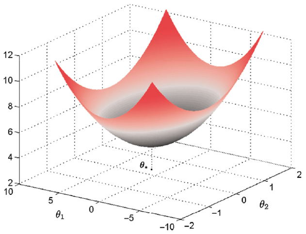
Fig. 2.1 Función de coste en el espacio de parámetros bidimensional.#
Suponga que en la iteración \(i-1\) el valor \(\boldsymbol{\theta}^{(i-1)}\) ha sido obtenido. Evaluando la función objetivo en el nuevo punto se obtiene
Si \(\mu_i\) es suficientemente pequeño, el nuevo punto se encuentra en un entorno cercano a \(\boldsymbol{\theta}^{(i-1)}\), lo que permite aproximar \(J(\cdot)\) mediante una expansión de Taylor de primer orden alrededor de \(\boldsymbol{\theta}^{(i-1)}\):
\[ J(\boldsymbol{\theta}^{(i-1)} + \mathbf{h}) \approx J(\boldsymbol{\theta}^{(i-1)}) + \nabla^{T} J(\boldsymbol{\theta}^{(i-1)})\, \mathbf{h}, \]donde \(\mathbf{h}\) es una perturbación pequeña.
En este caso,
Sustituyendo en la expresión anterior se obtiene
\[ J(\boldsymbol{\theta}^{(i)}) \approx J(\boldsymbol{\theta}^{(i-1)}) + \nabla^{T} J(\boldsymbol{\theta}^{(i-1)}) \big(\mu_i \Delta \boldsymbol{\theta}^{(i)}\big), \]o, de forma equivalente,
\[ J(\boldsymbol{\theta}^{(i)}) \approx J(\boldsymbol{\theta}^{(i-1)}) + \mu_i \cdot \nabla^{T} J(\boldsymbol{\theta}^{(i-1)}) \Delta \boldsymbol{\theta}^{(i)}. \]Esta aproximación describe el cambio local de la función objetivo como una función lineal del desplazamiento en el espacio de parámetros. El término \(\nabla^{T} J(\boldsymbol{\theta}^{(i-1)}) \Delta \boldsymbol{\theta}^{(i)}\) corresponde al producto interno entre el gradiente y la dirección de actualización, e indica si el valor de la función objetivo aumenta o disminuye.
Nótese que seleccionando la dirección tal que \(\nabla^{T}J(\boldsymbol{\theta}^{(i-1)})\Delta\boldsymbol{\theta}^{(i)}<0\), garantizará que \(J(\boldsymbol{\theta}^{(i-1)}+\mu_{i}\Delta\boldsymbol{\theta}^{(i)})<J(\boldsymbol{\theta}^{(i-1)})\). Tal selección de \(\Delta\boldsymbol{\theta}^{(i)}\) y \(\nabla J(\boldsymbol{\theta}^{(i-1)})\) debe formar un ángulo obtuso. Las curvas de nivel asociadas a \(J(\boldsymbol{\theta})\) pueden tomar cualquier forma, la cual va a depender de como está definido \(J(\boldsymbol{\theta})\).
\(J(\boldsymbol{\theta})\) se supone diferenciable, por lo tanto, las curvas de nivel o contornos deben ser suaves y aceptar un plano tangente en cualquier punto. Además, de los cursos de cálculo sabemos que el vector gradiente \(\nabla J(\boldsymbol{\theta})\) es perpendicular al plano tangente (recta tangente) a la correspondiente curva de nivel en el punto \(\boldsymbol{\theta}\). Nótese que seleccionando la dirección de búsqueda \(\Delta\boldsymbol{\theta}^{(i)}\) que forma un angulo obtuso con el gradiente, se coloca a \(\boldsymbol{\theta}^{(i-1)}+\mu_{i}\Delta\boldsymbol{\theta}^{(i)}\) en un punto sobre el contorno el cual corresponde a un valor menor que \(J(\boldsymbol{\theta})\).
Dos problemas surgen ahora:
Escoger la mejor dirección de búsqueda
Calcular que tan lejos es aceptable un movimiento a traves de esta dirección.

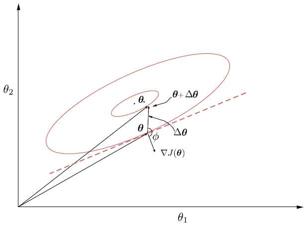
Fig. 2.2 El vector gradiente en un punto \(\boldsymbol{\theta}\) es perpendicular al plano tangente (línea punteada) en la curva de nivel que cruza \(\boldsymbol{\theta}\). La dirección de descenso forma un ángulo obtuso, \(\phi\), con el vector gradiente.#
Nótese que si \(\mu_{i}\|\Delta\boldsymbol{\theta}^{(i)}\|\) es demasiado grande, entonces el nuevo punto puede ser colocado en un contorno correspondiente a un valor mayor al del actual contorno.

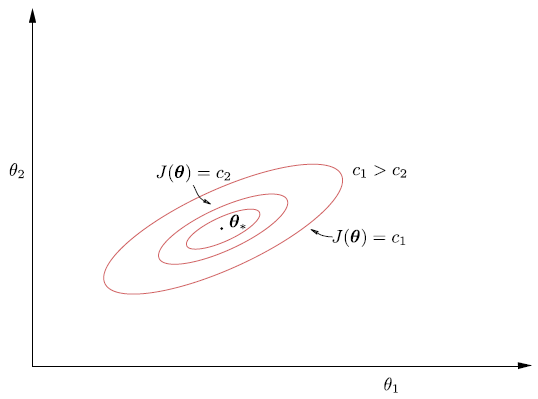
Fig. 2.3 Las correspondientes curvas de nivel para la función de coste, en el plano bidimensional. Nótese que a medida que nos alejamos del valor óptimo, \(\boldsymbol{\theta}_{\star}\), los valores de \(c\) aumentan.#
Con el fin de analizar exclusivamente la dirección de búsqueda (1), se fija inicialmente \(\mu_i = 1\) y se consideran únicamente vectores de búsqueda unitarios \(\boldsymbol{z}\) tales que
De este modo, el problema se reduce a determinar la dirección unitaria que minimiza el producto interno con el gradiente:
Nótese que
Si \(\nabla^T J \cdot z\) es grande y positivo, \(J\) aumenta mucho.
Si \(\nabla^T J \cdot z\) es grande y negativo, \(J\) disminuye mucho.
Este planteamiento responde a la pregunta fundamental:
¿En qué dirección, manteniendo fija la longitud del desplazamiento, se logra la mayor disminución local de la función objetivo?
De álgebra lineal se sabe que, para cualquier vector no nulo \(\boldsymbol{a} \in \mathbb{R}^n\),
\[ \min_{\|\boldsymbol{z}\| = 1} \; \boldsymbol{a}^{T} \boldsymbol{z} = -\|\boldsymbol{a}\|, \]y que dicho mínimo se alcanza cuando
\[ \boldsymbol{z} = -\frac{\boldsymbol{a}}{\|\boldsymbol{a}\|}. \]
En efecto, queremos resolver:
\[ \min_{\|z\| = 1} \mathbf{a}^T z \]donde \(\mathbf{a} \in \mathbb{R}^n\) es un vector fijo no nulo.
Recordemos la identidad del producto escalar:
\[ \mathbf{a}^T z = \|\mathbf{a}\| \|z\| \cos \theta, \]donde \(\theta\) es el ángulo entre \(\mathbf{a}\) y \(z\).
Dado que \(\|z\| = 1\), la expresión se simplifica a:
Como \(\|\mathbf{a}\| > 0\) es constante, minimizar \(\mathbf{a}^T z\) equivale a minimizar \(\cos \theta\). El rango de la función coseno es
El valor mínimo \(\cos \theta = -1\) se alcanza cuando
Cuando \(\theta = \pi\), el vector \(z\) apunta en la dirección exactamente opuesta a \(\mathbf{a}\). Esto significa que existe un escalar \(\alpha < 0\) tal que
Calculamos la norma de \(z\)
Dado que \(\|z\| = 1\), tenemos
Como \(\alpha < 0\):
Sustituyendo \(\alpha\) en \(z = \alpha \mathbf{a}\):
Aplicación al gradiente. Tomando
\[ \boldsymbol{a} = \nabla J(\boldsymbol{\theta}^{(i-1)}), \]se concluye que la dirección unitaria que produce la mayor disminución local de \(J\) es
\[ \boldsymbol{z} = -\frac{\nabla J(\boldsymbol{\theta}^{(i-1)})} {\|\nabla J(\boldsymbol{\theta}^{(i-1)})\|}. \]Geométricamente:
El gradiente \(\nabla J\) apunta en la dirección de máximo crecimiento de \(J\).
El gradiente negativo apunta en la dirección de máximo descenso local.
La normalización únicamente fija la longitud del vector.
En la práctica, no es necesario normalizar la dirección de descenso, ya que el tamaño del paso está controlado por el parámetro \(\mu_i\). Por esta razón, se define directamente
\[ \Delta \boldsymbol{\theta}^{(i)} = -\nabla J(\boldsymbol{\theta}^{(i-1)}), \]lo que da lugar al método conocido como descenso por gradiente.
Sustituyendo esta elección en el producto interno se obtiene
Este valor es estrictamente negativo, excepto en puntos críticos donde el gradiente se anula. En consecuencia, para valores suficientemente pequeños de \(\mu_i\), la aproximación de Taylor garantiza que
\[ J(\boldsymbol{\theta}^{(i)}) < J(\boldsymbol{\theta}^{(i-1)}), \]lo que asegura una disminución del valor de la función objetivo en cada iteración.
Por lo tanto, para todos los vectores con norma Euclidiana 1, la dirección de descenso mas pronunciada coincide con la dirección del gradiente descendente, negativo, y la correspondiente actualización recursiva se convierte en
\[ \boldsymbol{\theta}^{(i)}=\boldsymbol{\theta}^{(i-1)}-\mu_{i}\nabla J(\boldsymbol{\theta}^{(i-1)}),\quad\text{Gradiente descendente}. \]donde
\(-\nabla J\!\left(\theta^{(i-1)}\right)\) representa la dirección de descenso.
\(\mu_i > 0\) es el tamaño del paso o learning rate.
La cantidad \(\|\nabla J(\theta^{(i-1)})\|^2\) aparece únicamente en el análisis teórico del descenso, al evaluar la variación de la función objetivo, y no forma parte de la actualización del algoritmo.

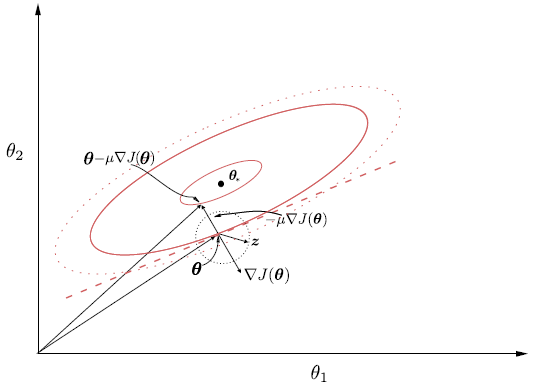
Fig. 2.4 Representación del gradiente negativo el cual conduce a la máxima disminución de la función de coste.#
La selección de \(\mu_{i}\) debe ser realizada de tal forma que garantice convergencia de la secuencia de minimización. Nótese que el algoritmo puede oscilar en torno al mínimo sin converger, si no seleccionamos la dirección correcta. La selección de \(\mu_{i}\) dependerá de la convergencia a cero del error entre \(\boldsymbol{\theta}^{(i)}\) y el mínimo real en forma de serie geométrica.
Ejercicio
Por ejemplo, para el caso de la función de coste del error cuadrático medio, la longitud de paso está dada por: \(0<\mu<2/\lambda_{\max}\), donde \(\lambda_{\max}\) el máximo eigenvalor de la matriz de covarianza \(\Sigma_{x}=\mathbb{E}[\boldsymbol{x}\boldsymbol{x}^{T}]\), donde \(J(\boldsymbol{\theta})=E[(y-\boldsymbol{\theta}^{T}\boldsymbol{x})^{2}]\) (ver Sección 5.3 [Theodoridis, 2020]).
2.2. Redes neuronales#
Introducción
Las redes neuronales son sistemas de aprendizaje compuestos por neuronas conectadas en capas que ajustan sus conexiones para aprender. Tras un período de 25 años desde su inicio, las redes neuronales se convirtieron en la norma en el aprendizaje automático. En un principio, dominaron durante una década, pero luego fueron superadas por máquinas de vectores de soporte.
Sin embargo, desde 2010, las redes neuronales profundas se han vuelto populares gracias a mejoras en la tecnología y la disponibilidad de grandes conjuntos de datos, impulsando el campo del aprendizaje automático.
2.3. El perceptrón#
Nuestro punto de partida será considerar el problema simple de una tarea de clasificación conformada por dos clases linealmente separables. En otras palabras, dado un conjunto de muestras de entrenamiento, \((y_{n}, \boldsymbol{x}_{n})\), \(n=1,2,\dots,N\), con \(y_{n}\in\{-1,+1\},~\boldsymbol{x}_{n}\in\mathbb{R}^{l}\), suponemos que existe un hiperplano
\[ \boldsymbol{\theta}_{\star}^{T}\boldsymbol{x}=0, \]tal que,
\[\begin{split} \begin{cases} \boldsymbol{\theta}_{\star}^{T}\boldsymbol{x}&>0,\quad\text{si}\quad\boldsymbol{x}\in\omega_{1}\\ \boldsymbol{\theta}_{\star}^{T}\boldsymbol{x}&<0,\quad\text{si}\quad\boldsymbol{x}\in\omega_{2} \end{cases} \end{split}\]En otras palabras, dicho hiperplano clasifica correctamente todos los puntos del conjunto de entrenamiento. Para simplificar, el término de sesgo del hiperplano ha sido absorbido en \(\boldsymbol{\theta}_{\star}\) después de extender la dimensionalidad del espacio de entrada en uno. El objetivo ahora es desarrollar un algoritmo que calcule iterativamente un hiperplano que clasifique correctamente todos los patrones de ambas clases. Para ello, se adopta una función de costo.
Sea \(\boldsymbol{\theta}\) la estimación del vector de parámetros desconocidos, disponible en la actual iteración. Entonces hay dos posibilidades. La primera es que todos los puntos estén clasificados correctamente; esto significa que se ha obtenido una solución. La otra alternativa es que \(\boldsymbol{\theta}\) clasifique correctamente algunos de los puntos y el resto estén mal clasificados.
Costo perceptrón
Sea \(\mathcal{Y}\) el conjunto de todas las muestras mal clasificadas. La función de costo, perceptrón se define como
donde
Nótese que la función la función de costo es no negativa. En efecto, dado que la suma es sobre los puntos mal clasificados, si \(\boldsymbol{x}_{n}\in\omega_{1}~(\omega_{2}),~\) entonces \(\boldsymbol{\theta}^{T}\boldsymbol{x}_{n}\leq (\geq)~0\), entregando así un producto \(-y_{n}\boldsymbol{\theta}^{T}\boldsymbol{x}_{n}\geq0\).
La función de costo es cero, si no existen puntos mal clasificados, esto es, \(\mathcal{Y}=\emptyset\). La función de costo perceptrón no es diferenciable en todos los puntos, es lineal por tramos. Si reescribimos \(J(\boldsymbol{\theta})\) en una forma ligeramente diferente:
Nótese que esta es una función lineal con respeto a \(\boldsymbol{\theta}\), siempre que el conjunto de puntos mal clasificados permanezca igual. Además, nótese que ligeros cambios del valor \(\boldsymbol{\theta}\) corresponden a cambios de posición del respectivo hiperplano. Como consecuencia, existirá un punto donde el número de muestras mal clasificadas en \(\mathcal{Y}\), repentinamente cambia; este es el tiempo donde una muestra en el conjunto de entrenamiento cambia su posición relativa con respecto a el hiperplano en movimiento, y en consecuencia, el conjunto \(\mathcal{Y}\) es modificado. Después de este cambio, el conjunto, \(J(\boldsymbol{\theta})\), corresponderá a una nueva función lineal.
El algoritmo perceptrón
A partir del método de subgradientes se puede verificar fácilmente que, iniciando desde un punto arbitrario, \(\boldsymbol{\theta}^{(0)}\), el siguiente método iterativo,
converge después de un número finito de pasos. La sucesión de parámetros \(\mu_{i}\) es seleccionada adecuadamente para garantizar convergencia.
Nótese que usando el método de subgradiente (ver apéndice) o gradiente descendente se tiene que
Otra versión del algoritmo considera una muestra por iteración en un esquema cíclico, hasta que el algoritmo converge. Denotemos por \(y_{(i)}\), \(\boldsymbol{x}_{i},~i\in\{1,2,\dots,N\}\) los pares de entrenamiento presentados al algoritmo en la iteración \(i\)-ésima. Entonces, la iteración de actualización se convierte en:
Esto es, partiendo de una estimación inicial de forma random, inicializando \(\boldsymbol{\theta}^{(0)}\) con algunos valores pequeños, testeamos cada una de las muestras, \(\boldsymbol{x}_{n},~n=1,2,\dots,N\). Cada vez que una muestra es mal clasificada, se toma acción por medio de la regla perceptrón para una corrección. En otro caso, ninguna acción es requerida.
Una vez que todas las muestras han sido consideradas, decimos que una
época (epoch)ha sido completada. Si no se obtiene convergencia, todas las muestras son reconsideradas en una segunda época, y así sucesivamente. La versión de este algoritmo es conocida como esquemapattern-by-pattern. Algunas veces también es referido como el algoritmo online. Nótese que el número total de datos muestrales es fijo, y que el algoritmo las considera en forma cíclica, época por época (epoch-by-epoch).
Observación
Después de un número finito de épocas, se garantiza que el algoritmo es convergente (convexidad de \(J\) y clases linealmente separables). Nótese que para obtener dicha convergencia, la sucesión \(\mu_{i}\) debe ser seleccionada apropiadamente. Sin embargo, para el caso del algoritmo perceptrón, la convergencia es garantizada, aun cuando \(\mu_{i}\) es una constante positiva, \(\mu_{i}=\mu>0\), usualmente tomado igual a uno.
La formulación en (2.1) es conocida también como la filosofía de aprendizaje
reward-punishment. Si la actual estimación es exitosa en la predicción de la clase del respectivo patrón, ninguna acción es tomada (reward), en otro caso, el algoritmo es obligado a realizar una actualización (punishment).
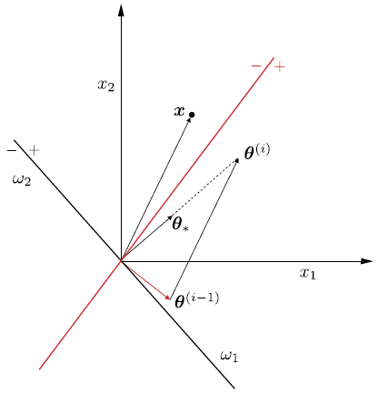
Fig. 2.5 El punto \(x\) está mal clasificado por la línea roja. La regla perceptrón gira el hiperplano hacia el punto \(x\), para intentar incluirlo en el lado correcto del nuevo hiperplano y clasificarlo correctamente.#
La Fig. 2.5 ofrece una interpretación geométrica de la regla del perceptrón. Supongamos que la muestra \(\boldsymbol{x}\) está mal clasificada por el hiperplano, \(\boldsymbol{\theta}^{(i-1)}\). Como sabemos, por geometría analítica, \(\boldsymbol{\theta}^{(i-1)}\) corresponde a un vector que es perpendicular al hiperplano que está definido por este vector. Como \(\boldsymbol{x}\) se encuentra en el lado \((-)\) del hiperplano y está mal clasificado, pertenece a la clase \(\omega_{1}\); asumiendo \(\mu = 1\), la corrección aplicada por el algoritmo es
\[ \boldsymbol{\theta}^{(i)}=\boldsymbol{\theta}^{(i-1)}+\boldsymbol{x}, \]y su efecto es girar el hiperplano en dirección a \(\boldsymbol{x}\) para colocarlo en el lado \((+)\) del nuevo hiperplano, que está definido por la estimación actualizada \(\boldsymbol{\theta^{(i)}}\). El algoritmo perceptrón en su modo de funcionamiento patrón por patrón (pattern-by-pattern) se resume en el siguiente algoritmo:
Algorithm 2.1 (Algoritmo perceptrón pattern-by-pattern)
Inicialización
Inicializar \(\boldsymbol{\theta}^{(0)}\); usualmente, de forma random, pequeño
Seleccionar \(\mu\); usualmente establecido como uno
\(i=1\)
Repeat Cada iteración corresponde a un epoch
counter = 0; Contador del número de actualizaciones por epoch
For \(n=1,2,\dots,N\) Do Para cada epoch, todas las muestras son presentadas una vez
If(\(y_{n}\boldsymbol{x}_{n}^{T}\leq0\)) Then
\(\boldsymbol{\theta}^{(i)}=\boldsymbol{\theta}^{(i-1)}+\mu y_{n}\boldsymbol{x}_{n}\)
\(i=i+1\)
counter = counter + 1
End For
Until counter = 0
Una vez que el algoritmo perceptrón se ha ejecutado y converge, tenemos los pesos, \(\theta_{i},~i = 1,2,\dots,l\), de las sinapsis de la neurona/perceptrón asociada, así como el término de sesgo \(\theta_{0}\). Ahora se pueden utilizar para clasificar patrones desconocidos. Las características \(x_{i}, i = 1, 2,\dots,l\), se aplican a los nodos de entrada. A su vez, cada característica se multiplica por la sinapsis respectiva (peso), y luego se añade el término de sesgo en su combinación lineal.
El resultado de esta operación pasa por una función no lineal, \(f\), conocida como función de activación (ver Activation function). Dependiendo de la forma de la no linealidad, se producen diferentes tipos de neuronas. La mas clásica conocida como neurona McCulloch-Pitts, la función de activación es la de Heaviside, es decir,

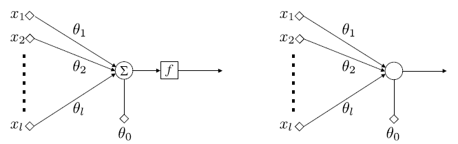
Fig. 2.6 Arquitectura básica de neuronas/perceptrones.#
En la arquitectura básica de neuronas/perceptrones, las características de entrada se aplican a los nodos de entrada y se ponderan por los respectivos pesos que definen las sinapsis. A continuación se añade el término de sesgo en su combinación lineal y el resultado es empujado a través de la no linealidad. En la neurona McCulloch-Pitts, la salida es 1 para los patrones de la clase \(\omega_{1}\) o 0 para la clase \(\omega_{2}\). La suma y la operación no lineal se unen para simplificar el gráfico.

Para las capas ocultas (
input layer), la función de activación tangente hiperbólica suele funcionar mejor que la sigmoidea logística. Tanto la funciónsigmoidcomotanhpueden hacer que el modelo sea mássusceptible a los problemas durante el entrenamiento, a través del llamado problema de los gradientes desvanecientes. Los modelos modernos de redes neuronales con arquitecturas comunes, comoMLPyCNN, harán uso de la función de activaciónReLU, o extensiones.Las redes recurrentes suelen utilizar funciones de activación
tanhosigmoid, o incluso ambas. Por ejemplo, la LSTM suele utilizar la activaciónsigmoidpara las conexiones recurrentes y la activacióntanhpara la salida.

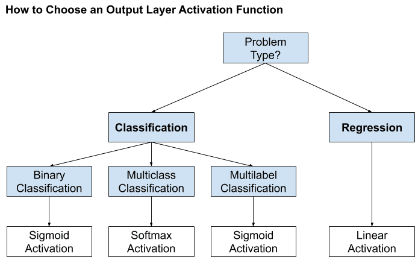
Fig. 2.8 Selección de función de activación para hidden layers. (Fuente [Brownlee and Mastery, 2017]).#
Si su problema es de regresión, debería utilizar una función de activación lineal en el
output layer. Si su problema es de clasificación, el modelo predice la probabilidad de pertenencia a una clase, que se puede convertir en una etiqueta de clase mediante redondeo (para sigmoid) oargmax(para softmax). Usualmente,softmaxes usada en clasificación múltiple cuando las clases son mutuamente excluyentes en caso contrario puede usar la función de activaciónsigmoidpara cada output.
2.4. Redes Totalmente Conectadas#
Para resumir de manera más formal el tipo de operaciones que tienen lugar en una red totalmente conectada, centrémonos en, por ejemplo, la capa \(r\) de una red neuronal multicapa y supongamos que está formada por \(k_{r}\) neuronas. El vector de entrada a esta capa está formado por las salidas de los nodos de la capa anterior, que se denomina \(\boldsymbol{y}^{r-1}\).
Sea \(\boldsymbol{\theta}_{j}^{r}\) el vector de los pesos sinápticos, incluido el término de sesgo, asociado a la neurona \(j\) de la capa \(r\), donde \(j = 1,2,\dots, k_{r}\). La dimensión respectiva de este vector es \(k_{r-1} + 1\), donde \(k_{r-1}\) es el número de neuronas de la capa anterior, \(r-1\), y el aumento en 1 representa el término de sesgo. Entonces las operaciones realizadas, antes de la no linealidad, son los productos internos
Colocando todos los valores de salida en un vector \(\boldsymbol{z}^{r}=[z_{1}^{r}, z_{2}^{r},\dots,z_{k_{r}}^{r}]^{T}\), y agrupando todos los vectores sinápticos como filas, una debajo de la otra, en una matriz, podemos escribir colectivamente
El vector de las salidas de la \(r\) th capa oculta, después de empujar cada \(z_{i}^{r}\) a través de la no linealidad \(f\), está finalmente dado por
La siguiente figura describe como es creada la \(j\)-ésima capa de la red neuronal full conectada

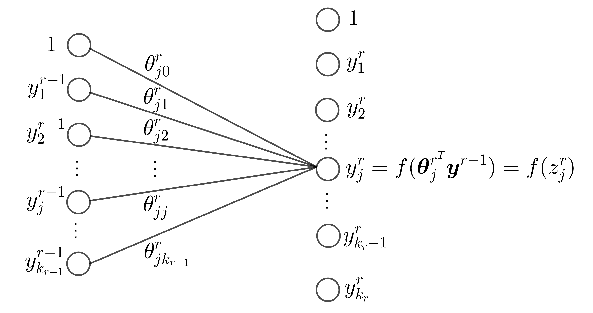
Fig. 2.9 \(j\)-ésimo elemento de la capa \(r\) de la red totalmente conectada.#
Observación
La notación anterior significa que \(f\) actúa sobre cada uno de los respectivos componentes del vector, individualmente, y la extensión del vector en uno es para dar cuenta de los términos de sesgo en la práctica estándar. Para redes grandes, con muchas capas y muchos nodos por capa, este tipo de conectividad resulta ser muy costoso en términos del número de parámetros (pesos), que es del orden de \(k_{r}k_{r-1}\).
Por ejemplo, si \(k_{r-1} = 1000\) y \(k_{r} = 1000\), esto equivale a un orden de 1 millón de parámetros. Tenga en cuenta que este número es la contribución de los parámetros de una sola de las capas. Sin embargo, un gran número de parámetros hace que una red sea vulnerable al sobreajuste, cuando se trata de entrenamiento
Las técnicas de reparto de pesos consisten en compartir un conjunto de parámetros entre varias conexiones mediante restricciones específicas. Las redes neuronales recurrentes y convolucionales aplican este principio; en estas últimas, las convoluciones reemplazan al producto interno, reduciendo significativamente el número de parámetros.
2.5. El Algoritmo De Backpropagation#
Una red neuronal considera una función paramétrica no lineal, \(\hat{y} = f_{\boldsymbol{\theta}}(\boldsymbol{x})\), donde \(\boldsymbol{\theta}\) representa todos los pesos/sesgo presentes en la red. Por lo tanto, el entrenamiento de una red neuronal no parece ser diferente del entrenamiento de cualquier otro modelo de predicción paramétrica.
Todo lo que se necesita es (a) un conjunto de muestras de entrenamiento, (b) una función de pérdida \(\mathcal{L}(y, \hat{y})\), y (c) un esquema iterativo, por ejemplo, el gradiente descendente, para realizar la optimización de la función de coste asociada (pérdida empírica).
La dificultad del entrenamiento de las redes neuronales radica en su estructura multicapa que complica el cálculo de los gradientes, que intervienen en la optimización. Además, la neurona McCulloch-Pitts se basa en la función de activación discontinua Heaviside no diferenciable.
Neurona sigmoidea logística: Una posibilidad es adoptar la función sigmoidea logística, es decir,
Nótese que cuanto mayor sea el valor del parámetro \(a\), la gráfica correspondiente se acerca más a la de la función de Heaviside (ver Fig. 2.10).

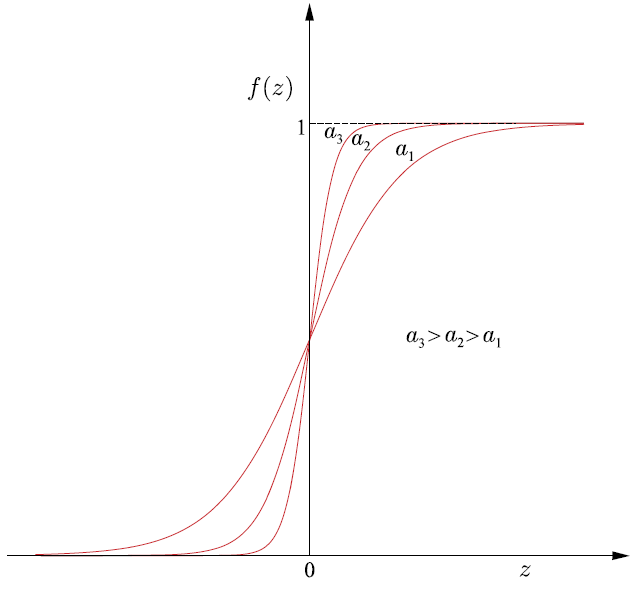
Fig. 2.10 Función sigmoidea logística para diferentes valores del parámetro \(a\).#
Otra posibilidad sería utilizar la función,
\[ f(z)=a\tanh\left(\frac{cz}{2}\right), \]donde \(c\) y \(a\) son parámetros de control. El gráfico de esta función se muestra en la Fig. 2.11. Nótese que a diferencia de la sigmoidea logística, esta es una función no simétrica, es decir, \(f(-z)=-f(z)\). Ambas son también conocidas como funciones de reducción, porque limitan la salida a un rango finito de valores.

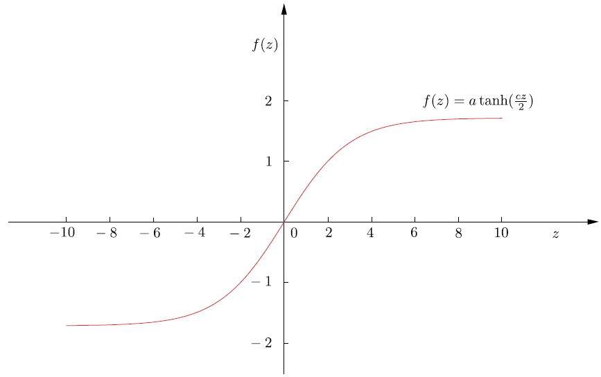
Fig. 2.11 Función de reducción de la tangente hiperbólica para \(a = 1.7\) y \(c = 4/3\).#
Recordemos que la regla de actualización del algoritmo gradiente descendente, en su versión unidimensional se convierte en
\[ \theta(new)=\theta(old)-\mu\left.\frac{d J}{d\theta}\right|_{\theta(old)}, \]y las iteraciones parten de un punto inicial arbitrario, \(\theta^{(0)}\).
Si en la iteración actual el algoritmo está digamos, en el punto \(\theta(old) = \theta_{1}\), entonces se moverá hacia el mínimo local, \(\theta_{l}\). Esto se debe a que la derivada del coste en \(\theta_{1}\) es igual a la tangente \(\phi_{1}\) (ver Fig. 2.12), que es negativa (el ángulo es obtuso) y la actualización, \(\theta(new)\), se moverá a la derecha, hacia el mínimo local, \(\theta_{l}\).

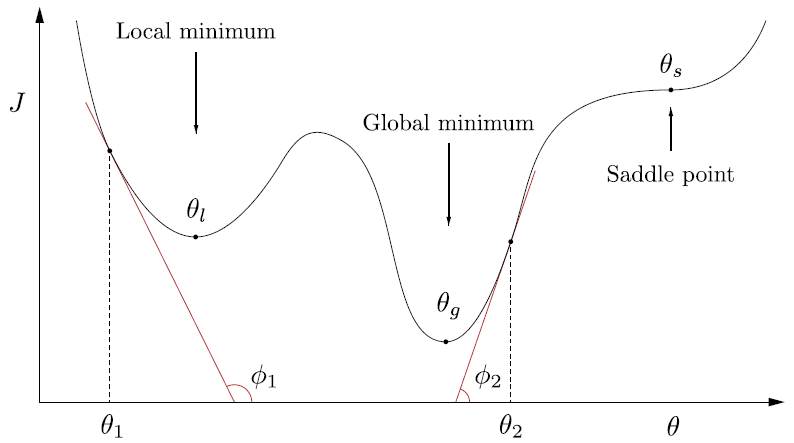
Fig. 2.12 Función no convexa global, con mínimos locales y puntos de silla.#
Observación
La elección del tamaño de paso \(\mu\) es clave para la convergencia. En espacios multidimensionales, abundan los mínimos locales, pero converger a uno profundo y cercano al mínimo global puede ser aceptable. Para evitarlos, pueden emplearse optimizadores como Adam, RMSprop o AdaGrad, explorar otras funciones de coste o aplicar regularización, ya que modelos muy complejos son más propensos a caer en mínimos locales.
2.6. El Esquema De Backpropagation Para Gradiente Descendente#
Habiendo adoptado una función de activación diferenciable, estamos listos para proceder a desarrollar el esquema iterativo de gradiente descendente para la minimización de la función de coste. Formularemos la tarea en un marco general.
Sea \((\boldsymbol{y}_{n}, \boldsymbol{x}_{n}), n = 1, 2,\dots, N\), el conjunto de muestras de entrenamiento. Nótese que hemos asumido múltiples variables output, como vectores. Suponemos que la red consta de \(L\) capas, \(L-1\) capas ocultas y una capa de salida. Cada capa consta de \(k_{r}, r = 1, 2,\dots, L\), neuronas. Así, los vectores de salida (objetivo/deseado) son
Para ciertas derivaciones matemáticas, también denotamos el número de nodos de entrada como \(k_{0}\); es decir, \(k_{0} = l\), donde \(l\) es la dimensionalidad del espacio de características de entrada.
Sea \(\boldsymbol{\theta}_{j}^{r}\) el vector de los pesos sinápticos asociados a la \(j\)-th neurona de la \(r\)-th capa, con \(j = 1, 2,\dots, k_{r}\) y \(r = 1, 2,\dots,L\), donde el término de sesgo se incluye en \(\boldsymbol{\theta}_{j}^{r}\), es decir,
Los pesos sinápticos en la capa \(r\) enlazan la neurona respectiva con todas las neuronas de la capa \(k_{r-1}\) (véase la Fig. 2.13). El paso iterativo básico para el esquema de gradiente descendente se escribe como
El parámetro \(\mu\) es el tamaño de paso definido por el usuario (también puede depender de la iteración) y \(J\) denota la función de coste.

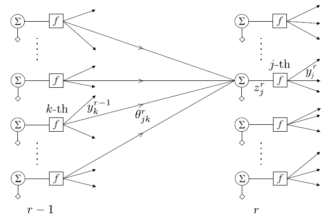
Fig. 2.13 Enlaces y las variables asociadas de la \(j\) th neurona en la \(r\) th capa. \(y_{k}^{r-1}\) es la salida de la \(k\) th neurona de la \((r - 1)\) th capa y \(\theta_{jk}^{r}\) es el peso respectivo que conecta estas dos neuronas.#
Las ecuaciones de actualización (2.3) comprenden el par del esquema de gradiente descendente para la optimización. Como se ha dicho anteriormente, la dificultad de las redes neuronales feed-forward surge de su estructura multicapa. Para calcular los gradientes en la Ecuación (2.3), para todas las neuronas, en todas las capas, se deben seguir dos pasos en su cálculo
Forward computations: Para un vector de entrada dado \(\boldsymbol{x}_{n}, n = 1, 2,\dots, N\), se utilizan las estimaciones actuales de los parámetros (pesos sinápticos) (\(\boldsymbol{\theta}_{j}^{r}(old)\)) y calcula todas las salidas de todas las neuronas en todas las capas, denotadas como \(y_{nj}^{r}\); en la Fig. 2.13, se ha suprimido el índice \(n\) para no afectar la notación.Backward computations: Utilizando las salidas neuronales calculadas anteriormente junto con los valores objetivos conocidos, \(y_{nk}\), de la capa de salida, se calculan los gradientes de la función de coste. Esto implica \(L\) pasos, es decir, tantos como el número de capas. La secuencia de los pasos algorítmicos se indica a continuación:Calcular el gradiente de la función de coste con respecto a los parámetros de las neuronas de la última capa, es decir, \(\partial J/\partial\boldsymbol{\theta}_{j}^{L}, j = 1, 2,\dots, k_{L}\).
For \(r = L-1\) to \(1\), Do
Calcular los gradientes con respecto a los parámetros asociados a las neuronas de la \(r\) th capa, es decir, \(\partial J/\partial\boldsymbol{\theta}_{k}^{r}, k= 1, 2,\dots, k_{r}\) basado en todos los gradientes \(\partial J/\partial\boldsymbol{\theta}_{j}^{r+1}, j= 1, 2,\dots, k_{r+1}\), con respecto a los parámetros de la capa \(r + 1\) que se han calculado en el paso anterior.
End For
Ejemplo
Analicemos un ejemplo concreto de forward computations, seguido de un enfoque backward computations. El ejemplo de entrenamiento será (\(x=2.1\), \(y=4\)), el peso inicial será \(w:=\theta_{1}=1\), el sesgo será \(b:=\theta_{0}=0\) y \(\textsf{Loss}=L\). \(\hat{y}\) representa la salida de la neurona y el valor predicho, mientras que la pérdida se refiere a la pérdida por error cuadrático

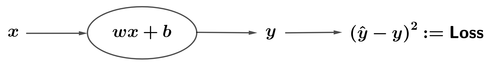
Fig. 2.14 Ejemplo de red neuronal para backpropagation#
Forward computaion:

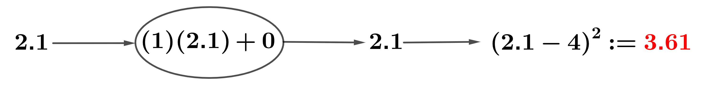
Backward computation: Ahora podemos retroceder (backpropagation) y calcular las derivadas parciales aplicando la regla de la cadena para obtener
Luego, actualizamos los parámetros en la dirección opuesta al gradiente para disminuir la pérdida, con una tasa de aprendizaje de \(\textsf{lr}:=\mu=0.01\)
Para evaluar el rendimiento de nuestros parámetros ajustados, realizaremos una pasada adicional
La pérdida total disminuyó de 3.61 a 2.87, lo que representa una reducción de 0.74. ¡La pérdida ha bajado!
2.7. Entrenamiento de MLP#
Observación
Los pesos de una red neuronal se ajustan mediante algoritmos de optimización basados en gradiente, como el gradiente descendente estocástico, que minimiza iterativamente la función de pérdida \(L\). Para tareas de regresión, se emplean el error cuadrático medio (MSE) y el error absoluto medio (MAE); para clasificación, se utilizan pérdidas logarítmicas binarias o categóricas.
El algoritmo backpropagation se comprende a través de grafos computacionales, útiles para calcular en redes neuronales. En una red simple con una capa oculta de dos neuronas con activación sigmoidea y salida lineal, alimentada por dos entradas \([y_1, y_2]\), los pesos se distribuyen en los bordes de la red.

La Fig. 2.16 ilustra este proceso mediante un grafo computacional para la entrada \([-1, 2]\), generando salidas intermedias \(p_i\). En particular, \(p_7\) y \(p_8\) corresponden a las salidas de las neuronas ocultas \(g_1\) y \(g_2\). Durante este paso también se calcula la función de pérdida \(L\) usada en el entrenamiento.
En el backpropagation, el recorrido inverso del grafo (backward pass) calcula las derivadas parciales entre nodos conectados. Siguiendo la regla de la cadena, la derivada de la pérdida respecto a un peso es el producto de las derivadas a lo largo de cada camino que los une, y si hay varios caminos, se suman. Este enfoque gráfico sustenta las bibliotecas modernas de deep learning para implementar los pasos forward y backward (ver Fig. 2.17)
Las derivadas parciales de la función de pérdida con respecto a los pesos se obtienen aplicando la regla de la cadena:
Durante el entrenamiento, los pesos suelen inicializarse aleatoriamente, ya sea con una distribución uniforme en un rango como \([-1, 1]\) o con una distribución normal de media cero y varianza unitaria, existiendo variantes que aceleran la convergencia.
En este ejemplo, se asume inicialización uniforme, obteniendo: \(w_1 = -0.33,\; w_2 = -0.33,\; w_3 = 0.57,\; w_4 = -0.01,\; w_5 = 0.07,\; w_6 = 0.82\). Con estos valores, se realizan los pasos forward y backward sobre el grafo computacional, mostrando en azul los resultados del forward y en rojo los gradientes del backward. El valor real de la variable objetivo se fija en \(y = 1\).
Una vez calculados los gradientes a lo largo de las aristas, las derivadas parciales con respecto a los pesos no son más que una aplicación de la regla de la cadena, de la que ya hemos hablado. Los valores de las derivadas parciales son los siguientes:
El siguiente paso es actualizar los pesos mediante gradiente descendente. Con tasa de aprendizaje \(\alpha = 0.01\):
El resto de pesos se actualizan con la misma fórmula. Este proceso se repite varias veces; el número de actualizaciones se denomina número de épocas. Generalmente, un criterio de tolerancia sobre el cambio en la función de pérdida controla cuándo detener el entrenamiento.
Para determinar los pesos, se combina backpropagation con un optimizador basado en gradiente. Bibliotecas como TensorFlow, Theano o CNTK implementan gráficos computacionales que entrenan redes neuronales de cualquier arquitectura, ejecutando operaciones matriciales y aprovechando GPU para acelerar el cálculo.
Ejercicio para el estudiante: iteraciones de gradiente descendente
Complete a mano, o con una calculadora o una hoja de cálculo, cinco iteraciones de gradiente descendente sobre la red del ejemplo, con tasa de aprendizaje \(\alpha = 0.01\) y la función de pérdida \(L = (y-\hat{y})^2\). Parta de los pesos iniciales del ejemplo desarrollado. El objetivo es observar que el error disminuye a medida que se actualizan los pesos.
En cada iteración \(t = 1, \dots, 5\) debe realizar los siguientes pasos:
Calcular el paso hacia adelante con los pesos vigentes para obtener \(p_1, \dots, p_{10}\) y \(\hat{y}^{(t)}\).
Calcular la pérdida \(L^{(t)} = (y-\hat{y}^{(t)})^2\).
Calcular los seis gradientes \(\partial L/\partial\omega_j\), con \(j = 1, \dots, 6\), mediante la regla de la cadena.
Actualizar los seis pesos con \(\omega_j^{(t+1)} = \omega_j^{(t)} - \alpha\,\partial L/\partial\omega_j\).
Registre sus resultados en una tabla como la siguiente:
Iteración \(t\) |
\(\omega_1\) |
\(\omega_2\) |
\(\omega_3\) |
\(\omega_4\) |
\(\omega_5\) |
\(\omega_6\) |
\(\hat{y}^{(t)}\) |
\(L^{(t)}\) |
|---|---|---|---|---|---|---|---|---|
0 |
||||||||
1 |
||||||||
2 |
||||||||
3 |
||||||||
4 |
||||||||
5 |
Responda las siguientes preguntas:
Grafique \(L^{(t)}\) en función de \(t\). ¿Disminuye la pérdida en cada iteración?
¿Por qué los cambios en los pesos son pequeños con \(\alpha = 0.01\)? ¿Qué esperaría observar con un valor mayor de \(\alpha\)?
¿Cuántas iteraciones adicionales cree que se necesitarían para que la pérdida cambie menos que una tolerancia de \(10^{-6}\)? Justifique su respuesta.
Conserve al menos cuatro cifras decimales en todos los cálculos, para que la reducción del error sea apreciable.
Observación
El backpropagation aplica la regla de la cadena para derivadas, comenzando por la última capa (salida), donde el cálculo del gradiente es directo: es la derivada de la función de pérdida respecto a la salida, sin depender de capas posteriores. Luego, el algoritmo retrocede capa por capa, propagando gradientes a través de funciones anidadas hasta las capas iniciales.
En efecto, centrémonos en la salida \(y_{k}^{r}\) de la neurona \(k\) en la capa \(r\). Entonces tenemos
\[ y_{k}^{r}=f(\boldsymbol{\theta}_{k}^{r^T}\boldsymbol{y}^{r-1}),\quad k=1,2,\dots, k_{r}, \]donde \(\boldsymbol{y}^{r-1}\) es el vector (ampliado) que comprende todas las salidas de la capa anterior, \(r-1\), y \(f\) denota la no-linealidad.
De acuerdo con lo anterior, la salida de la \(j\)-th neurona en la siguiente capa viene dada por
\[\begin{split} y_{j}^{r+1}=f(\boldsymbol{\theta}_{j}^{r+1^T}\boldsymbol{y}^{r})= f\left(\boldsymbol{\theta}_{j}^{r+1^{T}} \begin{bmatrix} 1\\ f(\Theta^{r}\boldsymbol{y}^{r-1}) \end{bmatrix} \right)= f\left(\boldsymbol{\theta}_{j}^{r+1^{T}} \begin{bmatrix} 1\\ f(\boldsymbol{y}^{r}) \end{bmatrix} \right), \end{split}\]donde \(\Theta^{r}:=[\boldsymbol{\theta}_{1}^{r}, \boldsymbol{\theta}_{2}^{r},\dots,\boldsymbol{\theta}_{k_{r}}]^{T}\) denota la matriz cuyas columnas corresponden al vector de pesos en el layer \(r\).
Nótese que obtuvimos evaluación de “una función interna bajo una función externa”. Claramente, esto continúa a medida que avanzamos en la jerarquía. Esta estructura de evaluación de funciones internas por funciones externas, es el subproducto de la naturaleza multicapa de las redes neuronales, la cual es una operación altamente no lineal, que da lugar a la dificultad de calcular los gradientes, a diferencia de otros modelos, como por ejemplo SVM.
Sin embargo, se puede observar fácilmente que el cálculo de los gradientes con respecto a los parámetros que definen la
capa de salidano plantea ninguna dificultad. En efecto, la salida de la \(j\)-th neurona de la última capa (que es en realidad la respectiva estimación de salida actual) se escribe como:
Dado que \(\boldsymbol{y}^{L-1}\) es conocido, después de los cálculos durante el paso adelante (
forward computaion), tomando la derivada con respecto a \(\boldsymbol{\theta}_{j}^{L}\) es sencillo; no hay ninguna operación de función sobre función. Por esto es que empezamos por la capa superior y luego nos movemos hacia atrás. Debido a su importancia histórica, se dará la derivación completa del algoritmo backpropagation.
Para la derivación detallada del algoritmo backpropagation, se adopta como ejemplo la función de pérdida del error cuadrático, es decir
(2.4)#\[ J(\boldsymbol{\theta})=\sum_{n=1}^{N}J_{n}(\boldsymbol{\theta})\quad\text{y}\quad J_{n}(\boldsymbol{\theta})=\frac{1}{2}\sum_{k=1}^{k_{L}}(\hat{y}_{nk}-y_{nk})^{2}, \]donde \(\hat{y}_{nk},~k=1,2,\dots,k_{L}\), son las estimaciones proporcionadas en los correspondientes nodos de salida de la red. Las consideraremos como los elementos de un vector correspondiente, \(\hat{\boldsymbol{y}}_{n}\).
2.8. Cálculo de gradientes#
Sea \(z_{nj}^{r}\) la salida del combinador lineal de la \(j\)-th neurona en la capa \(r\) en el instante de tiempo \(n\), cuando se aplica el patrón \(\boldsymbol{x}_{n}\) en los nodos de entrada (véase la Fig. 2.13). Entonces, para \(n, j\) fijos, podemos escribir
(2.5)#\[ z_{nj}^{r}=\sum_{m=1}^{k_{r-1}}\theta_{jm}^{r}y_{nm}^{r-1}+\theta_{j0}^{r}=\sum_{m=0}^{k_{r-1}}\theta_{jm}^{r}y_{nm}^{r-1}=\boldsymbol{\theta}_{j}^{r^{T}}\boldsymbol{y}_{n}^{r-1}, \]donde por definición
\[ \boldsymbol{y}_{n}^{r-1}:=[1, y_{n1}^{r-1},\dots, y_{nk_{r-1}}^{r-1}]^{T}, \]y \(y_{n0}^{r}\equiv 1,~\forall~r, n\) y \(\theta_{j}^{r}\) ha sido definido en la Ecuación (2.2).
Para las neuronas de la capa de salida \(r=L,~y_{nm}^{L}=\hat{y}_{nm},~m=1,2,\dots, k_{L}\), y para \(r=1\), tenemos \(y_{nm}^{1}=x_{nm},~m=1,2,\dots, k_{1}\); esto es, \(y_{nm}^{1}\) se fija igual a los valores de las características de entrada.
Por lo tanto, teniendo en cuenta que \(z_{j}^{r}=\boldsymbol{\theta}_{j}^{rT}\boldsymbol{y}^{r-1},~j=1,2,\dots,k_{r}\) y \(\hat{y}_{j}:=y_{j}^{r}=f(\boldsymbol{\theta}_{j}^{r^{T}}\boldsymbol{y}^{r-1})=f(z_{j}^{r})\), con base en la Ecuación (2.4) podemos escribir las derivadas parciales
Definamos
Entonces la Ecuación (2.3) puede escribirse como
2.9. Cálculo de \(\delta_{nj}^{r}\)#
Este es el cálculo principal del algoritmo backpropagation. Para el cálculo de los gradientes, \(\delta_{nj}^{r}\), se comienza en la última capa, \(r = L\), y se procede hacia atrás, hacia \(r = 1\); esta “filosofía” justifica el nombre dado al algoritmo.
\(r=L\): Tenemos que
\[ \delta_{nj}^{L}:=\frac{\partial J_{n}}{\partial z_{nj}^{L}}. \]Para la función de pérdida del error al cuadrado,
\[ J_{n}=\frac{1}{2}\sum_{k=1}^{k_{L}}\left(\hat{y}_{nk}-y_{nk}\right)^{2}=\frac{1}{2}\sum_{k=1}^{k_{L}}\left(f(z_{nk}^{L})-y_{nk}\right)^{2}. \]Por lo tanto,
(2.7)#\[\begin{split} \begin{align*} \delta_{nj}^{L}=\frac{\partial}{\partial z_{nj}^{L}}\left(\frac{1}{2}\sum_{k=1}^{k_{L}}\left(f(z_{nk}^{L})-y_{nk}\right)^{2}\right)&=(f(z_{nj}^{L})-y_{nj})f'(z_{nj}^{L})\\ &=(\hat{y}_{nj}-y_{nj})f'(z_{nj}^{L})=e_{nj}f'(z_{nj}^{L}), \end{align*} \end{split}\]donde \(j=1,2,\dots, k_{L}\), \(f'\) denota la derivada de \(f\) y \(e_{nj}\) es el error asociado con el \(j\)-th output en el tiempo \(n\). Nótese que para el último layer, el cálculo del gradiente, \(\delta_{nj}^{L}\) es sencillo.
\(r<L\): Debido a la dependencia sucesiva entre las capas, el valor de \(z_{nj}^{r-1}\) influye en todos los valores \(z_{nk}^{r},~k = 1, 2,\dots, k_{r}\), de la capa siguiente. Empleando la regla de la cadena para la diferenciación, obtenemos, para \(r=L, L-1,\dots, 2\):
(2.8)#\[ \delta_{nj}^{r-1}=\frac{\partial J_{n}}{\partial z_{nj}^{r-1}}=\sum_{k=1}^{k_{r}}\frac{\partial J_{n}}{\partial z_{nk}^{r}}\frac{\partial z_{nk}^{r}}{\partial z_{nj}^{r-1}}, \]o
(2.9)#\[ \delta_{nj}^{r-1}=\sum_{k=1}^{k_{r}}\delta_{nk}^{r}\frac{\partial z_{nk}^{r}}{\partial z_{nj}^{r-1}}. \]Además, usando la Ecuación (2.5) se tiene,
\[ \frac{\partial z_{nk}^{r}}{\partial z_{nj}^{r-1}}=\frac{\partial}{\partial z_{nj}^{r-1}}\left(\sum_{m=0}^{k_{r-1}}\theta_{km}^{r}y_{nm}^{r-1}\right), \]donde \(\textcolor{blue}{y_{nm}^{r-1}=f(z_{nm}^{r-1})}=f(\boldsymbol{\theta}_{m}^{r-1^{T}}\boldsymbol{y}_{n}^{r-2})\). Entonces,
\[ \frac{\partial z_{nk}^{r}}{\partial z_{nj}^{r-1}}=\theta_{kj}^{r}f'(z_{nj}^{r-1}), \]y combinando las Ecuaciones (2.8) y (2.9), obtenemos la regla recursiva
\[ \delta_{nj}^{r-1}=\left(\sum_{k=1}^{k_{r}}\delta_{nk}^{r}\theta_{kj}^{r}\right)f'(z_{nj}^{r-1}). \]
Manteniendo la misma notación en la Ecuación (2.7), definimos
\[ e_{nj}^{r-1}:=\sum_{k=1}^{k_{r}}\delta_{nk}^{r}\theta_{kj}^{r}, \]y finalmente obtenemos,
(2.10)#\[ \delta_{nj}^{r-1}=e_{nj}^{r-1}f'(z_{nj}^{r-1}). \]
El único cálculo que queda es la derivada de \(f\). Para el caso de la función sigmoidea logística se demuestra fácilmente que es igual a (
verifíquelo)
La derivación se ha completado y el esquema backpropagation neural network se resume en el siguiente algoritmo
Algorithm 2.2 (Algoritmo Backpropagation Gradiente Descendente)
Inicialización
Inicializar todos los pesos y sesgos sinápticos al azar con valores pequeños, pero no muy pequeños.
Seleccione el tamaño del paso \(\mu\).
Fije \(y_{nj}^{1}=x_{nj},\quad j=1,2,\dots,k_{1}:=l,\quad n=1,2,\dots,N\)
Repeat Cada repetición completa un epoch
For \(n=1,2,\dots,N\) Do
For \(r=1,2,\dots,L\) Do Cálculo Forward
For \(j=1,2,\dots,k_{r}\) Do
Calcule \(z_{nj}^{r}\) a partir de la Ecuación (2.5) Calcule \(y_{nj}^{r}=f(z_{nj}^{r})\)
End For
End For
For \(j = 1, 2,\dots, k_{L}\), Do; Cálculo Backward (output layer)
Calcule \(\delta_{nj}^{L}\) a partir de la Ecuación (2.10)
End For
For \(r=L, L-1,\dots, 2\), Do; Cálculo Backward (hidden layers)
For \(j=1,2,\dots, k_{r}\), Do
Calcule \(\delta_{nj}^{r-1}\) a partir de la Ecuación (2.10)
End For
End For
End For
For \(r=1,2,\dots,L\), Do: Actualice los pesos
For \(j=1,2,\dots,k_{r}\), Do
Calcule \(\Delta\boldsymbol{\theta}_{j}^{r}\) a partir de la Ecuación (2.6)
\(\boldsymbol{\theta}_{j}^{r}=\boldsymbol{\theta}_{j}^{r}+\Delta\boldsymbol{\theta}_{j}^{r}\)
End For
End For
Until Un criterio de parada se cumpla.
El algoritmo de backpropagation puede reivindicar una serie de padres. La popularización del algoritmo se asocia con el artículo clásico [Rumelhart et al., 1986], donde se proporciona la derivación del algoritmo. La idea de backpropagation también aparece en [Bryson Jr et al., 1963] en el contexto del control óptimo.
Existen diferentes variaciones del algoritmo backpropagation, tales como: Gradiende descendente con término de momento, Algoritmo de momentos de Nesterov’s, Algoritmo AdaGrad, RMSProp con momento de Nesterov, Algortimo de estimación de momentos adaptativo los cuales pueden ser utlizados para resolver la tarea de optimización (ver [Theodoridis, 2020]).
2.10. Tuning de Redes Neuronales#
Profundizaremos en la mecánica del Perceptrón Multicapa (MLP) empleando el
MLPClassifier()en el conjunto de datostwo_moonsque se utilizó anteriormente en esta sección
from sklearn.neural_network import MLPClassifier
from sklearn.datasets import make_moons
from sklearn.model_selection import train_test_split
import mglearn
import matplotlib.pyplot as plt
X, y = make_moons(n_samples=100, noise=0.25, random_state=3)
X_train, X_test, y_train, y_test = train_test_split(X, y, stratify=y, random_state=42)
mlp = MLPClassifier(solver='adam', random_state=0, max_iter=10000).fit(X_train, y_train)
adamOptimizer:adames un acrónimo de Adaptive Moment Estimation y es uno de los algoritmos de optimización más populares y efectivos utilizados en el entrenamiento de redes neuronales (ver [Kingma and Ba, 2014]). Es una variante avanzada del gradiente descendente que combina las ideas de los métodos de momentum y RMSProp para adaptarse mejor a diferentes problemas de optimización.
Características de Adam
Adaptative Learning Rate: Calcula tasas de aprendizaje adaptativas para cada parámetro utilizando estimaciones de primer y segundo orden de los momentos (media y varianza) de los gradientes.
Momentum:Utiliza el concepto de momentum para acumular una media móvil exponencial de los gradientes pasados (primer momento) y una media móvil exponencial de los cuadrados de los gradientes pasados (segundo momento).
mglearn.plots.plot_2d_separator(mlp, X_train, fill=True, alpha=.3)
mglearn.discrete_scatter(X_train[:, 0], X_train[:, 1], y_train)
plt.xlabel("Feature 0");
plt.ylabel("Feature 1");
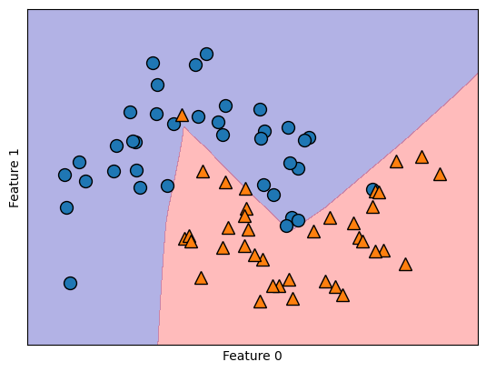
Evidentemente, la red neuronal ha adquirido un límite de decisión decisivamente no lineal pero relativamente gradual
mlp = MLPClassifier(solver='lbfgs', random_state=0, max_iter=400, hidden_layer_sizes=[10])
Se empleó el algoritmo
'lbfgs'(ver Broyden–Fletcher–Goldfarb–Shanno algorithm (L-BFGS), optimizador de la familia de los métodos cuasi-Newton.). En particular, el MLP emplea 100 nodos ocultos por defecto, un número considerable para este conjunto de datos compacto. Sin embargo, incluso con un número reducido de nodos, se puede lograr un resultado satisfactorio
Optimizador L-BFGS
L-BFGS es una variante del algoritmo BFGS, que es un método de optimización de segundo orden. A diferencia de los métodos de primer orden, que utilizan únicamente el gradiente de la función de pérdida, los métodos de segundo orden también utilizan la información de la segunda derivada (la matriz Hessiana) para mejorar la dirección de los pasos de actualización. L-BFGS ajusta internamente las tasas de aprendizaje basadas en la información de segundo orden.
mlp.fit(X_train, y_train)
MLPClassifier(hidden_layer_sizes=[10], max_iter=400, random_state=0,
solver='lbfgs')In a Jupyter environment, please rerun this cell to show the HTML representation or trust the notebook. On GitHub, the HTML representation is unable to render, please try loading this page with nbviewer.org.
Parameters
| hidden_layer_sizes | [10] | |
| activation | 'relu' | |
| solver | 'lbfgs' | |
| alpha | 0.0001 | |
| batch_size | 'auto' | |
| learning_rate | 'constant' | |
| learning_rate_init | 0.001 | |
| power_t | 0.5 | |
| max_iter | 400 | |
| shuffle | True | |
| random_state | 0 | |
| tol | 0.0001 | |
| verbose | False | |
| warm_start | False | |
| momentum | 0.9 | |
| nesterovs_momentum | True | |
| early_stopping | False | |
| validation_fraction | 0.1 | |
| beta_1 | 0.9 | |
| beta_2 | 0.999 | |
| epsilon | 1e-08 | |
| n_iter_no_change | 10 | |
| max_fun | 15000 |
mglearn.plots.plot_2d_separator(mlp, X_train, fill=True, alpha=.3)
mglearn.discrete_scatter(X_train[:, 0], X_train[:, 1], y_train)
plt.xlabel("Feature 0");
plt.ylabel("Feature 1");
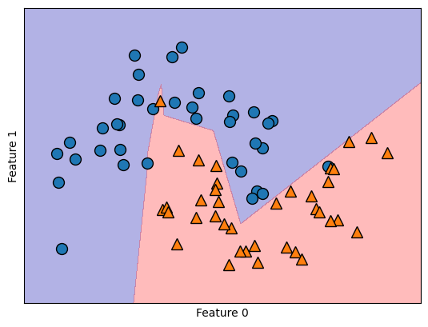
Al reducir las unidades ocultas a 10 hace que el límite de decisión tenga un aspecto algo irregular. La no linealidad por defecto empleada es la
"relu"
import numpy as np
line = np.linspace(-3, 3, 100)
plt.plot(line, np.tanh(line), label="tanh")
plt.plot(line, np.maximum(line, 0), label="relu")
plt.legend(loc="best")
plt.xlabel("x")
plt.ylabel("relu(x), tanh(x)");
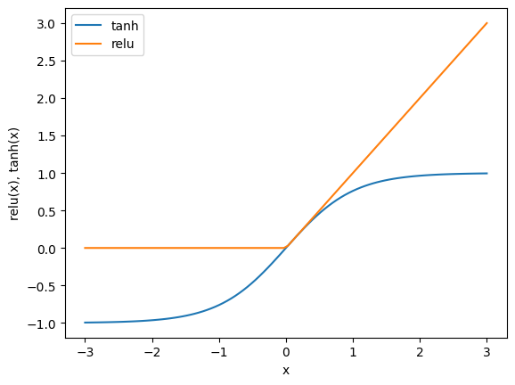
En el caso de una sola capa oculta, esto implica que la función de decisión comprende 10 segmentos de línea recta. Para conseguir un límite de decisión más gradual, las alternativas incluyen aumentar las unidades ocultas, introducir una segunda capa oculta o emplear la no linealidad
"tanh".
Utilizando dos capas ocultas, con 10 unidades cada una
mlp = MLPClassifier(solver='lbfgs', random_state=0, hidden_layer_sizes=[10, 10])
mlp.fit(X_train, y_train)
MLPClassifier(hidden_layer_sizes=[10, 10], random_state=0, solver='lbfgs')In a Jupyter environment, please rerun this cell to show the HTML representation or trust the notebook.
On GitHub, the HTML representation is unable to render, please try loading this page with nbviewer.org.
Parameters
| hidden_layer_sizes | [10, 10] | |
| activation | 'relu' | |
| solver | 'lbfgs' | |
| alpha | 0.0001 | |
| batch_size | 'auto' | |
| learning_rate | 'constant' | |
| learning_rate_init | 0.001 | |
| power_t | 0.5 | |
| max_iter | 200 | |
| shuffle | True | |
| random_state | 0 | |
| tol | 0.0001 | |
| verbose | False | |
| warm_start | False | |
| momentum | 0.9 | |
| nesterovs_momentum | True | |
| early_stopping | False | |
| validation_fraction | 0.1 | |
| beta_1 | 0.9 | |
| beta_2 | 0.999 | |
| epsilon | 1e-08 | |
| n_iter_no_change | 10 | |
| max_fun | 15000 |
mglearn.plots.plot_2d_separator(mlp, X_train, fill=True, alpha=.3)
mglearn.discrete_scatter(X_train[:, 0], X_train[:, 1], y_train)
plt.xlabel("Feature 0")
plt.ylabel("Feature 1");
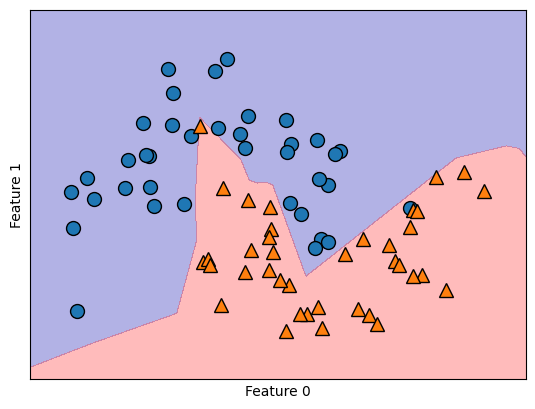
mlp = MLPClassifier(solver='lbfgs', activation='tanh', max_iter=400, random_state=0, hidden_layer_sizes=[10, 10])
mlp.fit(X_train, y_train)
MLPClassifier(activation='tanh', hidden_layer_sizes=[10, 10], max_iter=400,
random_state=0, solver='lbfgs')In a Jupyter environment, please rerun this cell to show the HTML representation or trust the notebook. On GitHub, the HTML representation is unable to render, please try loading this page with nbviewer.org.
Parameters
| hidden_layer_sizes | [10, 10] | |
| activation | 'tanh' | |
| solver | 'lbfgs' | |
| alpha | 0.0001 | |
| batch_size | 'auto' | |
| learning_rate | 'constant' | |
| learning_rate_init | 0.001 | |
| power_t | 0.5 | |
| max_iter | 400 | |
| shuffle | True | |
| random_state | 0 | |
| tol | 0.0001 | |
| verbose | False | |
| warm_start | False | |
| momentum | 0.9 | |
| nesterovs_momentum | True | |
| early_stopping | False | |
| validation_fraction | 0.1 | |
| beta_1 | 0.9 | |
| beta_2 | 0.999 | |
| epsilon | 1e-08 | |
| n_iter_no_change | 10 | |
| max_fun | 15000 |
mglearn.plots.plot_2d_separator(mlp, X_train, fill=True, alpha=.3)
mglearn.discrete_scatter(X_train[:, 0], X_train[:, 1], y_train)
plt.xlabel("Feature 0")
plt.ylabel("Feature 1");
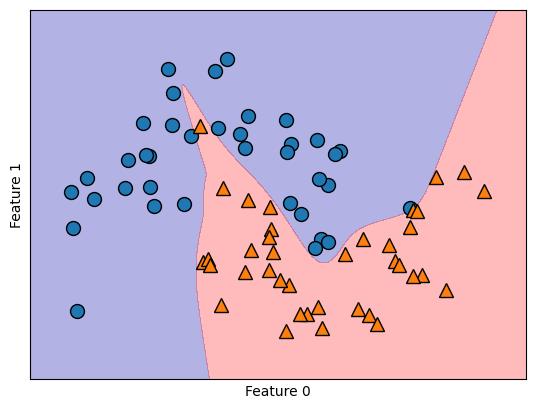
Además, podemos influir en la complejidad de una red neuronal incorporando una penalización \(L2\), similar al enfoque de la regresión de ridge y los clasificadores lineales. El parámetro responsable de esto en el
MLPClassifieres'alpha', análogo a los modelos de regresión lineal. Por defecto, asume un valor mínimo (regularización limitada). El siguiente experimento incluye dos capas ocultas, cada una de ellas compuesta por 10 o 100 unidades y diferentes valores dealpha
fig, axes = plt.subplots(2, 4, figsize=(20, 8))
for axx, n_hidden_nodes in zip(axes, [10, 100]):
for ax, alpha in zip(axx, [0.0001, 0.01, 0.1, 1]):
mlp = MLPClassifier(solver='lbfgs', random_state=0, max_iter=1000, hidden_layer_sizes=[n_hidden_nodes, n_hidden_nodes], alpha=alpha)
mlp.fit(X_train, y_train)
mglearn.plots.plot_2d_separator(mlp, X_train, fill=True, alpha=.3, ax=ax)
mglearn.discrete_scatter(X_train[:, 0], X_train[:, 1], y_train, ax=ax)
ax.set_title("n_hidden=[{}, {}]\nalpha={:.4f}".format(n_hidden_nodes, n_hidden_nodes, alpha))
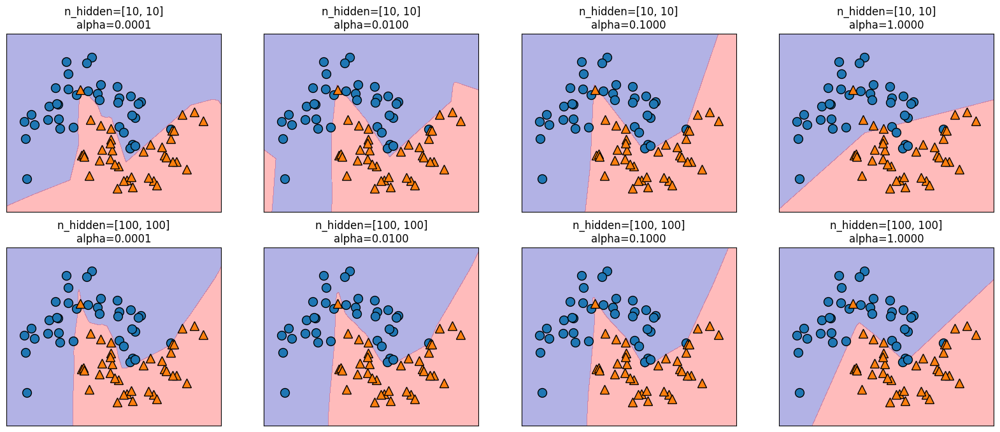
Observación
Como habrá podido comprobar, existen multitud de métodos para gestionar la complejidad de una red neuronal, como el número de capas ocultas, las unidades en cada capa oculta y la regularización (
alpha), entre otros. Un rasgo fundamental de las redes neuronales reside en suconfiguración aleatoria inicial de pesos antes de comenzar el aprendizaje.Esta aleatoriedad influye en el modelo aprendido resultante. Así, el empleo de parámetros idénticos puede dar lugar a modelos distintos debido a semillas aleatorias diferentes. Mientras que este efecto es más pronunciado para redes pequeñas, es menos significativo para redes de tamaño adecuado donde la complejidad se elige apropiadamente.
fig, axes = plt.subplots(2, 4, figsize=(20, 8))
for i, ax in enumerate(axes.ravel()):
mlp = MLPClassifier(solver='lbfgs', random_state=i, max_iter=2000, hidden_layer_sizes=[100, 100])
mlp.fit(X_train, y_train)
mglearn.plots.plot_2d_separator(mlp, X_train, fill=True, alpha=.3, ax=ax)
mglearn.discrete_scatter(X_train[:, 0], X_train[:, 1], y_train, ax=ax)
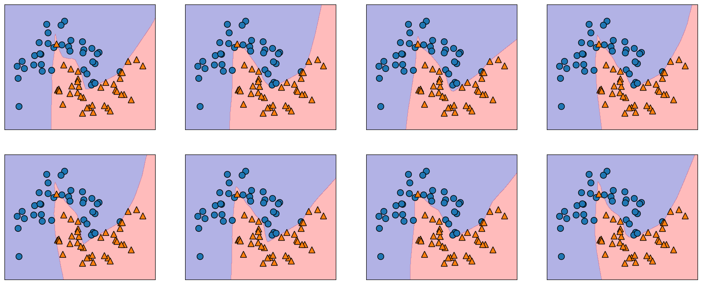
Para una comprensión más completa de las redes neuronales en escenarios prácticos, implementaremos el MLPClassifier en el conjunto de datos Breast Cancer. Nuestro paso inicial consiste en utilizar los parámetros por defecto. Queda como tarea para el estudiante, utilizar
GridSearchCVyPipeline.
Datos y partición. Se usa una partición estratificada para conservar en ambos conjuntos la proporción de clases, una de la técnicas de CV vistas en Machine Learning
import warnings
import numpy as np
import pandas as pd
import matplotlib.pyplot as plt
from sklearn.datasets import load_breast_cancer
from sklearn.model_selection import (
train_test_split, cross_validate, StratifiedKFold, GridSearchCV
)
from sklearn.neural_network import MLPClassifier
from sklearn.preprocessing import MinMaxScaler
from sklearn.pipeline import Pipeline
from sklearn.metrics import (
classification_report, ConfusionMatrixDisplay,
make_scorer, recall_score, roc_auc_score
)
from sklearn.inspection import permutation_importance
cancer = load_breast_cancer()
X_train, X_test, y_train, y_test = train_test_split(
cancer.data, cancer.target, stratify=cancer.target, random_state=0
)
print("Forma de X_train:", X_train.shape)
print("Forma de X_test:", X_test.shape)
print("Proporción de benignos en entrenamiento: {:.3f}".format(y_train.mean()))
print("Proporción de benignos en prueba: {:.3f}".format(y_test.mean()))
Forma de X_train: (426, 30)
Forma de X_test: (143, 30)
Proporción de benignos en entrenamiento: 0.627
Proporción de benignos en prueba: 0.629
Escalas de las características. Las variables se miden en magnitudes muy distintas. La razón entre el máximo y el mínimo de los máximos por característica cuantifica esa heterogeneidad.
resumen = pd.DataFrame(
{
"minimo": X_train.min(axis=0),
"maximo": X_train.max(axis=0),
"desv_est": X_train.std(axis=0),
},
index=cancer.feature_names,
)
print(resumen.round(4).to_string())
print()
print("Razón entre la mayor y la menor desviación estándar: {:.1f}".format(
resumen["desv_est"].max() / resumen["desv_est"].min()
))
minimo maximo desv_est
mean radius 7.6910 28.1100 3.6091
mean texture 9.7100 39.2800 4.3704
mean perimeter 47.9200 188.5000 24.9035
mean area 170.4000 2501.0000 363.2988
mean smoothness 0.0526 0.1425 0.0139
mean compactness 0.0194 0.3454 0.0528
mean concavity 0.0000 0.3754 0.0781
mean concave points 0.0000 0.1913 0.0394
mean symmetry 0.1060 0.3040 0.0270
mean fractal dimension 0.0500 0.0974 0.0070
radius error 0.1115 2.8730 0.2820
texture error 0.3602 3.8960 0.5407
perimeter error 0.7570 21.9800 2.0810
area error 6.8020 542.2000 47.4769
smoothness error 0.0027 0.0311 0.0031
compactness error 0.0023 0.1354 0.0171
concavity error 0.0000 0.3038 0.0263
concave points error 0.0000 0.0409 0.0061
symmetry error 0.0095 0.0790 0.0083
fractal dimension error 0.0009 0.0219 0.0023
worst radius 8.6780 36.0400 4.8774
worst texture 12.0200 49.5400 6.1838
worst perimeter 54.4900 251.2000 33.9174
worst area 223.6000 4254.0000 576.6522
worst smoothness 0.0812 0.2226 0.0228
worst compactness 0.0343 0.9379 0.1553
worst concavity 0.0000 1.2520 0.2046
worst concave points 0.0000 0.2903 0.0669
worst symmetry 0.1566 0.6638 0.0598
worst fractal dimension 0.0552 0.1730 0.0177
Razón entre la mayor y la menor desviación estándar: 250371.3
Modelo base sin escalado. Se entrena
MLPClassifiercon parámetros por defecto, sin transformar los datos. Es probable que aparezca una advertencia de convergencia.
mlp = MLPClassifier(random_state=42)
mlp.fit(X_train, y_train)
print("Exactitud en entrenamiento: {:.3f}".format(mlp.score(X_train, y_train)))
print("Exactitud en prueba: {:.3f}".format(mlp.score(X_test, y_test)))
print("Iteraciones realizadas:", mlp.n_iter_)
Exactitud en entrenamiento: 0.939
Exactitud en prueba: 0.923
Iteraciones realizadas: 142
Interpretación del modelo base
La exactitud es aceptable, pero inferior a la de otros clasificadores sobre este mismo conjunto de datos. La causa más probable es la diferencia de escala entre características: algunas toman valores del orden de \(10^3\) y otras del orden de \(10^{-2}\). Como el entrenamiento se basa en gradientes, las características con magnitudes grandes dominan la actualización de los pesos, lo que vuelve la optimización lenta e inestable y condiciona mal el problema. Por ello las redes neuronales son sensibles a la escala de las entradas.
Escalado con
MinMaxScaler. Cada característica \(x_j\) se transforma al intervalo \([0, 1]\) mediante
El mínimo y el máximo se calculan únicamente con el conjunto de entrenamiento, para evitar fuga de información (data leakage) desde el conjunto de prueba.
scaler = MinMaxScaler()
scaler.fit(X_train)
X_train_scaled = scaler.transform(X_train)
X_test_scaled = scaler.transform(X_test)
print("Entrenamiento escalado: mínimo = {:.4f}, máximo = {:.4f}".format(
X_train_scaled.min(), X_train_scaled.max()
))
print("Prueba escalado: mínimo = {:.4f}, máximo = {:.4f}".format(
X_test_scaled.min(), X_test_scaled.max()
))
fuera = ((X_test_scaled < 0) | (X_test_scaled > 1)).mean()
print("Proporción de valores de prueba fuera de [0, 1]: {:.4f}".format(fuera))
Entrenamiento escalado: mínimo = 0.0000, máximo = 1.0000
Prueba escalado: mínimo = -0.0713, máximo = 1.3760
Proporción de valores de prueba fuera de [0, 1]: 0.0063
Observación sobre el escalador
En entrenamiento, todas las características quedan exactamente en \([0, 1]\). En prueba pueden aparecer valores ligeramente fuera de ese intervalo, porque se usan el mínimo y el máximo del entrenamiento. Esto es correcto y esperado. A diferencia de StandardScaler, que centra cada característica en media 0 y varianza 1, MinMaxScaler no centra los datos y es sensible a valores atípicos, ya que un único valor extremo comprime el resto del rango.
Modelo con datos escalados. Se repite el entrenamiento con las entradas en \([0, 1]\).
mlp = MLPClassifier(random_state=0, max_iter=1000)
mlp.fit(X_train_scaled, y_train)
print("Exactitud en entrenamiento: {:.3f}".format(mlp.score(X_train_scaled, y_train)))
print("Exactitud en prueba: {:.3f}".format(mlp.score(X_test_scaled, y_test)))
print("Iteraciones realizadas:", mlp.n_iter_)
Exactitud en entrenamiento: 0.991
Exactitud en prueba: 0.958
Iteraciones realizadas: 500
Regularización y selección de
alpha. El parámetroalphacontrola la penalización \(L_2\) sobre los pesos, de modo que el problema de optimización es
Valores mayores de alpha imponen una regularización más fuerte. Para no elegir alpha observando el conjunto de prueba, se usa validación cruzada estratificada de 5 particiones solo sobre el entrenamiento. El escalador se incluye en un Pipeline, de modo que en cada partición se ajusta únicamente con los datos de entrenamiento de esa partición. Se registran tres métricas: exactitud, área bajo la curva ROC y sensibilidad de la clase maligna.
import warnings
import numpy as np
import pandas as pd
import matplotlib.pyplot as plt
from sklearn.model_selection import StratifiedKFold, cross_validate
from sklearn.neural_network import MLPClassifier
from sklearn.preprocessing import MinMaxScaler
from sklearn.pipeline import Pipeline
from sklearn.metrics import make_scorer, recall_score
warnings.filterwarnings("ignore", category=UserWarning)
alphas = [1e-4, 1e-3, 1e-2, 1e-1, 1, 10]
cv = StratifiedKFold(n_splits=5, shuffle=True, random_state=0)
scoring = {
"auc": "roc_auc",
"exactitud": "accuracy",
"sens_maligno": make_scorer(recall_score, pos_label=0),
}
filas = []
for a in alphas:
pipe = Pipeline([
("scaler", MinMaxScaler()),
("mlp", MLPClassifier(alpha=a, max_iter=2000, random_state=0)),
])
r = cross_validate(pipe, X_train, y_train, cv=cv, scoring=scoring,
return_train_score=True)
filas.append({
"alpha": a,
"auc_entrenamiento": r["train_auc"].mean(),
"auc_validacion": r["test_auc"].mean(),
"auc_desv_est": r["test_auc"].std(),
"exac_validacion": r["test_exactitud"].mean(),
"sens_maligno_validacion": r["test_sens_maligno"].mean(),
})
resultados = pd.DataFrame(filas)
print(resultados.round(4).to_string(index=False))
mejor = resultados.loc[resultados["auc_validacion"].idxmax(), "alpha"]
print("alpha con mayor AUC de validación:", mejor)
plt.figure(figsize=(7, 4))
plt.semilogx(resultados["alpha"], resultados["auc_entrenamiento"],
marker="o", label="Entrenamiento")
plt.errorbar(resultados["alpha"], resultados["auc_validacion"],
yerr=resultados["auc_desv_est"], marker="s", capsize=3,
label="Validación cruzada")
plt.xscale("log")
plt.xlabel("alpha")
plt.ylabel("AUC")
plt.legend()
plt.grid(True, alpha=0.3)
plt.show()
alpha auc_entrenamiento auc_validacion auc_desv_est exac_validacion sens_maligno_validacion
0.0001 0.9986 0.9903 0.0121 0.9765 0.9625
0.0010 0.9987 0.9903 0.0118 0.9718 0.9500
0.0100 0.9986 0.9904 0.0118 0.9765 0.9562
0.1000 0.9979 0.9933 0.0079 0.9788 0.9625
1.0000 0.9964 0.9953 0.0077 0.9788 0.9562
10.0000 0.9921 0.9920 0.0072 0.9389 0.8429
alpha con mayor AUC de validación: 1.0
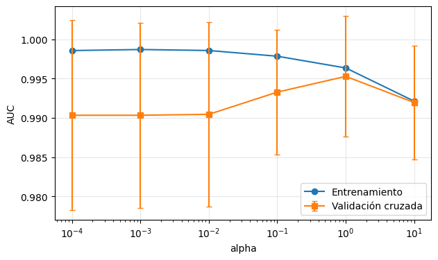
Criterio de selección. Se elige el valor de
alphaque maximiza el área bajo la curva ROC en validación cruzada, ya que esta métrica no depende de un umbral de decisión y es menos sensible al desbalance de clases que la exactitud. Con el modelo seleccionado se realiza una única evaluación en el conjunto de prueba y se estima un intervalo de confianza del 95 % para la exactitud mediante bootstrap sobre las predicciones.
best_alpha = resultados.loc[resultados["auc_validacion"].idxmax(), "alpha"]
print("alpha seleccionado:", best_alpha)
final_model = Pipeline([
("scaler", MinMaxScaler()),
("mlp", MLPClassifier(alpha=best_alpha, max_iter=2000, random_state=0)),
])
final_model.fit(X_train, y_train)
y_pred = final_model.predict(X_test)
y_prob = final_model.predict_proba(X_test)[:, 1]
print("Exactitud en entrenamiento: {:.3f}".format(final_model.score(X_train, y_train)))
print("Exactitud en prueba: {:.3f}".format(final_model.score(X_test, y_test)))
print("AUC en prueba: {:.3f}".format(roc_auc_score(y_test, y_prob)))
rng = np.random.default_rng(0)
aciertos = (y_pred == y_test)
idx = rng.integers(0, len(y_test), size=(2000, len(y_test)))
acc_boot = aciertos[idx].mean(axis=1)
lo, hi = np.percentile(acc_boot, [2.5, 97.5])
print("IC bootstrap del 95 % para la exactitud: [{:.3f}, {:.3f}]".format(lo, hi))
print()
print(classification_report(y_test, y_pred, target_names=cancer.target_names))
ConfusionMatrixDisplay.from_estimator(
final_model, X_test, y_test, display_labels=cancer.target_names, cmap="Blues"
)
plt.show()
alpha seleccionado: 1.0
Exactitud en entrenamiento: 0.960
Exactitud en prueba: 0.944
AUC en prueba: 0.983
IC bootstrap del 95 % para la exactitud: [0.902, 0.979]
precision recall f1-score support
malignant 0.98 0.87 0.92 53
benign 0.93 0.99 0.96 90
accuracy 0.94 143
macro avg 0.95 0.93 0.94 143
weighted avg 0.95 0.94 0.94 143
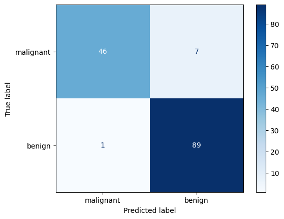
Métricas en un contexto clínico
La exactitud global no distingue entre los dos tipos de error. En diagnóstico oncológico, clasificar un tumor maligno como benigno (falso negativo) suele ser más costoso que el error contrario. Por ello se debe examinar la sensibilidad de la clase malignant en el reporte de clasificación. Además, con un conjunto de prueba de unas 143 observaciones, el intervalo de confianza es amplio, por lo que diferencias de uno o dos puntos porcentuales entre modelos no son estadísticamente concluyentes.
Análisis de los pesos aprendidos. Una técnica elemental para estudiar lo que aprendió la red consiste en visualizar la matriz de pesos entre la capa de entrada y la primera capa oculta. Como
MinMaxScalerlleva todas las características a un rango común, las magnitudes de los pesos son comparables entre características, lo cual no ocurre con datos sin escalar.
mlp_final = final_model.named_steps["mlp"]
plt.figure(figsize=(12, 8))
plt.imshow(mlp_final.coefs_[0], interpolation="none", cmap="viridis", aspect="auto")
plt.yticks(range(len(cancer.feature_names)), cancer.feature_names, fontsize=8)
plt.xlabel("Unidades de la capa oculta")
plt.ylabel("Característica de entrada")
plt.colorbar(label="Valor del peso")
plt.show()
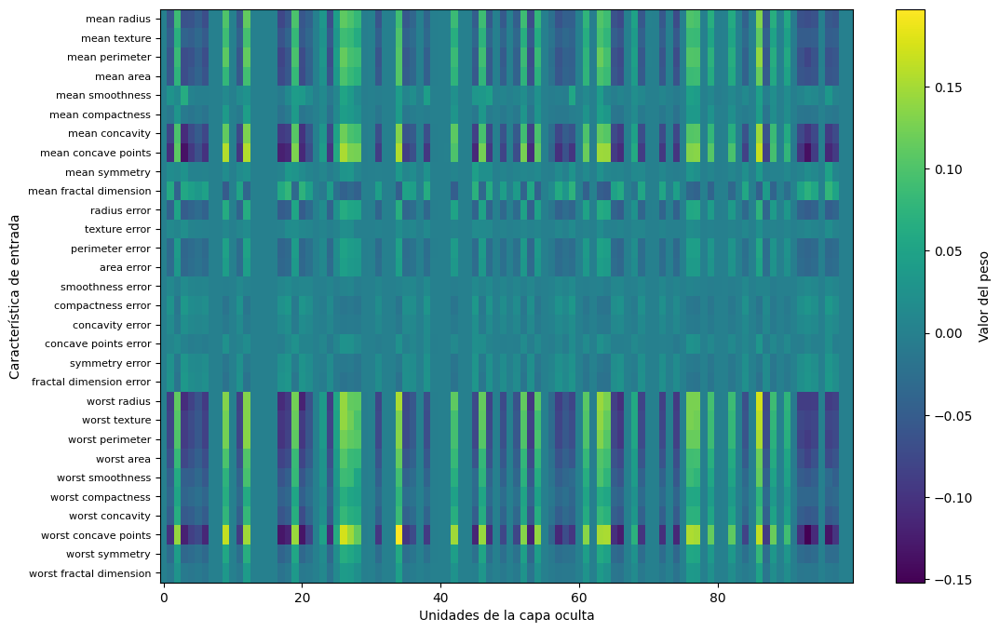
Una posible inferencia es que las características con pesos cercanos a cero en todas las unidades ocultas son menos importantes para el modelo. Se trata de una hipótesis exploratoria: los pesos de una sola capa no equivalen a importancia de las características, porque las capas posteriores recombinan la información y porque las características están fuertemente correlacionadas en este conjunto de datos. Para una conclusión más sólida se calcula la importancia por permutación, que mide la caída del AUC en prueba cuando se permutan aleatoriamente los valores de cada característica.
Importancia por permutación. Mide cuánto empeora un modelo ya entrenado \(f\) cuando se baraja aleatoriamente una columna entre las filas del conjunto de prueba. La columna no se elimina: conserva sus valores, pero se rompe su relación con \(y\), y las demás columnas quedan intactas. No se reentrena nada y el modelo recibe siempre todas las características. Con \(s_0 = s(f, X, y)\) como AUC de referencia y \(s_{j,r}\) el AUC tras barajar la columna \(j\) en la repetición \(r = 1, \dots, K\):
\[ I_j = s_0 - \frac{1}{K}\sum_{r=1}^{K} s_{j,r}. \]Si \(I_j\) es grande, el modelo depende de la característica \(j\). Si \(I_j \approx 0\), la ignora. Valores negativos se deben al azar y sugieren que no aporta.
perm = permutation_importance(
final_model, X_test, y_test, n_repeats=30, random_state=0, scoring="roc_auc"
)
imp = pd.DataFrame({
"caracteristica": cancer.feature_names,
"media": perm.importances_mean,
"desv_est": perm.importances_std,
}).sort_values("media", ascending=False)
print(imp.head(10).round(4).to_string(index=False))
top = imp.head(10).iloc[::-1]
plt.figure(figsize=(8, 4.5))
plt.barh(top["caracteristica"], top["media"], xerr=top["desv_est"], capsize=3)
plt.xlabel("Caída media del AUC al permutar la característica")
plt.tight_layout()
plt.show()
caracteristica media desv_est
worst texture 0.0055 0.0033
worst concave points 0.0038 0.0049
worst radius 0.0033 0.0026
mean fractal dimension 0.0031 0.0017
mean texture 0.0030 0.0019
worst perimeter 0.0020 0.0023
fractal dimension error 0.0018 0.0009
compactness error 0.0018 0.0007
mean concave points 0.0018 0.0033
mean radius 0.0016 0.0017
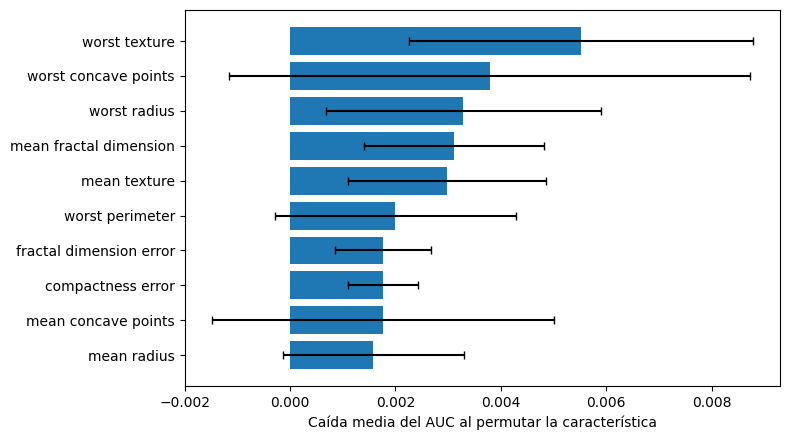
Alcance de
scikit-learn.MLPClassifieryMLPRegressorofrecen interfaces sencillas para las arquitecturas de redes neuronales más comunes, pero cubren solo un subconjunto reducido de lo posible. No permiten arquitecturas convolucionales, recurrentes ni de atención, ni entrenamiento en unidades de procesamiento gráfico (GPU). Para modelos más flexibles o de mayor tamaño se recomienda recurrir a PyTorch, TensorFlow con Keras o JAX.
2.11. Análisis de Malware por API calls#
¿Por qué es importante este caso de estudio?
El análisis de comportamiento de malware mediante secuencias de llamadas a la API (API calls) es una de las aplicaciones más relevantes del aprendizaje profundo en ciberseguridad. A diferencia del análisis estático (inspeccionar el código sin ejecutarlo), este enfoque es dinámico: observa cómo se comporta un programa mientras se ejecuta en un entorno controlado (sandbox), registrando el orden en que invoca funciones del sistema operativo.
En esta sección aprenderemos a:
Interpretar un conjunto de datos de secuencias de llamadas a la API y entender qué información captura (y cuál pierde) su representación tabular.
Construir un flujo de trabajo de preprocesamiento y modelado libre de fuga de información (data leakage).
Ajustar hiperparámetros de una red neuronal
MLPClassifiermediante validación cruzada, evitando el sobreajuste (overfitting).Evaluar el modelo con métricas apropiadas para datos desbalanceados.
El siguiente conjunto de datos forma parte de una investigación sobre la detección y clasificación de Malware mediante Deep Learning (ver Oliveira, Angelo; Sassi, Renato José (2019)). Contiene 42.797 secuencias de llamadas a la API de malware y 1.079 secuencias de llamadas a la API de goodware. Cada secuencia se compone de las 100 primeras llamadas a la API consecutivas no repetidas asociadas al proceso principal, extraídas del elemento “calls” de los informes de Cuckoo Sandbox.
Características
Columna |
Descripción |
Tipo |
|---|---|---|
|
Hash MD5 del ejemplo (identificador único de la muestra) |
Cadena de 32 bytes |
|
Código numérico de la llamada a la API observada en la posición \(i\) de la secuencia |
Entero (0-306) |
|
Etiqueta de clase |
Entero: 0 (Goodware) o 1 (Malware) |
Nota sobre la naturaleza de los datos
Cada fila no es un vector de características independientes entre sí: es una secuencia ordenada de 100 pasos temporales. La columna t_0 corresponde a la primera llamada a la API observada, t_1 a la segunda, y así sucesivamente. Esto significa que, en principio, el orden importa: dos muestras podrían compartir exactamente las mismas 100 llamadas pero en distinto orden, y representar comportamientos completamente diferentes. Más adelante retomaremos esta observación al decidir cómo las representamos para el modelo.

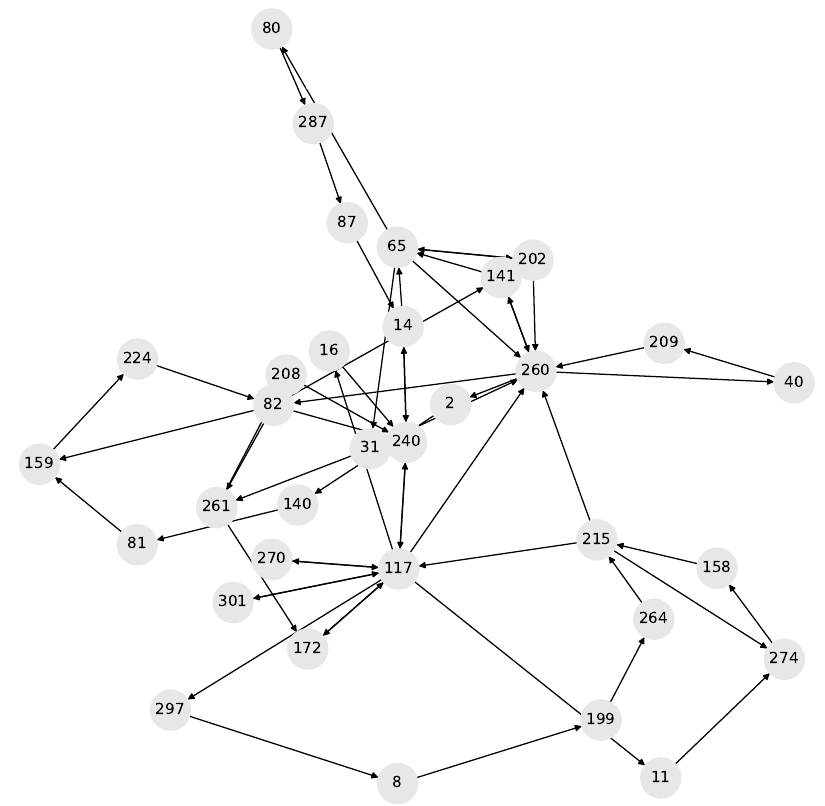
Fig. 2.19 Gráfico de comportamiento del malware troyano con hash MD5 ac65ce897a1f0dc273e8dc54fe3768ec.#
import warnings
warnings.filterwarnings('ignore')
import numpy as np
import pylab as pl
import pandas as pd
import matplotlib.pyplot as plt
import seaborn as sns
import random
from sklearn.utils import shuffle
from sklearn.svm import SVC
from sklearn.metrics import confusion_matrix,classification_report
from sklearn.model_selection import cross_val_score, GridSearchCV
from sklearn.pipeline import make_pipeline
from sklearn.preprocessing import StandardScaler
from sklearn.neural_network import MLPClassifier
from sklearn.model_selection import train_test_split
import pickle
import glob
from sklearn.metrics import f1_score
from sklearn.metrics import classification_report
from sklearn.metrics import roc_curve
from sklearn.metrics import precision_recall_curve
from time import process_time
data = pd.read_csv("https://raw.githubusercontent.com/lihkir/Data/main/api_call_sequence_per_malware.csv")
data.shape
(43876, 102)
La siguiente es una construida en el presente curso, la cual puede ser útil para quienes solo desean presentar unas cuantas columnas al inicio y al final de cada
pandas. Solo requiere del nombre delpandasy el número de columnas que deseamos visualziar al inicio y al final. Es bastante util, para utilizar en losJupyter Books, donde el espacio horizontal es reducido.
def idx_lr(data, n_new_cols):
n_data_cols = len(data.columns)
idx_l = sorted(list(range(n_new_cols - 1, -1, -1)))
idx_r = sorted(list(range(n_data_cols - 1, n_data_cols - n_new_cols - 1, -1)))
return idx_l + idx_r
Para imprimir por ejemplo las tres primeras columnas al inicio y al final del pandas data utilizamos la orden
data.iloc[:, idx_lr(data, 4)]. Nótese que no contamos con datos faltantes que requieran de un procedimiento de imputación (ver Análisis con datos faltantes). Además, nótese que todas las columnas con la excepción dehashcorresponde a datos numericos discretos.
data.iloc[:, idx_lr(data, 4)].head()
| hash | t_0 | t_1 | t_2 | t_97 | t_98 | t_99 | malware | |
|---|---|---|---|---|---|---|---|---|
| 0 | 071e8c3f8922e186e57548cd4c703a5d | 112 | 274 | 158 | 208 | 56 | 71 | 1 |
| 1 | 33f8e6d08a6aae939f25a8e0d63dd523 | 82 | 208 | 187 | 171 | 215 | 35 | 1 |
| 2 | b68abd064e975e1c6d5f25e748663076 | 16 | 110 | 240 | 65 | 113 | 112 | 1 |
| 3 | 72049be7bd30ea61297ea624ae198067 | 82 | 208 | 187 | 302 | 228 | 302 | 1 |
| 4 | c9b3700a77facf29172f32df6bc77f48 | 82 | 240 | 117 | 260 | 141 | 260 | 1 |
print("# NaN values:", data.isna().sum().sum())
# NaN values: 0
data.dtypes
hash object
t_0 int64
t_1 int64
t_2 int64
t_3 int64
...
t_96 int64
t_97 int64
t_98 int64
t_99 int64
malware int64
Length: 102, dtype: object
Pasamos ahora a eliminar aquellas variables (columnas) irrelevantes en el análisis predictivo, a saber la columna
hashdel pandasdatay creamos uno nuevo al cual nombraremosdata_new.
data_new = data.drop(columns=['hash'], axis=1)
data_new.shape
(43876, 101)
Verifiquemos si nuestros datos están desbalanceados respecto a las clases de interés 0 (Goodware) o 1 (Malware)
import matplotlib
matplotlib.rc_file_defaults()
cnt_pro = data_new['malware'].value_counts()
sns.barplot(x=cnt_pro.index, y=cnt_pro.values, alpha=0.8)
plt.ylabel('Number of data', fontsize=10)
plt.xlabel('Malware Type', fontsize=10);
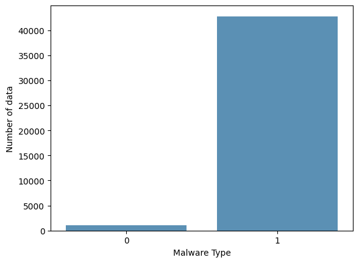
Claramente, existe un desbalance entre los tipos de Malware. Por otro lado, verifiquemos para algunos Hash, como se distribuyen la frecuencia de cada una de sus API calls. Las columnas representan las frecuencias de cada API call representado por los valores
t_0, t_1,..., t99.
fig, axs = plt.subplots(nrows=2, ncols=2, figsize=(15, 12))
plt.subplots_adjust(hspace=0.2)
fig.suptitle("Malware API Calls by Hash", fontsize=14, y=0.92)
for i, ax in zip(range(1, 5), axs.ravel()):
plt.subplot(2, 2, i)
n_hash = random.randint(0, len(data_new))
data_new.iloc[n_hash,:-1].value_counts().plot(kind='bar', xlabel='Hash: '+ data['hash'][n_hash], ylabel='API Call');
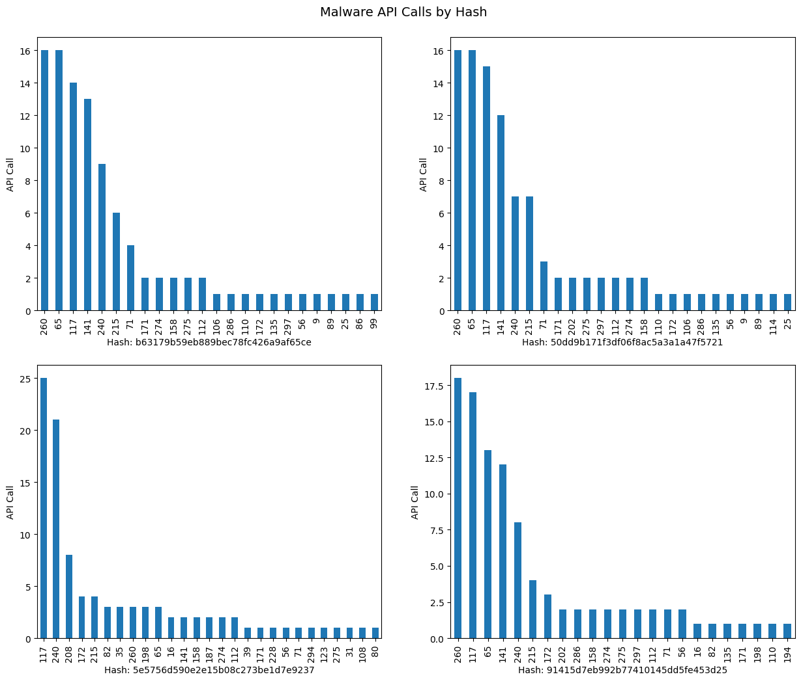
Procedemos a hacer uso de
make_pipelineyGridSearchCVpara obtener parámetros del mejor modelo. En este caso utilizaremos el clasificadorMLPClassifier, el cual se estudió en clase de forma analítica.
El algoritmo clasificador
MLPClassifierdenota el valor de la longitud de paso \(\mu_{i}\) comolearning_rate, el cual asume los valores constant, invscaling, adaptive. En este ejemplo se ha probado con los tres parámetros, obteniendo siempre el mejor score cuandolearning_rate = constant. Por otro lado,hidden_layer_sizesrepresenta el número de neuronas en el \(i\)th layer. En este problema de clasificación optamos por seleccionar desde una a tres capas escondidas (hidden layers), pero siempre el mejor score entregado porGridSearchCV, fue obtenido considerando una sola capa. Por lo tanto, en este problema hacemos solo un grid search sobre el número de neuronas sobre una sola capa.Dado que nuestro problema es de clasificación binaria, también consideramos en el
param_grid, soloactivation = logistic. Las opciones del clasificador sonidentity, logistic, tanh, relu, peroGridSearchCVentregó el mejor score usandologisticcomo era de esperarse. El parámetroalphaes la fuerza del término de regularización \(L^2\), similar al utilizado en la regresiónridgecuando deseamos reducir la complejidad de un modelo. Puede revisar la documentación del clasificador para ver todos los parámetros asociados, y aquellos que son por defecto (ver MLPClassifier).

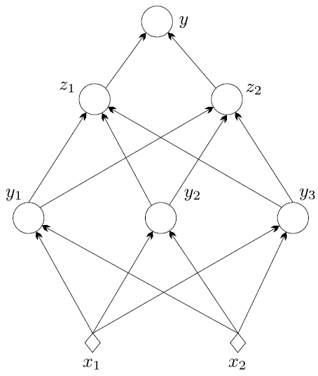
Fig. 2.20 Red neuronal feed-forward de tres capas.#
La capa de entrada
En general las ANNs tienen exactamente una capa de entrada. Con respecto al número de neuronas que componen esta capa, este parámetro se determina de forma completa y única, una vez que se conoce la forma de los datos de entrenamiento. En concreto, el número de neuronas que componen esa capa es igual al número de características (columnas) de sus datos. Algunas configuraciones de ANNs añaden un nodo adicional para un término de sesgo.
La capa de salida
Al igual que la capa de entrada, cada ANN tiene exactamente una capa de salida. Determinar su tamaño (número de neuronas) es sencillo; está completamente determinado por la configuración del modelo elegido. Si la ANN es un regresor, la capa de salida tiene un solo nodo (Time Series Forecasting). Si la ANN es un clasificador, entonces también tiene un solo nodo, a menos que se utilice
softmax, en cuyo caso la capa de salida tiene un nodo por cada etiqueta de clase en su modelo.
Las capas ocultas
¿Cuántas capas ocultas?. Si los datos son linealmente separables (lo que a menudo se sabe cuando se empieza a codificar una ANN, SVM puede servir de test), entonces no se necesita ninguna capa oculta. Por supuesto, tampoco se necesita una ANN para resolver los datos, pero está seguirá haciendo su trabajo.
Sobre la configuración de las capas ocultas en las ANNs, existe un consenso dentro de este tema, y es la diferencia de rendimiento al añadir capas ocultas adicionales: las situaciones en las que el rendimiento mejora con una segunda (o tercera, etc.) capa oculta son muy pocas. Una capa oculta es suficiente para la gran mayoría de los problemas.
Entonces, ¿qué pasa con el tamaño de la(s) capa(s) oculta(s), cuántas neuronas?. Existen algunas reglas empíricas; de ellas, la más utilizada es ‘The optimal size of the hidden layer is usually between the size of the input and size of the output layers’. Jeff Heaton, the author of Introduction to Neural Networks in Java.
Hay una regla empírica adicional que ayuda en los problemas de aprendizaje supervisado. Normalmente se puede evitar el sobreajuste si se mantiene el número de neuronas por debajo de:
\[ N_{h}=\frac{N_{s}}{(\alpha\cdot(N_{i}+N_{o}))} \]\(N_{i}=\) número de neuronas de entrada
\(N_{o}=\) número de neuronas de salida
\(N_{s}=\) número de muestras en el conjunto de datos de entrenamiento
\(\alpha=\) un factor de escala arbitrario, normalmente 2-10
Un valor de \(\alpha=2\) suele funcionar sin sobreajustar. Se puede pensar en \(\alpha\) como el factor de ramificación efectivo o el número de pesos distintos de cero para cada neurona. Las capas de salida harán que el factor de ramificación “efectivo” sea muy inferior al factor de ramificación medio real de la red. Para profundizar mas en el diseño de redes neuronales, ver el siguiente texto de Martin Hagan.
En resumen, para la mayoría de los problemas, probablemente se podría obtener un rendimiento decente (incluso sin un segundo paso de optimización) estableciendo la configuración de la capa oculta utilizando sólo dos reglas:
el número de capas ocultas es igual a uno
el número de neuronas de esa capa es la media de las neuronas de las capas de entrada y salida. ¡Nótese que en el ejemplo de esta sección el número de columnas para \(X\) es 100!.
Pasamos ahora a implementar un modelo de clasificación para el conjunto de datos relacionados con: Análisis de Malware por API calls. Utilizaremos la clase
MLPClassifiery como preprocesamiento, estandarizaremos nuestros datos usando la claseStandardScaler. Para encontrar los mejores parámetros y evita problemas de data leakage, utilizaremosPipelineyGridSearchCVtal como se explicó en secciones anteriores.
pipe = make_pipeline(StandardScaler(), MLPClassifier(max_iter=10000, random_state=42))
param_grid = {'mlpclassifier__alpha': [0.1, 0.01, 0.001],
'mlpclassifier__hidden_layer_sizes': [(10,), (100,), (1000,)],
'mlpclassifier__activation': ['logistic'],
'mlpclassifier__learning_rate': ['constant']}
Construimos nuestra matriz de caracteristicas, o variable explicativa X y el vector de clases o la variable respuesta y
y = data_new['malware']
X = data_new.drop(['malware'], axis=1)
Realizamos la división de nuestros datos a priori, con el objetivo de evitar data leakage. Consideramos el mismo
random_stateutilizado en el clasificador, con el objetivo de que los resutlados sean reproducibles.
X_train, X_test, y_train, y_test = train_test_split(X, y, random_state=42)
El siguiente ciclo if ha sido implementado en este curso para evitar reentrenar nuestro modelo clasificador. Nótese que si el algoritmo no detecta que existe un archivo de extensión
.pkl, reentrena el modelo, de lo contrario, utiliza el modelo entrenado a priori, el cual ha sido guardado en el archivo.pkl. Los archivoPicklede extensión.pklen simples palabras se encargan de serializar un objeto, esto es transformar el mismo en una cadena de bytes única que puede ser guardada en un archivo (de extensión .pkl), archivo que podemos desempaquetar después y trabajar con su contenido. Para poder utlizarlo necesitamos importarlo con la ordenimport pickle, e instalar la librería (Pickel viene por defecto desde Python 3.9) si así se requiere utilizando:
pip install pickle
from joblib import dump, load
import time
grid = None
if len(glob.glob("grid_mlp.joblib")) != 0:
grid = load('grid_mlp.joblib')
if len(glob.glob("cpu_time.txt")) != 0:
with open('cpu_time.txt', 'r', encoding='utf-8') as f:
saved_time = f.read()
print(saved_time)
else:
print("Archivo cpu_time.txt no encontrado")
else:
start = time.time()
grid = GridSearchCV(pipe, param_grid, cv=5, n_jobs=-1, scoring='roc_auc')
grid.fit(X_train, y_train)
end = time.time()
elapsed_minutes = (end - start) / 60
str_cpu_time = f"GridSearchCV time: {elapsed_minutes:.2f} minutes"
print(str_cpu_time)
with open('cpu_time.txt', 'w', encoding='utf-8') as f:
f.write(str_cpu_time)
dump(grid, 'grid_mlp.joblib')
print("Best CV score = %0.3f" % grid.best_score_)
print("Best parameters:\n{}".format(grid.best_params_))
GridSearchCV time: 2.92 minutes
Best CV score = 0.958
Best parameters:
{'mlpclassifier__activation': 'logistic', 'mlpclassifier__alpha': 0.01, 'mlpclassifier__hidden_layer_sizes': (100,), 'mlpclassifier__learning_rate': 'constant'}
Utilizamos el
f1_score, el cual, de acuerdo a lo estudiado en secciones previas, calcula la media armonica entreprecisionyrecall
print(f"F1 Score of the classifier is: {f1_score(y_test, grid.predict(X_test))}")
F1 Score of the classifier is: 0.9937633808061063
Además podemos usar
classification_reporty la matriz de confusión, para identificar aquellas clases que fueron incorrectamente clasificadas por nuestro modelo
print(classification_report(y_test, grid.predict(X_test)))
precision recall f1-score support
0 0.94 0.56 0.70 283
1 0.99 1.00 0.99 10686
accuracy 0.99 10969
macro avg 0.96 0.78 0.85 10969
weighted avg 0.99 0.99 0.99 10969
mlp_cm = confusion_matrix(y_test, grid.predict(X_test))
f, ax = plt.subplots(figsize=(5,5))
sns.heatmap(mlp_cm, annot=True, linewidth=0.7, linecolor='black', fmt='g', ax=ax, cmap="BuPu")
plt.title('MLP Confusion Matrix')
plt.xlabel('Y predict')
plt.ylabel('Y test')
plt.show()
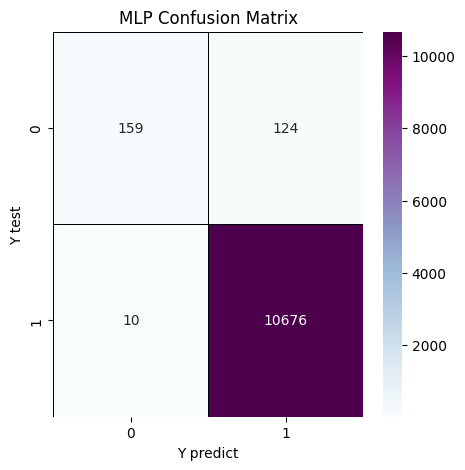
Nótese que la
clase 0, presenta el mayor número de clasificaciones erroneas(FP), obtenidas por nuestra ANN. Justamente esto se debe al desbalance notorio en nuestros datos, el cual se inclina hacia la clases 1, de mayor frecuencia. Si se tiene clara una métrica de negocio o un punto de operación, podríamos ajustar el número de prediccion incorrectas a favor de este punto de operación, tal como en el problema de detección de cancer, donde el interés era reducir (FN). Para analizar el comportamiento del clasificador a diferentes umbrales, utilizamos la curva ROC y precision-recall
fpr_mlp, tpr_mlp, thresholds_mlp = roc_curve(y_test, grid.predict_proba(X_test)[:, 1])
plt.plot(fpr_mlp, tpr_mlp, label="ROC Curve MLP")
plt.xlabel("FPR")
plt.ylabel("TPR (recall)")
close_default_mlp = np.argmin(np.abs(thresholds_mlp - 0.5))
plt.plot(fpr_mlp[close_default_mlp], tpr_mlp[close_default_mlp], '^',
markersize=10, label="threshold 0.5 MLP", fillstyle="none", c='k', mew=2)
plt.legend(loc=4);
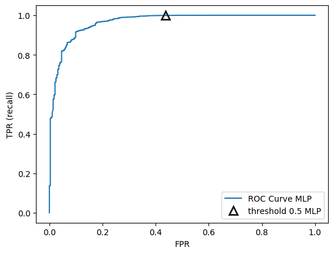
Nótese que la tasa TPR se mantiene aproximadamente contante para valores de FPR>0.2, esto es, para esta tasas de FPR no se está sacrificando la tasa recall. Si deseamos mantener un recall alto, aproximadamente, mayor que 0.8, podemos considerar por ejemplo una tasa FPR en torno a 0.1, con la que no estaríamos sacrificando recall y además, obtendriamos un tasa de falsos positivos FPR relativamente baja.
precision_mlp, recall_mlp, thresholds_mlp = precision_recall_curve(y_test, grid.predict_proba(X_test)[:, 1])
plt.plot(precision_mlp, recall_mlp, label="MLP")
close_default_mlp = np.argmin(np.abs(thresholds_mlp - 0.5))
plt.plot(precision_mlp[close_default_mlp], recall_mlp[close_default_mlp], '^', c='k',
markersize=10, label="threshold 0.5 MLP", fillstyle="none", mew=2)
plt.xlabel("Precision")
plt.ylabel("Recall")
plt.legend(loc="best");
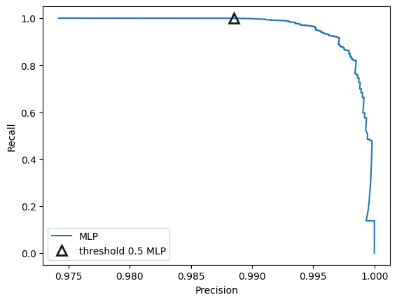
Nótese que con el umbral por defecto, la curva precision-recall muestra una clasificación con scores bastante buenos para cada una de estas métricas, incluso, si movemos el umbral un poco, para favorecer la clase 0 que es la menos frecuente, vamos a obtener de igual manera un rango de valores altos para precision y recall. Sólo valores de precision muy elevados, esto es, valores cuya distancia 1 tiende a cero, estaríamos sacrificando recall.
2.11.1. Entrenamiento en PySpark#
2.11.2. ¿Por qué usar PySpark para modelos de Machine Learning con grandes volúmenes de datos?#
A medida que trabajamos con datasets más grandes, las herramientas tradicionales como
scikit-learncomienzan a mostrar ciertas limitaciones. Aunque son excelentes para prototipado rápido y problemas de tamaño moderado, no están diseñadas para escalar eficientemente cuando tratamos con millones de registros.Aquí es donde entra PySpark, la interfaz en Python de
Apache Spark.PySparkpermite:Ejecutar operaciones en paralelo aprovechando múltiples núcleos o incluso múltiples máquinas (clústeres)
Procesar y transformar datos a gran escala con pipelines eficientes
Entrenar modelos de machine learning distribuidos con la API
pyspark.ml
Elemento |
¿Necesario? |
Comentario |
|---|---|---|
Python |
Sí |
Versión recomendada: 3.8 a 3.10 |
PySpark instalado ( |
Sí |
Necesario para ejecutar Spark desde Python |
scikit-learn ( |
Sí |
Necesario para cargar el dataset de Iris |
Jupyter, VSCode o IDE |
Recomendado |
Necesario si deseas una interfaz cómoda para desarrollar |
Java JDK (versión requerida por PySpark |
Usualmente necesario |
Spark requiere Java. Asegúrate de tener |
findspark ( |
Opcional |
Útil si usas notebooks y necesitas inicializar Spark manualmente |
MLflow ( |
Opcional |
Solo si planeas hacer tracking de experimentos |
Para instalar Java (ver Java Downloads)
Configurar
JAVA_HOMEpermanentemente. Si prefieres no tener que hacer esto en cada notebook:Abre el Panel de Control → Sistema → Configuración avanzada del sistema.
Clic en “Variables de entorno”.
En “Variables del sistema”, haz clic en “Nueva…” y agrega:
Nombre:
JAVA_HOMEValor:
C:\Program Files\Java\jdk-17.0.20(ajusta según tu versión)
Cierra y vuelve a abrir tu entorno (
Jupyter, Anaconda, etc.).
Preparar entorno y datos en
PySpark
import pandas as pd
from pyspark.sql import SparkSession
spark = SparkSession.builder \
.appName("MLP with PySpark") \
.getOrCreate()
WARNING: Using incubator modules: jdk.incubator.vector
Using Spark's default log4j profile: org/apache/spark/log4j2-defaults.properties
26/07/26 21:43:43 WARN Utils: Your hostname, DESKTOP-14GHD2E, resolves to a loopback address: 127.0.1.1; using 10.255.255.254 instead (on interface lo)
26/07/26 21:43:43 WARN Utils: Set SPARK_LOCAL_IP if you need to bind to another address
Using Spark's default log4j profile: org/apache/spark/log4j2-defaults.properties
Setting default log level to "WARN".
To adjust logging level use sc.setLogLevel(newLevel). For SparkR, use setLogLevel(newLevel).
26/07/26 21:43:44 WARN NativeCodeLoader: Unable to load native-hadoop library for your platform... using builtin-java classes where applicable
pdf = pd.read_csv("https://raw.githubusercontent.com/lihkir/Data/main/api_call_sequence_per_malware.csv")
print(pdf.dtypes)
hash object
t_0 int64
t_1 int64
t_2 int64
t_3 int64
...
t_96 int64
t_97 int64
t_98 int64
t_99 int64
malware int64
Length: 102, dtype: object
total_unicos = pdf["hash"].nunique()
total_filas = len(pdf)
print(f"Hashes únicos: {total_unicos} de {total_filas} filas")
print("Top 10 hashes más frecuentes:")
print(pdf["hash"].value_counts().head(10))
Hashes únicos: 43867 de 43876 filas
Top 10 hashes más frecuentes:
hash
075323e77815ee8bcc7854ce23955a15 2
bdaaac3fa3f6796825a51ef1c0e5b3fd 2
3d8a7a97ea954dd4fe66279df2b445e0 2
a71a2319cf8c74a89501eb80acd04fe6 2
03384ab6368b68ed16ecb9e6352539af 2
0822ec2ba98d291e5bfc836bc3686096 2
79b78bb3d583748040c41ded09555fd3 2
f78ea80cec007b2c32fb10f9c6c82f39 2
64261f6acf8e566a70ec8b62af8ccdb1 2
fe19283eb05bbe24699c0a5134e1c9fd 1
Name: count, dtype: int64
pdf.drop(columns=['hash'], inplace=True)
df_spark = spark.createDataFrame(pdf)
target_col = "malware"
feature_cols = [c for c in df_spark.columns if c != target_col]
num_features = len(feature_cols)
num_classes = pdf['malware'].nunique()
En
PySpark, antes de entrenar un modelo, hay que combinar todas las columnas de entrada en una sola columnafeaturesusandoVectorAssembler
from pyspark.ml.feature import VectorAssembler
assembler = VectorAssembler(inputCols=feature_cols, outputCol="features")
data_assembled = assembler.transform(df_spark).select("features", target_col)
Escalado de datos (equivalente a
StandardScalerdesklearn)
from pyspark.ml.feature import StandardScaler
scaler = StandardScaler(inputCol="features", outputCol="scaledFeatures", withStd=True, withMean=True)
scaler_model = scaler.fit(data_assembled)
data_scaled = scaler_model.transform(data_assembled).select("scaledFeatures", target_col)
26/07/26 21:43:57 WARN SparkStringUtils: Truncated the string representation of a plan since it was too large. This behavior can be adjusted by setting 'spark.sql.debug.maxToStringFields'.
División en
trainytest
train, test = data_scaled.randomSplit([0.8, 0.2], seed=42)
Entrenar un
MLPenPySpark. PySpark tiene su propioMultilayerPerceptronClassifier
from pyspark.ml.classification import MultilayerPerceptronClassifier
from pyspark.ml.evaluation import BinaryClassificationEvaluator
from pyspark.ml.tuning import CrossValidator, ParamGridBuilder
from pyspark.ml.evaluation import MulticlassClassificationEvaluator
layers_10 = [num_features, 10, num_classes]
layers_100 = [num_features, 100, num_classes]
layers_1000 = [num_features, 1000, num_classes]
mlp = MultilayerPerceptronClassifier(
featuresCol="scaledFeatures",
labelCol=target_col,
maxIter=100,
seed=123
)
paramGrid = (ParamGridBuilder()
.addGrid(mlp.layers, [
[num_features, 10, num_classes],
[num_features, 100, num_classes],
[num_features, 1000, num_classes]
])
.addGrid(mlp.stepSize, [0.1, 0.01, 0.001]) # Aproximando a 'alpha' y 'learning_rate'
.addGrid(mlp.maxIter, [100]) # 'learning_rate' constant por defecto en PySpark
.build()
)
evaluator = BinaryClassificationEvaluator(
labelCol=target_col,
rawPredictionCol="rawPrediction",
metricName="areaUnderROC"
)
cv = CrossValidator(
estimator=mlp,
estimatorParamMaps=paramGrid,
evaluator=evaluator,
numFolds=5
)
import time
start_time = time.time()
cv_model = cv.fit(train)
end_time = time.time()
print("Tiempo total de cómputo: {:.2f} segundos".format(end_time - start_time))
26/07/26 21:44:02 WARN InstanceBuilder: Failed to load implementation from:dev.ludovic.netlib.blas.JNIBLAS
Tiempo total de cómputo: 438.55 segundos
predictions = cv_model.transform(test)
f1 = evaluator.evaluate(predictions)
print(f"F1 Score: {f1:.4f}")
F1 Score: 0.9460
Comparación de desempeño: PySpark vs Scikit-learn: Los resultados obtenidos muestran que, para conjuntos de datos de tamaño pequeño o mediano, el entrenamiento mediante scikit-learn puede ser significativamente más rápido que mediante PySpark. Esto se debe al costo adicional de inicialización, serialización y comunicación inherente a los sistemas distribuidos.
¿Cuándo PySpark resulta más eficiente? El uso de PySpark comienza a ser ventajoso en escenarios como:
Conjuntos de datos del orden de varios GB o TB.
Datos que no caben en memoria RAM de una sola máquina.
Entornos con múltiples nodos de cómputo.
Necesidad de procesamiento realmente distribuido.
Por ejemplo, en problemas con:
Decenas de millones de registros,
Cientos o miles de variables,
Entrenamiento distribuido en cluster,
las herramientas tradicionales como scikit-learn pueden no ser viables, mientras que PySpark permite escalar el procesamiento de forma eficiente.
“Distribuido no siempre es más rápido.”
El paralelismo distribuido introduce un overhead que solo se compensa cuando el volumen de datos lo justifica.
Regla práctica
Escenario |
Herramienta recomendada |
|---|---|
Dataset pequeño o mediano |
scikit-learn |
Dataset grande en una sola máquina |
scikit-learn |
Dataset muy grande distribuido |
PySpark |
Entornos productivos en cluster |
PySpark |
En síntesis, la elección entre scikit-learn y PySpark debe basarse principalmente en el tamaño de los datos y la infraestructura disponible, más que en la expectativa de una mayor velocidad por el solo hecho de utilizar cómputo distribuido.
2.12. Proyecto Integrador de Deep Learning#
2.12.1. Objetivo#
Construir un modelo de clasificación supervisada usando MLP (Multilayer Perceptron/Red Neuronal Multicapa) para predecir si un usuario hará clic en un anuncio móvil (click = 1) o no (click = 0). Se comparará el desempeño de los modelos construidos con scikit-learn y PySpark. Además, se aplicará LIME para interpretar predicciones individuales del modelo.
Warning
Avazu es solo parcialmente adecuado para PySpark. Tiene unos 40 millones de filas y un CSV de alrededor de 6 GB, un volumen que cabe en una máquina con 32 a 64 GB de RAM usando Polars o DuckDB. Además, el MultilayerPerceptronClassifier de Spark no es viable con one-hot sobre device_ip y device_id (millones de categorías), porque la capa de entrada tendría millones de neuronas.
Dictamen sobre el dataset
Dataset principal recomendado: Criteo 1TB Click Logs, con 13 variables numéricas y 26 categóricas hasheadas. Se usan entre 2 y 7 días de los 24 disponibles.
Dataset secundario: Avazu CTR Prediction, para evaluar la generalización de las conclusiones entre fuentes distintas.
Alternativa sin clúster: usar Avazu completo y tratar la pregunta como un experimento de punto de cruce, sin presuponer que Spark ganará.
Objetivo
Construir, evaluar y comparar clasificadores MLP para predecir clics en anuncios (
click= 1 o 0) en scikit-learn y PySpark, bajo un protocolo reproducible y libre de fuga de información.Analizar de forma crítica la interpretabilidad local con LIME y contrastarla con SHAP.
Preguntas de investigación e hipótesis
P1: ¿A partir de qué volumen PySpark supera a scikit-learn en tiempo de entrenamiento sin degradar la calidad predictiva?
H1: existe un punto de cruce medible, y por debajo de él scikit-learn es más eficiente.
P2: ¿Cómo afecta la codificación de variables de alta cardinalidad (hashing, frecuencia, target encoding) al desempeño y al costo computacional?
H2: el hashing con dimensión moderada es comparable a la codificación por frecuencia con una fracción de la memoria.
P3: ¿Aporta el MLP una mejora estadísticamente significativa sobre líneas base más simples (regresión logística, árboles potenciados)?
P4: ¿Son las explicaciones de LIME estables y fieles al modelo?
Datasets y ficha de datos
Principal: Criteo 1TB Click Logs.
Secundario: Avazu CTR Prediction.
Ficha obligatoria: origen, licencia, período, tasa base de clics, tamaño en disco y en memoria, y limitaciones.
Protocolo experimental (anti-fuga)
División temporal, no aleatoria: el CTR presenta deriva temporal y una división aleatoria sobreestima el desempeño.
Avazu: entrenamiento días 21 a 28, validación día 29, prueba día 30.
Criteo: entrenamiento días 0 a 5, validación día 6, prueba día 7.
Transformaciones ajustadas solo con entrenamiento: codificadores, escaladores y umbrales de categorías raras.
Target encoding únicamente con validación cruzada anidada (out-of-fold).
Semillas: mínimo 5 repeticiones para reportar media, desviación e intervalos de confianza.
Desbalance de clases (tasa base cercana al 17 % en Avazu): reportar métricas sin y con ponderación, y elegir el umbral de decisión sobre validación.
Análisis exploratorio (EDA)
Carga eficiente con Parquet particionado y lectura perezosa (Polars, DuckDB), verificación de tipos y valores faltantes.
Distribución de
clicky tasa base por día, hora y franja horaria.Variables temporales derivadas de
hour(día, hora, día de la semana, franja).Cardinalidad y cola larga: curva de frecuencia acumulada y proporción de categorías vistas una sola vez.
Asociación: información mutua, V de Cramér y correlación de Spearman.
Deriva: índice de estabilidad poblacional (PSI) entre entrenamiento y prueba.
Visualizaciones requeridas: barras de
click, histogramas de numéricas derivadas, frecuencias de las principales categóricas, CTR por hora, matriz de correlación, curva de cola larga y PSI por variable.
Preprocesamiento (misma lógica en ambos entornos)
Agrupación de categorías raras en un token
__RARE__, con umbral definido en entrenamiento.Estrategias de codificación como factor experimental:
Hashing trick con dimensión 2^12, 2^14 y 2^16.
Codificación por frecuencia.
Target encoding out-of-fold (solo scikit-learn, con la limitación documentada).
Transformación logarítmica de numéricas de cola pesada y StandardScaler.
Cruces de variables (por ejemplo,
site_idxdevice_type) como ablación.
Modelado con scikit-learn (muestras escalonadas)
Tamaños de 100 mil, 1 millón y 10 millones de registros, hasta donde permita la memoria, para construir curvas de aprendizaje y de costo.
Líneas base: SGDClassifier con pérdida logística y HistGradientBoostingClassifier.
Modelo: MLPClassifier con
early_stopping=True.Búsqueda de hiperparámetros: búsqueda bayesiana con Optuna y validación temporal, en lugar de
GridSearchCVcon particiones aleatorias.hidden_layer_sizes: (50,), (100,), (100, 50), (256, 128).alpha: escala logarítmica de 1e-5 a 1e-1.learning_rate_initybatch_size.max_iterqueda controlado por la parada temprana.
Modelado con PySpark (dataset completo)
Lectura del CSV y conversión a Parquet particionado por día con SparkSession.
Pipeline con FeatureHasher, StringIndexer (solo baja cardinalidad), VectorAssembler y StandardScaler.
Modelos:
LogisticRegression,GBTClassifiery MultilayerPerceptronClassifier.Tuning con CrossValidator o TrainValidationSplit sobre un
ParamGridBuilder.layers:[d, 10, 2],[d, 50, 2],[d, 100, 2],[d, 128, 64, 2], condigual a la dimensión del hashing.stepSize: 0.1 y 0.01;maxIter: 100 y 200;solver:l-bfgsygd.
Evaluación con BinaryClassificationEvaluator.
Limitaciones del MLP de Spark (discusión obligatoria): sin capas de embedding, sin dropout, activación sigmoide en capas ocultas y softmax en la salida.
Extensión opcional: red con embeddings entrenada de forma distribuida con TorchDistributor, comparada con el MLP nativo.
Ejemplo de código en PySpark
from pyspark.sql import functions as F # importa las funciones SQL de Spark con el alias F
from pyspark.ml.feature import FeatureHasher # importa el codificador por hashing
from pyspark.ml.classification import MultilayerPerceptronClassifier # importa el MLP de Spark
df = spark.read.csv("train.csv", header=True, inferSchema=True) # lee el CSV completo en un DataFrame distribuido
df = df.withColumn("day", F.substring(F.col("hour").cast("string"), 5, 2).cast("int")) # extrae el día del formato YYMMDDHH
train = df.filter(F.col("day") <= 28) # entrenamiento: días 21 a 28 (el pasado)
valid = df.filter(F.col("day") == 29) # validación: día 29, para elegir hiperparámetros y umbral
test = df.filter(F.col("day") == 30) # prueba: día 30 (el futuro), nunca se usa para ajustar nada
cat_cols = ["site_id", "app_id", "device_model", "C1", "banner_pos"] # variables categóricas que se van a codificar
hasher = FeatureHasher(inputCols=cat_cols, outputCol="features", numFeatures=2**14) # convierte categorías en un vector de 16384 posiciones
mlp = MultilayerPerceptronClassifier( # define el perceptrón multicapa
layers=[2**14, 100, 2], # entrada de 16384, una capa oculta de 100 neuronas y 2 clases de salida
labelCol="click", # columna objetivo (0 o 1)
featuresCol="features", # columna con el vector de entrada
stepSize=0.1, # tamaño de paso del optimizador
maxIter=100, # número máximo de iteraciones
seed=42, # semilla para reproducir los resultados
) # cierra la definición del modelo
Ejemplo de código en scikit-learn
import time # importa el módulo para medir tiempos de ejecución
from sklearn.neural_network import MLPClassifier # importa el perceptrón multicapa de scikit-learn
from sklearn.metrics import roc_auc_score, average_precision_score # importa ROC AUC y PR AUC
clf = MLPClassifier( # define el perceptrón multicapa
hidden_layer_sizes=(100, 50), # dos capas ocultas: 100 y 50 neuronas
alpha=1e-3, # penalización L2 que reduce el sobreajuste
early_stopping=True, # detiene el entrenamiento si la validación interna deja de mejorar
random_state=42, # semilla para reproducir los resultados
) # cierra la definición del modelo
t0 = time.perf_counter() # guarda el instante de inicio del entrenamiento
clf.fit(X_train, y_train) # entrena el modelo con la ventana de entrenamiento
t_fit = time.perf_counter() - t0 # calcula los segundos de entrenamiento
t0 = time.perf_counter() # guarda el instante de inicio de la predicción
p_test = clf.predict_proba(X_test)[:, 1] # calcula la probabilidad estimada de clic en prueba
t_pred = time.perf_counter() - t0 # calcula los segundos de predicción
auc = roc_auc_score(y_test, p_test) # mide la capacidad de ordenar clics sobre no clics
pr_auc = average_precision_score(y_test, p_test) # mide la precisión promedio, útil con clases desbalanceadas
Métricas y evaluación estadística
Discriminación: ROC AUC y PR AUC.
Probabilística: log loss, Brier score, error de calibración esperado (ECE) y curva de calibración.
Umbral fijo: accuracy, precision, recall, F1 y matriz de confusión, con umbral elegido en validación.
Utilidad de negocio: curvas de lift y de ganancia acumulada.
Inferencia: intervalos por bootstrap, prueba de DeLong para comparar AUC y prueba de McNemar para comparar clasificaciones.
Benchmarking computacional
Medir por separado lectura, preprocesamiento, entrenamiento y predicción (tiempo de pared, memoria pico y filas por segundo).
Escalamiento fuerte: tamaño fijo con 1, 2, 4 y 8 núcleos o ejecutores.
Aceleración \(S(p) = T_1 / T_p\) y eficiencia \(E(p) = S(p)/p\).
Ajuste de la ley de Amdahl para estimar la fracción secuencial.
Escalamiento débil: tamaño proporcional al número de núcleos.
Punto de cruce: volumen a partir del cual Spark es más rápido que scikit-learn.
Evidencia de la Spark UI (shuffle, spill a disco, sesgo entre particiones) y costo estimado en la nube.
Interpretabilidad
LIME (documentación, artículo original) con
LimeTabularExplainersobre falsos positivos y falsos negativos elegidos de forma sistemática, por ejemplo los de mayor confianza errónea.Con hashing las variables no son legibles, por lo que el explicador se aplica sobre un espacio reducido e interpretable, con la correspondencia hacia las variables originales documentada.
Fidelidad: R² del modelo sustituto local.
Estabilidad: repetir LIME con distintas semillas y calcular la similitud de Jaccard del top-k de variables.
Sensibilidad al ancho del kernel y al número de muestras perturbadas.
Contraste con otros métodos: importancia por permutación y SHAP (artículo original).
Gráficos de explicación local y análisis de coherencia entre métodos.
Comparación de resultados
Tabla comparativa con media, desviación e intervalo de confianza de cada métrica, por entorno, modelo y estrategia de codificación.
Tiempos de entrenamiento y predicción con memoria pico.
Gráficos: curvas ROC y PR superpuestas, curvas de calibración, curvas de aprendizaje, curvas de escalamiento, punto de cruce y barras comparativas de tiempo.
Ablaciones: dimensión del hashing, cruces de variables, profundidad del MLP y ponderación de clases.
Reproducibilidad
environment.ymloDockerfilecon versiones fijadas, semillas documentadas, configuración de Spark (memoria del driver y ejecutores, particiones) y hardware utilizado.Repositorio con instrucciones de ejecución de extremo a extremo y manifiesto de los datos.
Reflexión crítica (con evidencia cuantitativa)
¿Qué entorno fue más rápido, en qué rango de volumen y por qué?
¿Cuál fue más preciso y calibrado, y es estadísticamente significativa la diferencia?
¿Cuándo se justifica PySpark (volumen, tolerancia a fallos, ecosistema) y cuándo es sobrecosto?
¿Qué limitaciones arquitectónicas impone el MLP nativo de Spark frente a una red con embeddings?
¿Qué aporta LIME, qué no puede garantizar y cómo se compara con SHAP?
Amenazas a la validez: deriva temporal, fuga de información, anonimización de variables y sesgos de muestreo.
Entregable
Un Jupyter Book ejecutable y documentado con EDA, preprocesamiento en ambos entornos, modelado y tuning, evaluación estadística, benchmarking, interpretabilidad, comparación y reflexión crítica.
Un anexo de reproducibilidad y la ficha de datos.
Recursos
2. Predicción de series temporales#
Series de tiempo
Uno de los enfoques clásicos para la predicción de series temporales es el modelo autorregresivo de orden \(p\), denotado como \(AR(p)\), el cual modela el valor actual \(y_t\) como una combinación lineal de sus \(p\) valores pasados:
\[ y_t = \omega_0 + \sum_{i=1}^{p} \omega_i y_{t-i} + \varepsilon_t, \]donde \(\omega_i\) son coeficientes del modelo y \(\varepsilon_t\) es un término de error con media cero y varianza constante.
Este modelo puede generalizarse mediante una función no lineal \(f\):
\[ y_t = f(y_{t-1}, y_{t-2}, \dots, y_{t-p}), \]donde \(f\) puede ser aprendida utilizando redes neuronales artificiales. En este capítulo se consideran tres arquitecturas neuronales para aproximar \(f\), cada una definida por su número de capas ocultas, neuronas por capa y función de activación. El entrenamiento de los modelos se realiza mediante el algoritmo de backpropagation del error o sus variantes.
En esta sección se usará
MLPpara desarrollar modelos de predicción de series temporales. El conjunto de datos de estos ejemplos trata sobre la contaminación atmosférica medida por la concentración de partículas (PM) de diámetro inferior o igual a 2.5 micrómetros.El dataset incluye otras variables, como la presión atmosférica, temperatura del aire, punto de rocío, etc. Se han desarrollado un par de modelos de series temporales: uno sobre la presión atmosférica
PRESy otro sobrepm 2.5.El conjunto de datos se ha descargado del repositorio de aprendizaje automático de la UCI (Beijing PM2.5 Data).
import os, random, shutil, warnings
import numpy as np
import pandas as pd
import matplotlib.pyplot as plt
import seaborn as sns
import tensorflow as tf
from tensorflow import keras
from tensorflow.keras import layers, regularizers
from tensorflow.keras.callbacks import EarlyStopping, ModelCheckpoint, ReduceLROnPlateau
from sklearn.preprocessing import MinMaxScaler
from sklearn.metrics import mean_absolute_error, mean_squared_error, r2_score
warnings.filterwarnings("ignore")
sns.set_style("darkgrid")
# Reproducibilidad
SEED = 42
os.environ["PYTHONHASHSEED"] = str(SEED)
random.seed(SEED); np.random.seed(SEED); tf.random.set_seed(SEED)
WARNING: All log messages before absl::InitializeLog() is called are written to STDERR
I0000 00:00:1793649264.062243 193235 port.cc:153] oneDNN custom operations are on. You may see slightly different numerical results due to floating-point round-off errors from different computation orders. To turn them off, set the environment variable `TF_ENABLE_ONEDNN_OPTS=0`.
I0000 00:00:1793649264.289825 193235 cpu_feature_guard.cc:227] This TensorFlow binary is optimized to use available CPU instructions in performance-critical operations.
To enable the following instructions: AVX2 AVX512F AVX512_VNNI AVX512_BF16 FMA, in other operations, rebuild TensorFlow with the appropriate compiler flags.
WARNING: All log messages before absl::InitializeLog() is called are written to STDERR
I0000 00:00:1793649266.294041 193235 port.cc:153] oneDNN custom operations are on. You may see slightly different numerical results due to floating-point round-off errors from different computation orders. To turn them off, set the environment variable `TF_ENABLE_ONEDNN_OPTS=0`.
2.1. Carga y ordenamiento temporal#
url = 'https://raw.githubusercontent.com/lihkir/Data/refs/heads/main/PRSA_data_2010.1.1-2014.12.31.csv'
df = pd.read_csv(url, usecols=lambda c: c not in ['DEWP','TEMP','cbwd','Iws','Is','Ir'])
df['datetime'] = pd.to_datetime(df[['year','month','day','hour']])
df = df.sort_values('datetime').reset_index(drop=True)
print('Shape:', df.shape)
print('Nulos en PRES:', df['PRES'].isna().sum())
df[['datetime','PRES']].head()
Shape: (43824, 8)
Nulos en PRES: 0
| datetime | PRES | |
|---|---|---|
| 0 | 2010-01-01 00:00:00 | 1021.0 |
| 1 | 2010-01-01 01:00:00 | 1020.0 |
| 2 | 2010-01-01 02:00:00 | 1019.0 |
| 3 | 2010-01-01 03:00:00 | 1019.0 |
| 4 | 2010-01-01 04:00:00 | 1018.0 |
2.2. Partición cronológica Train/Validation/Test#
TARGET = 'PRES'
LAGS = 7 # AR(7)
train_end = pd.Timestamp('2013-01-01')
val_end = pd.Timestamp('2014-01-01')
df_train = df[df['datetime'] < train_end].reset_index(drop=True)
df_val = df[(df['datetime'] >= train_end) & (df['datetime'] < val_end)].reset_index(drop=True)
df_test = df[df['datetime'] >= val_end].reset_index(drop=True)
# Verificación anti-leakage: los rangos temporales no se solapan
assert df_train['datetime'].max() < df_val['datetime'].min()
assert df_val['datetime'].max() < df_test['datetime'].min()
for n, d in [('Train', df_train), ('Validation', df_val), ('Test', df_test)]:
print(f"{n:11s} {d['datetime'].min()} -> {d['datetime'].max()} (n={len(d)})")
Train 2010-01-01 00:00:00 -> 2012-12-31 23:00:00 (n=26304)
Validation 2013-01-01 00:00:00 -> 2013-12-31 23:00:00 (n=8760)
Test 2014-01-01 00:00:00 -> 2014-12-31 23:00:00 (n=8760)
plt.figure(figsize=(15, 4))
plt.plot(df_train['datetime'], df_train[TARGET], label='Train', color='tab:blue', lw=.6)
plt.plot(df_val['datetime'], df_val[TARGET], label='Validation', color='tab:orange', lw=.6)
plt.plot(df_test['datetime'], df_test[TARGET], label='Test', color='tab:red', lw=.6)
plt.title('Partición cronológica de la serie PRES'); plt.ylabel('hPa'); plt.legend(); plt.show()
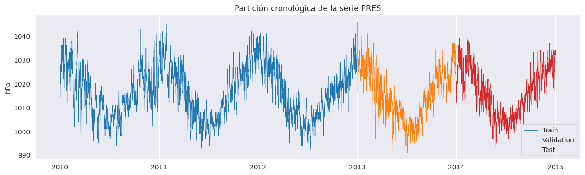
2.3. Escalado (sin fuga)#
El
MinMaxScalerse ajusta únicamente con Train y se aplica (transform) a Validation y Test. Valores fuera del rango de train pueden salir ligeramente de \([0,1]\): es el comportamiento correcto, pues no debemos “ver” el futuro.
scaler = MinMaxScaler(feature_range=(0, 1))
scaler.fit(df_train[[TARGET]]) # <- SOLO train
s_train = scaler.transform(df_train[[TARGET]]).ravel()
s_val = scaler.transform(df_val[[TARGET]]).ravel()
s_test = scaler.transform(df_test[[TARGET]]).ravel()
2.4. Construcción de regresores y objetivo#
Para que la primera observación de Validation/Test también tenga 7 rezagos, se antepone como contexto el final del segmento anterior. Esto usa solo información pasada, por lo que no hay leakage, y evita perder muestras y desalinear índices.
def make_xy(series, lags, context=None):
"""
series : serie escalada del segmento (1-D)
lags : número de rezagos (ventana)
context : últimos valores del segmento anterior (pasado) para completar las primeras ventanas
"""
full = series if context is None else np.concatenate([context[-lags:], series])
X = np.lib.stride_tricks.sliding_window_view(full[:-1], lags)
y = full[lags:]
return X.copy(), y.copy()
X_train, y_train = make_xy(s_train, LAGS) # primer segmento: sin contexto
X_val, y_val = make_xy(s_val, LAGS, context=s_train) # contexto = final de train
X_test, y_test = make_xy(s_test, LAGS, context=s_val) # contexto = final de val
dates_test = df_test['datetime'].values # alineadas 1 a 1 con y_test
print('Train:', X_train.shape, y_train.shape)
print('Val :', X_val.shape, y_val.shape)
print('Test :', X_test.shape, y_test.shape)
assert len(y_val) == len(df_val) and len(y_test) == len(df_test)
Train: (26297, 7) (26297,)
Val : (8760, 7) (8760,)
Test : (8760, 7) (8760,)
2.5. Modelo MLP con regularización#
Misma arquitectura base (\(32\to16\to16\),
tanh) pero con L2 en las capas densas, Dropout y control del entrenamiento mediante EarlyStopping sobre Validation.
def build_model(lags=LAGS, l2=0.0, dropout=0.1, lr=1e-3):
inp = layers.Input(shape=(lags,), dtype='float32')
# Mantenemos las capas grandes
x = layers.Dense(128, activation='relu', kernel_regularizer=regularizers.l2(l2))(inp)
x = layers.Dense(64, activation='relu', kernel_regularizer=regularizers.l2(l2))(x)
x = layers.Dense(32, activation='relu', kernel_regularizer=regularizers.l2(l2))(x)
# Dropout en 0
x = layers.Dropout(dropout)(x)
out = layers.Dense(1, activation='linear')(x)
model = keras.Model(inp, out)
model.compile(loss='mean_squared_error',
optimizer=keras.optimizers.Adam(learning_rate=lr),
metrics=['mae'])
return model
keras.backend.clear_session()
model = build_model()
2.6. 6. Entrenamiento (Train) con early stopping (Validation)#
EarlyStopping(restore_best_weights=True)detiene el entrenamiento cuandoval_lossdeja de mejorar y restaura los mejores pesos.ReduceLROnPlateaureduce la tasa de aprendizaje si Validation se estanca.ModelCheckpointguarda el mejor modelo de esta corrida en una carpeta limpia.shuffle=Truesolo mezcla las ventanas dentro de Train; cada ventana contiene únicamente pasado, por lo que no hay fuga temporal.
ckpt_dir = 'keras_models_clean'
shutil.rmtree(ckpt_dir, ignore_errors=True)
os.makedirs(ckpt_dir)
ckpt_path = os.path.join(ckpt_dir, 'best_mlp_pres.keras')
callbacks_list = [
# Subimos a 40 para darle margen
keras.callbacks.EarlyStopping(monitor='val_loss', patience=40, restore_best_weights=True, verbose=1),
# Subimos a 20 para que no baje el LR tan rápido
keras.callbacks.ReduceLROnPlateau(monitor='val_loss', factor=0.5, patience=20, min_lr=1e-6, verbose=1),
keras.callbacks.ModelCheckpoint(ckpt_path, monitor='val_loss', save_best_only=True, mode='min', verbose=0),
]
history = model.fit(
X_train, y_train,
validation_data=(X_val, y_val),
epochs=300, batch_size=32, shuffle=True,
callbacks=callbacks_list, verbose=2
)
Epoch 1/300
I0000 00:00:1793644755.969809 137856 dot_merger.cc:481] Merging Dots in computation: a_inference_one_step_on_data_690508__.15
I0000 00:00:1793644758.858450 137853 dot_merger.cc:481] Merging Dots in computation: a_inference_one_step_on_data_690508__.15
822/822 - 6s - 7ms/step - loss: 0.0039 - mae: 0.0423 - val_loss: 9.2977e-04 - val_mae: 0.0263 - learning_rate: 0.0010
Epoch 2/300
822/822 - 2s - 3ms/step - loss: 0.0017 - mae: 0.0299 - val_loss: 2.1907e-04 - val_mae: 0.0116 - learning_rate: 0.0010
Epoch 3/300
822/822 - 2s - 2ms/step - loss: 0.0011 - mae: 0.0239 - val_loss: 2.4494e-04 - val_mae: 0.0123 - learning_rate: 0.0010
Epoch 4/300
822/822 - 2s - 2ms/step - loss: 7.9727e-04 - mae: 0.0203 - val_loss: 1.6651e-04 - val_mae: 0.0097 - learning_rate: 0.0010
Epoch 5/300
822/822 - 2s - 2ms/step - loss: 6.6420e-04 - mae: 0.0190 - val_loss: 1.7374e-04 - val_mae: 0.0100 - learning_rate: 0.0010
Epoch 6/300
822/822 - 2s - 2ms/step - loss: 6.0469e-04 - mae: 0.0182 - val_loss: 1.8636e-04 - val_mae: 0.0106 - learning_rate: 0.0010
Epoch 7/300
822/822 - 2s - 3ms/step - loss: 5.9385e-04 - mae: 0.0181 - val_loss: 1.6398e-04 - val_mae: 0.0098 - learning_rate: 0.0010
Epoch 8/300
822/822 - 2s - 2ms/step - loss: 6.1359e-04 - mae: 0.0185 - val_loss: 1.7827e-04 - val_mae: 0.0103 - learning_rate: 0.0010
Epoch 9/300
822/822 - 2s - 2ms/step - loss: 5.9309e-04 - mae: 0.0181 - val_loss: 2.4082e-04 - val_mae: 0.0126 - learning_rate: 0.0010
Epoch 10/300
822/822 - 2s - 2ms/step - loss: 6.0176e-04 - mae: 0.0182 - val_loss: 2.6837e-04 - val_mae: 0.0131 - learning_rate: 0.0010
Epoch 11/300
822/822 - 2s - 2ms/step - loss: 6.0020e-04 - mae: 0.0181 - val_loss: 1.7020e-04 - val_mae: 0.0100 - learning_rate: 0.0010
Epoch 12/300
822/822 - 2s - 2ms/step - loss: 5.7741e-04 - mae: 0.0179 - val_loss: 1.5739e-04 - val_mae: 0.0095 - learning_rate: 0.0010
Epoch 13/300
822/822 - 2s - 2ms/step - loss: 5.6737e-04 - mae: 0.0177 - val_loss: 1.7428e-04 - val_mae: 0.0103 - learning_rate: 0.0010
Epoch 14/300
822/822 - 2s - 2ms/step - loss: 5.7906e-04 - mae: 0.0179 - val_loss: 1.8819e-04 - val_mae: 0.0109 - learning_rate: 0.0010
Epoch 15/300
822/822 - 2s - 2ms/step - loss: 5.9080e-04 - mae: 0.0180 - val_loss: 1.6119e-04 - val_mae: 0.0095 - learning_rate: 0.0010
Epoch 16/300
822/822 - 2s - 2ms/step - loss: 5.7667e-04 - mae: 0.0179 - val_loss: 2.4967e-04 - val_mae: 0.0130 - learning_rate: 0.0010
Epoch 17/300
822/822 - 2s - 2ms/step - loss: 5.8518e-04 - mae: 0.0179 - val_loss: 2.1191e-04 - val_mae: 0.0117 - learning_rate: 0.0010
Epoch 18/300
822/822 - 2s - 2ms/step - loss: 5.8505e-04 - mae: 0.0179 - val_loss: 1.8789e-04 - val_mae: 0.0109 - learning_rate: 0.0010
Epoch 19/300
822/822 - 2s - 2ms/step - loss: 5.8099e-04 - mae: 0.0180 - val_loss: 2.8236e-04 - val_mae: 0.0140 - learning_rate: 0.0010
Epoch 20/300
822/822 - 2s - 2ms/step - loss: 5.7034e-04 - mae: 0.0177 - val_loss: 2.2232e-04 - val_mae: 0.0121 - learning_rate: 0.0010
Epoch 21/300
822/822 - 2s - 2ms/step - loss: 5.8934e-04 - mae: 0.0181 - val_loss: 2.0713e-04 - val_mae: 0.0117 - learning_rate: 0.0010
Epoch 22/300
Epoch 22: ReduceLROnPlateau reducing learning rate to 0.0005000000237487257.
822/822 - 2s - 2ms/step - loss: 5.7895e-04 - mae: 0.0177 - val_loss: 1.7285e-04 - val_mae: 0.0101 - learning_rate: 0.0010
Epoch 23/300
822/822 - 2s - 2ms/step - loss: 5.5007e-04 - mae: 0.0173 - val_loss: 2.5641e-04 - val_mae: 0.0132 - learning_rate: 5.0000e-04
Epoch 24/300
822/822 - 2s - 2ms/step - loss: 5.4505e-04 - mae: 0.0171 - val_loss: 1.5959e-04 - val_mae: 0.0095 - learning_rate: 5.0000e-04
Epoch 25/300
822/822 - 2s - 2ms/step - loss: 5.6934e-04 - mae: 0.0176 - val_loss: 2.1707e-04 - val_mae: 0.0120 - learning_rate: 5.0000e-04
Epoch 26/300
822/822 - 2s - 2ms/step - loss: 5.5408e-04 - mae: 0.0173 - val_loss: 1.5999e-04 - val_mae: 0.0096 - learning_rate: 5.0000e-04
Epoch 27/300
822/822 - 2s - 2ms/step - loss: 5.4974e-04 - mae: 0.0173 - val_loss: 1.5268e-04 - val_mae: 0.0093 - learning_rate: 5.0000e-04
Epoch 28/300
822/822 - 2s - 2ms/step - loss: 5.4666e-04 - mae: 0.0172 - val_loss: 2.1148e-04 - val_mae: 0.0114 - learning_rate: 5.0000e-04
Epoch 29/300
822/822 - 2s - 2ms/step - loss: 5.4460e-04 - mae: 0.0172 - val_loss: 1.5783e-04 - val_mae: 0.0096 - learning_rate: 5.0000e-04
Epoch 30/300
822/822 - 2s - 2ms/step - loss: 5.6017e-04 - mae: 0.0174 - val_loss: 1.8929e-04 - val_mae: 0.0108 - learning_rate: 5.0000e-04
Epoch 31/300
822/822 - 2s - 2ms/step - loss: 5.4576e-04 - mae: 0.0171 - val_loss: 1.7209e-04 - val_mae: 0.0102 - learning_rate: 5.0000e-04
Epoch 32/300
822/822 - 2s - 2ms/step - loss: 5.5089e-04 - mae: 0.0173 - val_loss: 1.5352e-04 - val_mae: 0.0093 - learning_rate: 5.0000e-04
Epoch 33/300
822/822 - 2s - 2ms/step - loss: 5.4868e-04 - mae: 0.0172 - val_loss: 1.6528e-04 - val_mae: 0.0098 - learning_rate: 5.0000e-04
Epoch 34/300
822/822 - 2s - 2ms/step - loss: 5.5966e-04 - mae: 0.0173 - val_loss: 1.5832e-04 - val_mae: 0.0096 - learning_rate: 5.0000e-04
Epoch 35/300
822/822 - 2s - 2ms/step - loss: 5.5531e-04 - mae: 0.0173 - val_loss: 2.0355e-04 - val_mae: 0.0116 - learning_rate: 5.0000e-04
Epoch 36/300
822/822 - 2s - 2ms/step - loss: 5.4158e-04 - mae: 0.0171 - val_loss: 1.8963e-04 - val_mae: 0.0110 - learning_rate: 5.0000e-04
Epoch 37/300
822/822 - 2s - 2ms/step - loss: 5.5693e-04 - mae: 0.0173 - val_loss: 2.3281e-04 - val_mae: 0.0125 - learning_rate: 5.0000e-04
Epoch 38/300
822/822 - 2s - 2ms/step - loss: 5.6667e-04 - mae: 0.0175 - val_loss: 1.7648e-04 - val_mae: 0.0104 - learning_rate: 5.0000e-04
Epoch 39/300
822/822 - 2s - 2ms/step - loss: 5.6166e-04 - mae: 0.0175 - val_loss: 1.5265e-04 - val_mae: 0.0093 - learning_rate: 5.0000e-04
Epoch 40/300
822/822 - 2s - 2ms/step - loss: 5.4833e-04 - mae: 0.0172 - val_loss: 1.7011e-04 - val_mae: 0.0102 - learning_rate: 5.0000e-04
Epoch 41/300
822/822 - 2s - 2ms/step - loss: 5.5451e-04 - mae: 0.0173 - val_loss: 1.7158e-04 - val_mae: 0.0102 - learning_rate: 5.0000e-04
Epoch 42/300
Epoch 42: ReduceLROnPlateau reducing learning rate to 0.0002500000118743628.
822/822 - 2s - 2ms/step - loss: 5.5245e-04 - mae: 0.0173 - val_loss: 1.6606e-04 - val_mae: 0.0100 - learning_rate: 5.0000e-04
Epoch 43/300
822/822 - 2s - 2ms/step - loss: 5.3984e-04 - mae: 0.0171 - val_loss: 1.5929e-04 - val_mae: 0.0097 - learning_rate: 2.5000e-04
Epoch 44/300
822/822 - 2s - 2ms/step - loss: 5.3069e-04 - mae: 0.0169 - val_loss: 1.5777e-04 - val_mae: 0.0096 - learning_rate: 2.5000e-04
Epoch 45/300
822/822 - 2s - 2ms/step - loss: 5.3629e-04 - mae: 0.0169 - val_loss: 1.6062e-04 - val_mae: 0.0097 - learning_rate: 2.5000e-04
Epoch 46/300
822/822 - 2s - 2ms/step - loss: 5.3351e-04 - mae: 0.0169 - val_loss: 1.5561e-04 - val_mae: 0.0094 - learning_rate: 2.5000e-04
Epoch 47/300
822/822 - 2s - 2ms/step - loss: 5.3503e-04 - mae: 0.0170 - val_loss: 1.6643e-04 - val_mae: 0.0100 - learning_rate: 2.5000e-04
Epoch 48/300
822/822 - 2s - 2ms/step - loss: 5.3378e-04 - mae: 0.0169 - val_loss: 1.5253e-04 - val_mae: 0.0093 - learning_rate: 2.5000e-04
Epoch 49/300
822/822 - 2s - 2ms/step - loss: 5.4072e-04 - mae: 0.0170 - val_loss: 1.8065e-04 - val_mae: 0.0107 - learning_rate: 2.5000e-04
Epoch 50/300
822/822 - 2s - 2ms/step - loss: 5.2956e-04 - mae: 0.0169 - val_loss: 1.5220e-04 - val_mae: 0.0093 - learning_rate: 2.5000e-04
Epoch 51/300
822/822 - 2s - 2ms/step - loss: 5.4247e-04 - mae: 0.0171 - val_loss: 1.5501e-04 - val_mae: 0.0095 - learning_rate: 2.5000e-04
Epoch 52/300
822/822 - 2s - 2ms/step - loss: 5.3328e-04 - mae: 0.0170 - val_loss: 1.5509e-04 - val_mae: 0.0095 - learning_rate: 2.5000e-04
Epoch 53/300
822/822 - 2s - 2ms/step - loss: 5.2942e-04 - mae: 0.0169 - val_loss: 1.6247e-04 - val_mae: 0.0098 - learning_rate: 2.5000e-04
Epoch 54/300
822/822 - 2s - 2ms/step - loss: 5.3491e-04 - mae: 0.0169 - val_loss: 1.5011e-04 - val_mae: 0.0092 - learning_rate: 2.5000e-04
Epoch 55/300
822/822 - 2s - 2ms/step - loss: 5.3710e-04 - mae: 0.0170 - val_loss: 1.5122e-04 - val_mae: 0.0093 - learning_rate: 2.5000e-04
Epoch 56/300
822/822 - 2s - 2ms/step - loss: 5.2907e-04 - mae: 0.0169 - val_loss: 1.5059e-04 - val_mae: 0.0092 - learning_rate: 2.5000e-04
Epoch 57/300
822/822 - 2s - 2ms/step - loss: 5.3708e-04 - mae: 0.0170 - val_loss: 1.5382e-04 - val_mae: 0.0094 - learning_rate: 2.5000e-04
Epoch 58/300
822/822 - 2s - 3ms/step - loss: 5.3694e-04 - mae: 0.0169 - val_loss: 1.5791e-04 - val_mae: 0.0096 - learning_rate: 2.5000e-04
Epoch 59/300
822/822 - 2s - 2ms/step - loss: 5.3391e-04 - mae: 0.0169 - val_loss: 1.5404e-04 - val_mae: 0.0094 - learning_rate: 2.5000e-04
Epoch 60/300
822/822 - 2s - 2ms/step - loss: 5.4066e-04 - mae: 0.0171 - val_loss: 1.5586e-04 - val_mae: 0.0095 - learning_rate: 2.5000e-04
Epoch 61/300
822/822 - 2s - 2ms/step - loss: 5.3159e-04 - mae: 0.0168 - val_loss: 1.6775e-04 - val_mae: 0.0101 - learning_rate: 2.5000e-04
Epoch 62/300
Epoch 62: ReduceLROnPlateau reducing learning rate to 0.0001250000059371814.
822/822 - 2s - 2ms/step - loss: 5.2394e-04 - mae: 0.0168 - val_loss: 1.4862e-04 - val_mae: 0.0091 - learning_rate: 2.5000e-04
Epoch 63/300
822/822 - 2s - 2ms/step - loss: 5.2035e-04 - mae: 0.0167 - val_loss: 1.8936e-04 - val_mae: 0.0108 - learning_rate: 1.2500e-04
Epoch 64/300
822/822 - 2s - 2ms/step - loss: 5.2140e-04 - mae: 0.0167 - val_loss: 1.5153e-04 - val_mae: 0.0093 - learning_rate: 1.2500e-04
Epoch 65/300
822/822 - 2s - 2ms/step - loss: 5.2538e-04 - mae: 0.0168 - val_loss: 1.5192e-04 - val_mae: 0.0093 - learning_rate: 1.2500e-04
Epoch 66/300
822/822 - 2s - 2ms/step - loss: 5.2847e-04 - mae: 0.0168 - val_loss: 1.6681e-04 - val_mae: 0.0100 - learning_rate: 1.2500e-04
Epoch 67/300
822/822 - 2s - 2ms/step - loss: 5.2586e-04 - mae: 0.0167 - val_loss: 1.5709e-04 - val_mae: 0.0096 - learning_rate: 1.2500e-04
Epoch 68/300
822/822 - 2s - 2ms/step - loss: 5.3689e-04 - mae: 0.0169 - val_loss: 1.4885e-04 - val_mae: 0.0092 - learning_rate: 1.2500e-04
Epoch 69/300
822/822 - 2s - 2ms/step - loss: 5.2449e-04 - mae: 0.0168 - val_loss: 1.6962e-04 - val_mae: 0.0101 - learning_rate: 1.2500e-04
Epoch 70/300
822/822 - 2s - 2ms/step - loss: 5.3074e-04 - mae: 0.0168 - val_loss: 1.6684e-04 - val_mae: 0.0101 - learning_rate: 1.2500e-04
Epoch 71/300
822/822 - 2s - 2ms/step - loss: 5.1949e-04 - mae: 0.0167 - val_loss: 1.4984e-04 - val_mae: 0.0092 - learning_rate: 1.2500e-04
Epoch 72/300
822/822 - 2s - 2ms/step - loss: 5.3391e-04 - mae: 0.0168 - val_loss: 1.5679e-04 - val_mae: 0.0096 - learning_rate: 1.2500e-04
Epoch 73/300
822/822 - 2s - 2ms/step - loss: 5.2135e-04 - mae: 0.0167 - val_loss: 1.8451e-04 - val_mae: 0.0108 - learning_rate: 1.2500e-04
Epoch 74/300
822/822 - 2s - 2ms/step - loss: 5.2563e-04 - mae: 0.0167 - val_loss: 1.5812e-04 - val_mae: 0.0097 - learning_rate: 1.2500e-04
Epoch 75/300
822/822 - 2s - 2ms/step - loss: 5.2377e-04 - mae: 0.0168 - val_loss: 1.6601e-04 - val_mae: 0.0101 - learning_rate: 1.2500e-04
Epoch 76/300
822/822 - 2s - 2ms/step - loss: 5.3201e-04 - mae: 0.0168 - val_loss: 1.5656e-04 - val_mae: 0.0096 - learning_rate: 1.2500e-04
Epoch 77/300
822/822 - 2s - 2ms/step - loss: 5.1725e-04 - mae: 0.0167 - val_loss: 1.5493e-04 - val_mae: 0.0095 - learning_rate: 1.2500e-04
Epoch 78/300
822/822 - 2s - 2ms/step - loss: 5.3053e-04 - mae: 0.0169 - val_loss: 1.5371e-04 - val_mae: 0.0094 - learning_rate: 1.2500e-04
Epoch 79/300
822/822 - 2s - 2ms/step - loss: 5.2495e-04 - mae: 0.0168 - val_loss: 1.5808e-04 - val_mae: 0.0096 - learning_rate: 1.2500e-04
Epoch 80/300
822/822 - 2s - 2ms/step - loss: 5.2849e-04 - mae: 0.0168 - val_loss: 1.6705e-04 - val_mae: 0.0101 - learning_rate: 1.2500e-04
Epoch 81/300
822/822 - 2s - 2ms/step - loss: 5.2403e-04 - mae: 0.0168 - val_loss: 1.5833e-04 - val_mae: 0.0097 - learning_rate: 1.2500e-04
Epoch 82/300
Epoch 82: ReduceLROnPlateau reducing learning rate to 6.25000029685907e-05.
822/822 - 2s - 2ms/step - loss: 5.2786e-04 - mae: 0.0168 - val_loss: 1.5756e-04 - val_mae: 0.0096 - learning_rate: 1.2500e-04
Epoch 83/300
822/822 - 2s - 3ms/step - loss: 5.1015e-04 - mae: 0.0165 - val_loss: 1.4947e-04 - val_mae: 0.0092 - learning_rate: 6.2500e-05
Epoch 84/300
822/822 - 2s - 3ms/step - loss: 5.2831e-04 - mae: 0.0168 - val_loss: 1.5199e-04 - val_mae: 0.0094 - learning_rate: 6.2500e-05
Epoch 85/300
822/822 - 2s - 3ms/step - loss: 5.3132e-04 - mae: 0.0168 - val_loss: 1.5336e-04 - val_mae: 0.0095 - learning_rate: 6.2500e-05
Epoch 86/300
822/822 - 2s - 3ms/step - loss: 5.3276e-04 - mae: 0.0169 - val_loss: 1.4963e-04 - val_mae: 0.0092 - learning_rate: 6.2500e-05
Epoch 87/300
822/822 - 2s - 2ms/step - loss: 5.2178e-04 - mae: 0.0167 - val_loss: 1.5930e-04 - val_mae: 0.0097 - learning_rate: 6.2500e-05
Epoch 88/300
822/822 - 2s - 3ms/step - loss: 5.1677e-04 - mae: 0.0166 - val_loss: 1.5336e-04 - val_mae: 0.0095 - learning_rate: 6.2500e-05
Epoch 89/300
822/822 - 2s - 3ms/step - loss: 5.2217e-04 - mae: 0.0166 - val_loss: 1.6121e-04 - val_mae: 0.0098 - learning_rate: 6.2500e-05
Epoch 90/300
822/822 - 2s - 2ms/step - loss: 5.1957e-04 - mae: 0.0167 - val_loss: 1.5539e-04 - val_mae: 0.0095 - learning_rate: 6.2500e-05
Epoch 91/300
822/822 - 2s - 2ms/step - loss: 5.2408e-04 - mae: 0.0167 - val_loss: 1.5041e-04 - val_mae: 0.0093 - learning_rate: 6.2500e-05
Epoch 92/300
822/822 - 2s - 2ms/step - loss: 5.2210e-04 - mae: 0.0167 - val_loss: 1.5775e-04 - val_mae: 0.0097 - learning_rate: 6.2500e-05
Epoch 93/300
822/822 - 2s - 2ms/step - loss: 5.1967e-04 - mae: 0.0166 - val_loss: 1.6401e-04 - val_mae: 0.0099 - learning_rate: 6.2500e-05
Epoch 94/300
822/822 - 2s - 3ms/step - loss: 5.2084e-04 - mae: 0.0166 - val_loss: 1.4848e-04 - val_mae: 0.0092 - learning_rate: 6.2500e-05
Epoch 95/300
822/822 - 2s - 2ms/step - loss: 5.2047e-04 - mae: 0.0166 - val_loss: 1.5312e-04 - val_mae: 0.0094 - learning_rate: 6.2500e-05
Epoch 96/300
822/822 - 2s - 2ms/step - loss: 5.1894e-04 - mae: 0.0167 - val_loss: 1.5055e-04 - val_mae: 0.0093 - learning_rate: 6.2500e-05
Epoch 97/300
822/822 - 2s - 2ms/step - loss: 5.2110e-04 - mae: 0.0166 - val_loss: 1.5477e-04 - val_mae: 0.0095 - learning_rate: 6.2500e-05
Epoch 98/300
822/822 - 2s - 2ms/step - loss: 5.2007e-04 - mae: 0.0166 - val_loss: 1.4941e-04 - val_mae: 0.0092 - learning_rate: 6.2500e-05
Epoch 99/300
822/822 - 2s - 2ms/step - loss: 5.2320e-04 - mae: 0.0167 - val_loss: 1.5411e-04 - val_mae: 0.0095 - learning_rate: 6.2500e-05
Epoch 100/300
822/822 - 2s - 2ms/step - loss: 5.2605e-04 - mae: 0.0168 - val_loss: 1.5014e-04 - val_mae: 0.0093 - learning_rate: 6.2500e-05
Epoch 101/300
822/822 - 2s - 2ms/step - loss: 5.2122e-04 - mae: 0.0166 - val_loss: 1.5737e-04 - val_mae: 0.0097 - learning_rate: 6.2500e-05
Epoch 102/300
Epoch 102: ReduceLROnPlateau reducing learning rate to 3.125000148429535e-05.
822/822 - 2s - 2ms/step - loss: 5.3160e-04 - mae: 0.0168 - val_loss: 1.5169e-04 - val_mae: 0.0093 - learning_rate: 6.2500e-05
Epoch 103/300
822/822 - 2s - 2ms/step - loss: 5.2052e-04 - mae: 0.0166 - val_loss: 1.5166e-04 - val_mae: 0.0093 - learning_rate: 3.1250e-05
Epoch 104/300
822/822 - 2s - 2ms/step - loss: 5.2944e-04 - mae: 0.0168 - val_loss: 1.5127e-04 - val_mae: 0.0093 - learning_rate: 3.1250e-05
Epoch 105/300
822/822 - 2s - 2ms/step - loss: 5.2291e-04 - mae: 0.0166 - val_loss: 1.5199e-04 - val_mae: 0.0094 - learning_rate: 3.1250e-05
Epoch 106/300
822/822 - 2s - 2ms/step - loss: 5.1877e-04 - mae: 0.0165 - val_loss: 1.5122e-04 - val_mae: 0.0093 - learning_rate: 3.1250e-05
Epoch 107/300
822/822 - 2s - 2ms/step - loss: 5.1796e-04 - mae: 0.0166 - val_loss: 1.5096e-04 - val_mae: 0.0093 - learning_rate: 3.1250e-05
Epoch 108/300
822/822 - 2s - 2ms/step - loss: 5.3303e-04 - mae: 0.0168 - val_loss: 1.5138e-04 - val_mae: 0.0093 - learning_rate: 3.1250e-05
Epoch 109/300
822/822 - 2s - 2ms/step - loss: 5.2416e-04 - mae: 0.0166 - val_loss: 1.5278e-04 - val_mae: 0.0094 - learning_rate: 3.1250e-05
Epoch 110/300
822/822 - 2s - 2ms/step - loss: 5.2035e-04 - mae: 0.0166 - val_loss: 1.5348e-04 - val_mae: 0.0094 - learning_rate: 3.1250e-05
Epoch 111/300
822/822 - 2s - 2ms/step - loss: 5.2423e-04 - mae: 0.0167 - val_loss: 1.5015e-04 - val_mae: 0.0093 - learning_rate: 3.1250e-05
Epoch 112/300
822/822 - 2s - 3ms/step - loss: 5.2959e-04 - mae: 0.0167 - val_loss: 1.4831e-04 - val_mae: 0.0092 - learning_rate: 3.1250e-05
Epoch 113/300
822/822 - 2s - 2ms/step - loss: 5.1934e-04 - mae: 0.0166 - val_loss: 1.5200e-04 - val_mae: 0.0093 - learning_rate: 3.1250e-05
Epoch 114/300
822/822 - 2s - 2ms/step - loss: 5.1961e-04 - mae: 0.0166 - val_loss: 1.5000e-04 - val_mae: 0.0093 - learning_rate: 3.1250e-05
Epoch 115/300
822/822 - 2s - 2ms/step - loss: 5.2850e-04 - mae: 0.0167 - val_loss: 1.4968e-04 - val_mae: 0.0092 - learning_rate: 3.1250e-05
Epoch 116/300
822/822 - 2s - 2ms/step - loss: 5.1319e-04 - mae: 0.0165 - val_loss: 1.5742e-04 - val_mae: 0.0096 - learning_rate: 3.1250e-05
Epoch 117/300
822/822 - 2s - 2ms/step - loss: 5.1878e-04 - mae: 0.0166 - val_loss: 1.4996e-04 - val_mae: 0.0093 - learning_rate: 3.1250e-05
Epoch 118/300
822/822 - 2s - 2ms/step - loss: 5.3356e-04 - mae: 0.0168 - val_loss: 1.5008e-04 - val_mae: 0.0092 - learning_rate: 3.1250e-05
Epoch 119/300
822/822 - 2s - 2ms/step - loss: 5.2788e-04 - mae: 0.0167 - val_loss: 1.5663e-04 - val_mae: 0.0095 - learning_rate: 3.1250e-05
Epoch 120/300
822/822 - 2s - 2ms/step - loss: 5.2387e-04 - mae: 0.0167 - val_loss: 1.5534e-04 - val_mae: 0.0095 - learning_rate: 3.1250e-05
Epoch 121/300
822/822 - 2s - 2ms/step - loss: 5.1578e-04 - mae: 0.0166 - val_loss: 1.5210e-04 - val_mae: 0.0094 - learning_rate: 3.1250e-05
Epoch 122/300
Epoch 122: ReduceLROnPlateau reducing learning rate to 1.5625000742147677e-05.
822/822 - 2s - 2ms/step - loss: 5.3963e-04 - mae: 0.0169 - val_loss: 1.5238e-04 - val_mae: 0.0094 - learning_rate: 3.1250e-05
Epoch 123/300
822/822 - 2s - 3ms/step - loss: 5.2481e-04 - mae: 0.0167 - val_loss: 1.5061e-04 - val_mae: 0.0093 - learning_rate: 1.5625e-05
Epoch 124/300
822/822 - 2s - 3ms/step - loss: 5.0935e-04 - mae: 0.0165 - val_loss: 1.4914e-04 - val_mae: 0.0092 - learning_rate: 1.5625e-05
Epoch 125/300
822/822 - 2s - 2ms/step - loss: 5.1854e-04 - mae: 0.0166 - val_loss: 1.5586e-04 - val_mae: 0.0096 - learning_rate: 1.5625e-05
Epoch 126/300
822/822 - 2s - 2ms/step - loss: 5.2807e-04 - mae: 0.0167 - val_loss: 1.5154e-04 - val_mae: 0.0093 - learning_rate: 1.5625e-05
Epoch 127/300
822/822 - 2s - 2ms/step - loss: 5.1139e-04 - mae: 0.0165 - val_loss: 1.4942e-04 - val_mae: 0.0092 - learning_rate: 1.5625e-05
Epoch 128/300
822/822 - 2s - 2ms/step - loss: 5.3146e-04 - mae: 0.0168 - val_loss: 1.5522e-04 - val_mae: 0.0095 - learning_rate: 1.5625e-05
Epoch 129/300
822/822 - 2s - 3ms/step - loss: 5.2810e-04 - mae: 0.0167 - val_loss: 1.5021e-04 - val_mae: 0.0093 - learning_rate: 1.5625e-05
Epoch 130/300
822/822 - 2s - 3ms/step - loss: 5.2331e-04 - mae: 0.0166 - val_loss: 1.5453e-04 - val_mae: 0.0095 - learning_rate: 1.5625e-05
Epoch 131/300
822/822 - 2s - 2ms/step - loss: 5.0619e-04 - mae: 0.0165 - val_loss: 1.5526e-04 - val_mae: 0.0096 - learning_rate: 1.5625e-05
Epoch 132/300
822/822 - 2s - 2ms/step - loss: 5.1123e-04 - mae: 0.0164 - val_loss: 1.5058e-04 - val_mae: 0.0093 - learning_rate: 1.5625e-05
Epoch 133/300
822/822 - 2s - 2ms/step - loss: 5.2145e-04 - mae: 0.0166 - val_loss: 1.5046e-04 - val_mae: 0.0093 - learning_rate: 1.5625e-05
Epoch 134/300
822/822 - 2s - 2ms/step - loss: 5.2299e-04 - mae: 0.0166 - val_loss: 1.5142e-04 - val_mae: 0.0093 - learning_rate: 1.5625e-05
Epoch 135/300
822/822 - 2s - 2ms/step - loss: 5.2161e-04 - mae: 0.0166 - val_loss: 1.5172e-04 - val_mae: 0.0094 - learning_rate: 1.5625e-05
Epoch 136/300
822/822 - 2s - 2ms/step - loss: 5.2292e-04 - mae: 0.0167 - val_loss: 1.4927e-04 - val_mae: 0.0092 - learning_rate: 1.5625e-05
Epoch 137/300
822/822 - 2s - 2ms/step - loss: 5.2413e-04 - mae: 0.0167 - val_loss: 1.5009e-04 - val_mae: 0.0092 - learning_rate: 1.5625e-05
Epoch 138/300
822/822 - 2s - 2ms/step - loss: 5.3318e-04 - mae: 0.0168 - val_loss: 1.5125e-04 - val_mae: 0.0093 - learning_rate: 1.5625e-05
Epoch 139/300
822/822 - 2s - 2ms/step - loss: 5.1985e-04 - mae: 0.0166 - val_loss: 1.4946e-04 - val_mae: 0.0092 - learning_rate: 1.5625e-05
Epoch 140/300
822/822 - 2s - 2ms/step - loss: 5.1279e-04 - mae: 0.0165 - val_loss: 1.5093e-04 - val_mae: 0.0093 - learning_rate: 1.5625e-05
Epoch 141/300
822/822 - 2s - 2ms/step - loss: 5.2287e-04 - mae: 0.0166 - val_loss: 1.5020e-04 - val_mae: 0.0093 - learning_rate: 1.5625e-05
Epoch 142/300
Epoch 142: ReduceLROnPlateau reducing learning rate to 7.812500371073838e-06.
822/822 - 2s - 2ms/step - loss: 5.1190e-04 - mae: 0.0165 - val_loss: 1.5029e-04 - val_mae: 0.0093 - learning_rate: 1.5625e-05
Epoch 143/300
822/822 - 2s - 2ms/step - loss: 5.2246e-04 - mae: 0.0166 - val_loss: 1.5086e-04 - val_mae: 0.0093 - learning_rate: 7.8125e-06
Epoch 144/300
822/822 - 2s - 3ms/step - loss: 5.2167e-04 - mae: 0.0166 - val_loss: 1.4920e-04 - val_mae: 0.0092 - learning_rate: 7.8125e-06
Epoch 145/300
822/822 - 2s - 2ms/step - loss: 5.1993e-04 - mae: 0.0166 - val_loss: 1.5024e-04 - val_mae: 0.0093 - learning_rate: 7.8125e-06
Epoch 146/300
822/822 - 2s - 2ms/step - loss: 5.1452e-04 - mae: 0.0166 - val_loss: 1.5068e-04 - val_mae: 0.0093 - learning_rate: 7.8125e-06
Epoch 147/300
822/822 - 2s - 2ms/step - loss: 5.3130e-04 - mae: 0.0167 - val_loss: 1.5044e-04 - val_mae: 0.0093 - learning_rate: 7.8125e-06
Epoch 148/300
822/822 - 2s - 2ms/step - loss: 5.2001e-04 - mae: 0.0166 - val_loss: 1.5123e-04 - val_mae: 0.0094 - learning_rate: 7.8125e-06
Epoch 149/300
822/822 - 2s - 2ms/step - loss: 5.2523e-04 - mae: 0.0166 - val_loss: 1.5129e-04 - val_mae: 0.0094 - learning_rate: 7.8125e-06
Epoch 150/300
822/822 - 2s - 2ms/step - loss: 5.1157e-04 - mae: 0.0166 - val_loss: 1.5014e-04 - val_mae: 0.0093 - learning_rate: 7.8125e-06
Epoch 151/300
822/822 - 2s - 2ms/step - loss: 5.1918e-04 - mae: 0.0166 - val_loss: 1.5221e-04 - val_mae: 0.0094 - learning_rate: 7.8125e-06
Epoch 152/300
822/822 - 2s - 3ms/step - loss: 5.1768e-04 - mae: 0.0165 - val_loss: 1.4905e-04 - val_mae: 0.0092 - learning_rate: 7.8125e-06
Epoch 152: early stopping
Restoring model weights from the end of the best epoch: 112.
2.6.1. Curvas de aprendizaje (diagnóstico de overfitting)#
h = pd.DataFrame(history.history)
best_ep = h['val_loss'].idxmin()
fig, ax = plt.subplots(figsize=(8, 4))
ax.plot(h['loss'], label='Train')
ax.plot(h['val_loss'], label='Validation')
ax.axvline(best_ep, ls='--', c='k', label=f'Mejor epoch = {best_ep+1}')
ax.set_title('Pérdida (MSE)')
ax.set_xlabel('Epoch')
ax.legend()
plt.tight_layout()
plt.show()
gap = h.loc[best_ep, 'val_loss'] / h.loc[best_ep, 'loss']
print(f"Brecha val_loss/train_loss en el mejor epoch: {gap:.2f}x (valores >> 1 sugieren sobreajuste)")
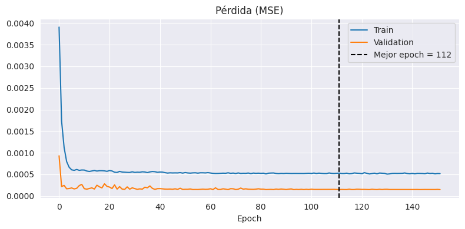
Brecha val_loss/train_loss en el mejor epoch: 0.28x (valores >> 1 sugieren sobreajuste)
import numpy as np
# Obtener predicciones en validación
y_pred = model.predict(X_val).flatten()
print(f"Desviación estándar de y_val real: {np.std(y_val):.6f}")
print(f"Desviación estándar de las predicciones: {np.std(y_pred):.6f}")
274/274 ━━━━━━━━━━━━━━━━━━━━ 1s 2ms/step
Desviación estándar de y_val real: 0.197807
Desviación estándar de las predicciones: 0.196327
2.7. Evaluación final en el conjunto de Test (se usa una sola vez)#
Las métricas se calculan en la escala original (hPa) y se comparan con un modelo naive de persistencia (\(\hat y_t = y_{t-1}\)), la línea base mínima que debe superar cualquier modelo de series temporales.
def inv(a):
return scaler.inverse_transform(np.asarray(a).reshape(-1, 1)).ravel()
y_true = inv(y_test)
y_pred = inv(model.predict(X_test, verbose=0))
y_naive = inv(X_test[:, -1]) # persistencia: último valor observado
def metrics(y, yhat):
return {
'MAE (hPa)': mean_absolute_error(y, yhat),
'RMSE (hPa)': np.sqrt(mean_squared_error(y, yhat)),
'MAPE (%)': np.mean(np.abs((y - yhat) / y)) * 100,
'R²': r2_score(y, yhat),
}
res = pd.DataFrame({'MLP': metrics(y_true, y_pred),
'Naive (persistencia)': metrics(y_true, y_naive)}).T
print("=== Error de predicción en el conjunto de TEST (2014) ===")
display(res.round(4))
rows = {}
for n, (X, y) in {'Train': (X_train, y_train), 'Validation': (X_val, y_val), 'Test': (X_test, y_test)}.items():
rows[n] = metrics(inv(y), inv(model.predict(X, verbose=0)))
print("\n=== Comparación Train / Validation / Test (detección de overfitting) ===")
display(pd.DataFrame(rows).T.round(4))
=== Error de predicción en el conjunto de TEST (2014) ===
| MAE (hPa) | RMSE (hPa) | MAPE (%) | R² | |
|---|---|---|---|---|
| MLP | 0.4759 | 0.6275 | 0.0468 | 0.9959 |
| Naive (persistencia) | 0.4313 | 0.6893 | 0.0424 | 0.9950 |
=== Comparación Train / Validation / Test (detección de overfitting) ===
| MAE (hPa) | RMSE (hPa) | MAPE (%) | R² | |
|---|---|---|---|---|
| Train | 0.4732 | 0.6319 | 0.0465 | 0.9963 |
| Validation | 0.4855 | 0.6454 | 0.0478 | 0.9962 |
| Test | 0.4759 | 0.6275 | 0.0468 | 0.9959 |
2.7.1. Figuras de predicción y error en el conjunto de Test#
err = y_true - y_pred
fig, axes = plt.subplots(3, 1, figsize=(15, 12))
# (a) Test completo
axes[0].plot(dates_test, y_true, color='tab:red', lw=.7, label='Real')
axes[0].plot(dates_test, y_pred, color='tab:blue', lw=.7, alpha=.8, label='Predicho (MLP)')
axes[0].set_title(f"Real vs Predicho — Test 2014 | MAE={res.loc['MLP','MAE (hPa)']:.3f} hPa, "
f"RMSE={res.loc['MLP','RMSE (hPa)']:.3f} hPa, R²={res.loc['MLP','R²']:.4f}")
axes[0].set_ylabel('Presión (hPa)'); axes[0].legend()
# (b) Zoom: primeros 7 días (168 h)
n = 24 * 7
axes[1].plot(dates_test[:n], y_true[:n], 'r-*', ms=4, label='Real')
axes[1].plot(dates_test[:n], y_pred[:n], 'b-.', ms=4, label='Predicho (MLP)')
axes[1].plot(dates_test[:n], y_naive[:n], 'g--', lw=.8, alpha=.7, label='Naive')
axes[1].set_title('Zoom: primeros 7 días del test'); axes[1].set_ylabel('Presión (hPa)'); axes[1].legend()
# (c) Error en el tiempo
axes[2].plot(dates_test, err, color='purple', lw=.5)
axes[2].axhline(0, color='k', lw=.8)
axes[2].set_title('Error de predicción (Real − Predicho) en Test'); axes[2].set_ylabel('hPa')
plt.tight_layout(); plt.show()
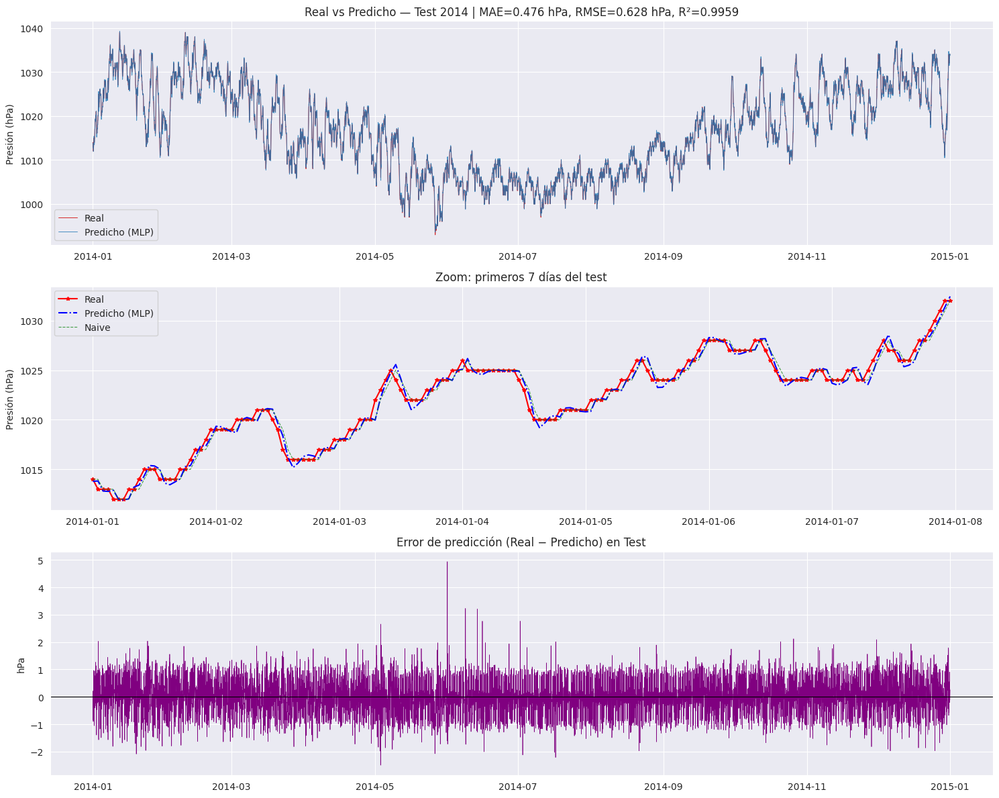
fig, ax = plt.subplots(1, 3, figsize=(16, 4.5))
lims = [y_true.min(), y_true.max()]
ax[0].scatter(y_true, y_pred, s=4, alpha=.4)
ax[0].plot(lims, lims, 'r--'); ax[0].set_xlabel('Real'); ax[0].set_ylabel('Predicho')
ax[0].set_title('Real vs Predicho (Test)')
sns.histplot(err, bins=60, kde=True, ax=ax[1], color='purple')
ax[1].axvline(0, c='k'); ax[1].set_title('Distribución del error (Test)'); ax[1].set_xlabel('Error (hPa)')
res[['MAE (hPa)', 'RMSE (hPa)']].plot.bar(ax=ax[2], rot=0)
ax[2].set_title('MLP vs Naive (Test)'); ax[2].set_ylabel('hPa')
plt.tight_layout(); plt.show()
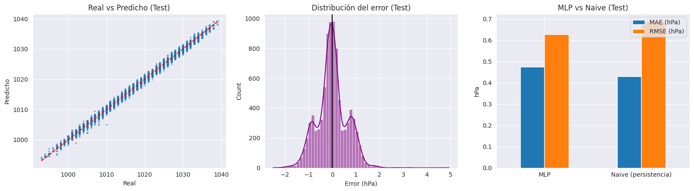
2.8. Proyecto Integrador de Deep Learning#
Objetivo
El proyecto busca predecir una variable temporal de interés, como el precio de cierre de criptomonedas o la velocidad del viento, utilizando exclusivamente su histórico temporal (por ejemplo, fecha y valores observados). Para ello, se emplea la librería timeseries-cv, junto con estrategias de validación temporal, una red neuronal tipo MLP y un análisis riguroso de residuos. La validación se realiza comparando tres estrategias de partición temporal:
split_train_val_groupKFold,split_train_val_forwardChainingysplit_train_val_kFold(las tres detsxv.splitTrainVal, que particionan en train / validación).Adicionalmente, se propone construir, validar y desplegar un modelo robusto de deep learning, orientado tanto a la predicción del nivel de la serie como a la modelación de su volatilidad o variabilidad, partiendo únicamente de observaciones históricas.
El proyecto debe evaluar múltiples horizontes de predicción: 7, 14, 21 y 28 días (antes solo se consideraba un horizonte de 7 días). Cada horizonte se combina con cada tamaño de ventana de entrada (lags de 7, 14, 21 y 28 días), generando una matriz de experimentos lag × horizonte (4 × 4 = 16 configuraciones).
Además, el proyecto exige encontrar la mejor arquitectura de MLP mediante una búsqueda sistemática de arquitecturas (número de capas, neuronas por capa y uso de dropout por capa), siguiendo la metodología del notebook
architectures_dropout.ipynb, y justificar la selección con criterios de error de validación y control de sobreajuste (gap entre train y validación).El flujo de trabajo incluye:
Exploración y caracterización de la variabilidad de la serie
Construcción de ventanas temporales
Generación de targets multi-step para los horizontes 7, 14, 21 y 28 días
Validación cruzada para datos secuenciales con tres estrategias: Group K-Fold, Forward Chaining y K-Fold (
timeseries-cv)Búsqueda de la mejor arquitectura MLP (capas, neuronas y dropout)
Evaluación mediante métricas específicas (por lag y por horizonte)
Análisis de residuos
Todo ello con el objetivo final de su despliegue en un entorno de MLOps.
Contexto
Las series temporales asociadas a criptomonedas y a variables ambientales como la velocidad del viento comparten características fundamentales como:
Alta variabilidad
No linealidad
Dependencia temporal compleja
Posibles cambios de régimen
Estas propiedades representan tanto un desafío como una oportunidad para el desarrollo de modelos predictivos avanzados. En el caso de las criptomonedas, la alta volatilidad impacta directamente en:
Trading algorítmico
Gestión de portafolios
Estimación de riesgos
Por su parte, en el ámbito energético y ambiental, la predicción de la velocidad del viento es clave para:
Planificación de sistemas de generación eólica
Optimización operativa
Gestión de incertidumbre en energías renovables
En ambos contextos, si bien la predicción puntual de la serie es relevante, modelar y anticipar la variabilidad o volatilidad proporciona una base más robusta para la toma de decisiones bajo incertidumbre.
Por ello, el forecasting de series temporales, cuando se aborda de manera rigurosa, reproducible y orientada a datos reales, se consolida como una tarea central en la ciencia de datos aplicada tanto a sistemas financieros como a sistemas energéticos y ambientales.
Datasets recomendados:
Fuente: Binance Public API. API gratuita, sin registro, y es la fuente más citada en literatura académica de alta frecuencia. Seleccione la criptomoneda de su interés para esta tarea o el dataset de velocidad del viento. Ejemplo de uso de la API de Binance
import requests, pandas as pd, time
from datetime import datetime
def get_binance_1m(symbol="BTCUSDT", start="2024-01-01", end="2024-01-31"):
url = "https://api.binance.com/api/v3/klines"
start_ms = int(datetime.strptime(start, "%Y-%m-%d").timestamp() * 1000)
end_ms = int(datetime.strptime(end, "%Y-%m-%d").timestamp() * 1000)
all_data = []
while start_ms < end_ms:
params = {
"symbol": symbol,
"interval": "1m",
"startTime": start_ms,
"endTime": end_ms,
"limit": 1000
}
r = requests.get(url, params=params)
data = r.json()
if not data: break
all_data.extend(data)
start_ms = data[-1][0] + 60000 # avanza 1 minuto
time.sleep(0.1) # evita rate limit
df = pd.DataFrame(all_data, columns=[
"open_time","open","high","low","close","volume",
"close_time","quote_volume","trades",
"taker_buy_base","taker_buy_quote","ignore"
])
df["open_time"] = pd.to_datetime(df["open_time"], unit="ms")
df[["open","high","low","close","volume"]] = \
df[["open","high","low","close","volume"]].astype(float)
return df[["open_time","open","high","low","close","volume","trades"]]
df = get_binance_1m("BTCUSDT", "2024-01-01", "2024-03-31")
df.to_csv("btc_1m_Q1_2024.csv", index=False)
print(df.shape)
Frecuencia: 1 minuto.
Variable clave: Precio de Cierre (
Close)Cálculo de la volatilidad: definición formal y ejemplo:
La volatilidad es una medida de dispersión de los rendimientos de un activo financiero.
Para una ventana de tamaño \(n\):
\[ \sigma_t = \sqrt{ \frac{1}{n} \sum_{i=1}^{n} (r_{t-i} - \bar{r})^2},~\text{donde}~r_t = \ln\left(\frac{P_t}{P_{t-1}}\right) \]\(P_t\): Precio de cierre en el día \(t\)
\(r_t\): Retorno logarítmico diario
\(\sigma_t\): Volatilidad histórica realizada en ventana de \(n\) días
\(\bar{r}\): Promedio de los retornos en la ventana
Datos del INMET - National Institute of Meteorology relacionados con velocidad del viento. La variable respuesta en este caso es la velocidad de viento suministrada de forma horaria por INMET. Debe seleccionar solo un dataset, el de velocidad del viento o el de criptomonedas.
Actividades a desarrollar. Cada resultado debe ir acompañado de análisis, justificación y visualización/tablas cuando sea relevante.
Análisis Exploratorio de Datos (EDA)
Estadísticas descriptivas de precios y retornos.
Visualizaciones: serie de precios, retornos diarios, histograma de retornos, autocorrelación (ACF) y ACF de cuadrados (para heterocedasticidad).
Preprocesamiento y cálculo de features
Cálculo de retornos logarítmicos.
Cálculo de volatilidad histórica (rolling std) para inspección (variable objetivo alternativa).
Generación de lags del precio (ventanas previas) para los siguientes tamaños: 7, 14, 21, 28 días.
Generación de targets multi-step para cada uno de los siguientes horizontes de predicción: 7, 14, 21 y 28 días (salida multisalida de longitud \(H \in \{7, 14, 21, 28\}\)). Es decir, se debe construir una matriz de experimentos lag × horizonte (4 tamaños de input × 4 horizontes = 16 configuraciones), usando
n_steps_input\(\in\) [7, 14, 21, 28] yn_steps_forecast\(\in\) [7, 14, 21, 28].Split temporal y validación cruzada (tres estrategias)
Se deben implementar y comparar tres estrategias de validación cruzada de la librería timeseries-cv / tsxv, todas del módulo
tsxv.splitTrainVal, con la misma interfaz y parametrizadas conn_steps_input(lag),n_steps_forecast(horizonte \(H\)) yn_steps_jump:Estrategia
Función
Módulo
Retorna
Group K-Fold
split_train_val_groupKFoldtsxv.splitTrainValX, y, Xcv, ycvForward Chaining
split_train_val_forwardChainingtsxv.splitTrainValX, y, Xcv, ycvK-Fold
split_train_val_kFoldtsxv.splitTrainValX, y, Xcv, ycvLas tres estrategias particionan la serie solo en train (
X, y) y validación (Xcv, ycv); no generan conjunto de test.Group K-Fold (
split_train_val_groupKFold): divide la serie en grupos contiguos de observaciones y, en cada fold, un grupo actúa como validación y el resto como entrenamiento.Forward Chaining (
split_train_val_forwardChaining): walk-forward con ventana de entrenamiento expansiva; en cada fold el train crece y la validación siempre queda en el futuro inmediato (la estrategia que mejor respeta la causalidad temporal).K-Fold (
split_train_val_kFold): partición en k bloques de la serie. Debe discutirse explícitamente su limitación temporal: algunos folds de validación quedan antes del train (se entrena con datos futuros para predecir el pasado), por lo que puede introducir optimismo en el error.Evaluación sobre validación: como ninguna de las tres estrategias entrega test, las métricas (MAPE, MAE, RMSE, MSE, BDS) se calculan sobre el conjunto de validación de cada fold (
Xcv, ycv). Debe indicarse claramente en cada tabla y gráfica que las métricas corresponden a validación.Hold-out temporal final (recomendado): como las métricas de validación también se usan para elegir la arquitectura y la estrategia, existe riesgo de sesgo optimista. Por ello, antes de aplicar cualquiera de las tres estrategias, se debe reservar un tramo final de la serie (por ejemplo, los últimos 10–15 % de las observaciones, nunca menor a \(2H\) días) como hold-out temporal, que no participe en la validación cruzada, en la búsqueda de arquitectura ni en el ajuste de los scalers. Con el modelo final (mejor arquitectura + mejor estrategia, reentrenado con toda la serie previa al hold-out) se reporta una evaluación definitiva en el hold-out.
Comparación entre estrategias: para cada configuración lag × horizonte, comparar el RMSE, MAPE y p-value BDS obtenidos con las tres estrategias, y analizar cuál es más realista y cuál es más optimista, justificando la elección de la estrategia final.
Escalado: fit del scaler solo con el train en cada fold; transformar la validación (y el hold-out) con ese scaler (aplica a las tres estrategias).
Búsqueda de la mejor arquitectura MLP (basada en
architectures_dropout.ipynb)
Antes del entrenamiento final se debe encontrar la mejor arquitectura de MLP mediante una búsqueda exhaustiva (grid search) sobre la topología de la red y el uso de dropout por capa, siguiendo la metodología del notebook
architectures_dropout.ipynb:Espacio de búsqueda de arquitecturas:
Neuronas por capa:
neuronas = [32, 64, 128, 256].Número de capas ocultas: de 1 hasta
max_capas(mínimo 3; se recomienda 3 o 4 si el costo computacional lo permite).Todas las combinaciones con repetición:
itertools.product(neuronas, repeat=num_capas)(por ejemplo(32,),(64, 32),(256, 128, 256), etc.).
Espacio de búsqueda de dropout:
Para cada arquitectura de \(n\) capas se prueban las \(2^n\) máscaras booleanas de dropout (activar/desactivar
Dropoutdespués de cada capa oculta), por ejemplo(False, True, False). Se recomienda usarDropout(0.5)como en el notebook de referencia, y opcionalmente explorar tasas adicionales (0.2, 0.3).
Modelo Keras a construir (salida multisalida de tamaño \(H\)):
Input(shape=(n_steps_input,))→Dense(units, activation="relu")[+Dropout] por cada capa oculta →Dense(H)(en lugar deDense(1), ya que el modelo es multisalida con \(H \in \{7, 14, 21, 28\}\)).Compilar con
optimizer="adam",loss="mse"y métricaRootMeanSquaredError.
Protocolo de evaluación de cada candidato:
Entrenar (por ejemplo 30 épocas,
batch_size=32) con validación temporal sin shuffle (usando los splits desplit_train_val_groupKFold,split_train_val_forwardChainingosplit_train_val_kFold; no usartrain_test_splitcon mezcla aleatoria). La búsqueda se hace con una estrategia principal (se recomienda Forward Chaining o Group K-Fold) y la arquitectura ganadora se re-evalúa con las otras dos estrategias. Se debe respetar el escalado confitsolo sobre train.Registrar por candidato:
best_val_rmse(mínimo del RMSE de validación),last_train_rmse,gap = |last_train_rmse - best_val_rmse|,holdout_rmse(RMSE en el hold-out temporal, solo como evidencia final) y las curvas de aprendizaje (train_curve,val_curve).Calcular
gap_ratio = gap / best_val_rmsecomo indicador de sobreajuste.
Criterio de selección automática de la mejor arquitectura:
Filtrar candidatos balanceados:
gap_ratio < 0.15.Ordenar los candidatos por
best_val_rmseascendente y seleccionar la mejor arquitectura (la selección se hace con validación, nunca con el hold-out, para evitar data leakage; elholdout_rmsesolo se reporta como evidencia final).Reportar el Top-5 de arquitecturas candidatas (tabla con
arquitectura,dropout_mask,best_val_rmse,holdout_rmse) y graficar las curvas de aprendizaje (Train RMSE vs Val RMSE por época) del Top-3.
Alcance de la búsqueda:
La búsqueda debe realizarse para cada combinación lag × horizonte (o, como mínimo, justificar y documentar si se realiza sobre una configuración representativa y luego se reutiliza la arquitectura en las demás). Se debe entregar una tabla resumen con la mejor arquitectura por cada (lag, horizonte) y analizar si la arquitectura óptima cambia al aumentar el horizonte (7 → 14 → 21 → 28 días).
Guardar la tabla completa de resultados de la búsqueda en
results/architecture_search_lag{L}_h{H}.csv.
Discusión requerida: analizar el efecto del número de capas, del ancho de las capas y del dropout sobre el error de validación y sobre el gap train–val, y justificar la arquitectura finalmente elegida.
Modelado con Deep Learning
Entrenar el MLP multisalida con la mejor arquitectura encontrada (keras MLP con salida \(H\);
MLPRegressorde scikit-learn solo como baseline de referencia) fold a fold, para cada horizonte \(H \in \{7, 14, 21, 28\}\) y para cada una de las tres estrategias de validación (Group K-Fold, Forward Chaining y K-Fold).Guardar por fold: predicciones para train y val (todas las muestras del fold) y, para el modelo final, también para el hold-out.
Evaluación: calcular métricas por horizonte (\(h = 1, \dots, H\)) y agregadas (promedio sobre horizontes), para cada \(H \in \{7, 14, 21, 28\}\).
Métricas obligatorias: tablas por tamaño de input y por horizonte de predicción (calculadas sobre validación; el hold-out se reporta aparte para el modelo final)
Por cada tamaño de input (7, 14, 21, 28) y por cada horizonte de predicción \(H\) (7, 14, 21, 28) se debe entregar una tabla (en el conjunto de validación) que incluya, idealmente por fold y con su promedio (y std):
MAPE (Mean Absolute Percentage Error) — por horizonte y promedio.
MAE (Mean Absolute Error).
RMSE (Root Mean Squared Error).
MSE (Mean Squared Error).
\(p\)-value BDS test aplicado a los residuos del primer horizonte (\(h=1\)) (por fold) — y su promedio.
Formato recomendado de la tabla (por lag y por horizonte \(H\)):
Filas = folds (Fold 1, Fold 2, … , Mean ± Std).
Columnas = métricas por paso de horizonte (\(h=1,\dots,H\)) o resumen por horizonte + columna con BDS_pvalue_h1.
Además, incluir una tabla consolidada (lag × horizonte \(H\)) con el RMSE/MAPE promedio de validación, para comparar el desempeño a 7, 14, 21 y 28 días.
Incluir una tabla comparativa por estrategia de validación (Group K-Fold vs Forward Chaining vs K-Fold) con columnas:
estrategia,lag,horizonte H,RMSE,MAPE,MAE,MSE,BDS_pvalue_h1.Diagnóstico de residuos
En cada fold, calcular residuos en validación \(\text{resid} = y_{val}^{\text{real}} - y_{pred}\) (y, para el modelo final, también en el hold-out)
Aplicar BDS test a los residuos del horizonte 1 (test de independencia serial / no-iid), para cada una de las tres estrategias de validación (sobre validación; y sobre el hold-out para el modelo final).
Reportar el \(p\)-value.
Interpretación: \(p > 0.05\) → no rechazo de iid (mejor señal de independencia residual).
Visualización y análisis
Para cada tamaño de input y para cada horizonte de predicción \(H \in \{7, 14, 21, 28\}\):
Dibujar una curva (time series) que muestre train / val / hold-out (con sus timestamps) y las predicciones correspondientes (por lo menos para el mejor fold, el peor fold y el fold mediano por RMSE).
Etiquetar claramente: train actual, train predicho, val actual, val predicho, hold-out actual, hold-out predicho.
Gráfica de RMSE por fold (e.g., barras) y RMSE promedio por paso de horizonte (líneas con \(H\) puntos: 7, 14, 21 o 28 según el caso).
Gráfica comparativa de RMSE promedio vs. horizonte de predicción \(H\) (7, 14, 21, 28) para cada tamaño de lag, analizando cómo se degrada el desempeño al aumentar el horizonte.
Tabla resumen comparativa de los 4 tamaños de lag × 4 horizontes con las métricas solicitadas (MAPE, MAE, RMSE, MSE, p-value BDS).
Gráfica comparativa del RMSE por fold para las tres estrategias de validación (una línea/barra por estrategia), y esquema ilustrativo de cómo cada estrategia particiona la serie (qué tramo es train y cuál es validación en cada fold, y el hold-out final reservado).
Visualización de la búsqueda de arquitectura: curvas de aprendizaje del Top-3 y tabla Top-5 de arquitecturas candidatas.
Guardar figuras en
notebooks/figs/y las tablas enresults/(CSV).Documentación y deployment
Entregar notebook reproducible con todo el pipeline (EDA → features → CV → entrenamiento → evaluación → residuos → plots).
Entregar API (
app/api.py) que reciba lags y el horizonte deseado (horizon\(\in\) {7, 14, 21, 28}) y devuelva \(H\) predicciones (lista de floats de longitud igual al horizonte solicitado), usando el modelo con la mejor arquitectura MLP encontrada para cada horizonte.Incluir Dockerfile, tests unitarios y README con instrucciones de uso.
Utilice las siguientes instrucciones solo como borrador, para más detalles ver la librería timeseries-cv y las instrucciones dadas anteriormente
Descarga y preparación de datos
import yfinance as yf
import pandas as pd
import numpy as np
import pandas as pd
btc = pd.read_csv('btc_1d_data_2018_to_2025.csv')
btc = btc[['Date', 'Close']].dropna().reset_index(drop=True)
btc['Close'] = btc['Close'].astype(float)
btc['LogReturn'] = np.log(btc['Close'] / btc['Close'].shift(1))
window_size = 30 #Editar de acuerdo al problema
btc['Volatility'] = btc['LogReturn'].rolling(window=window_size).std() * np.sqrt(365) # Anualizada
btc = btc.dropna().reset_index(drop=True)
y_full = btc['Close'].values
volatility_full = btc['Volatility'].values
print(btc[['Date', 'Close', 'LogReturn', 'Volatility']].head())
Validación cruzada de series de tiempo (
timeseries-cv)
from tsxv.splitTrainVal import (
split_train_val_groupKFold,
split_train_val_forwardChaining,
split_train_val_kFold,
)
lags_list = [7, 14, 21, 28] # Diferentes ventanas de entrada a probar
horizons_list = [7, 14, 21, 28] # Diferentes horizontes de predicción (días adelante)
n_steps_jump = 1 # Saltar de a 1 ventana
# Hold-out temporal final: NO participa en CV, búsqueda de arquitectura ni scalers
holdout_frac = 0.10
n_hold = max(int(len(y_full) * holdout_frac), 2 * max(horizons_list))
serie_cv = y_full[:-n_hold] # serie usada en la validación cruzada
serie_holdout = y_full[-n_hold:] # evaluación definitiva del modelo final
split_functions = {
"groupKFold": split_train_val_groupKFold,
"forwardChaining": split_train_val_forwardChaining,
"kFold": split_train_val_kFold,
}
strategies = list(split_functions.keys())
def get_splits(strategy, timeSeries, n_steps_input, n_steps_forecast, n_steps_jump):
"""Las tres estrategias comparten interfaz y retornan (X, y, Xcv, ycv)."""
return split_functions[strategy](
timeSeries,
n_steps_input=n_steps_input,
n_steps_forecast=n_steps_forecast,
n_steps_jump=n_steps_jump,
)
# results_lags[(estrategia, lag, horizonte)] -> métricas de esa configuración (sobre VALIDACIÓN)
results_lags = {}
for strategy in strategies:
for n_steps_input in lags_list:
for n_steps_forecast in horizons_list:
print(f"\n===== {strategy} | Input: {n_steps_input} días | Horizonte: {n_steps_forecast} días =====")
X, y, Xcv, ycv = get_splits(
strategy, serie_cv, # Reemplazar serie_cv por lo que corresponda
n_steps_input, n_steps_forecast, n_steps_jump)
rmse_fold = []
bds_p_fold = []
for fold in range(len(X)):
# Escalar solo con train
scaler_x = StandardScaler().fit(X[fold])
scaler_y = StandardScaler().fit(y[fold])
X_train = scaler_x.transform(X[fold])
X_val = scaler_x.transform(Xcv[fold])
y_train = scaler_y.transform(y[fold])
y_val = scaler_y.transform(ycv[fold])
# Modelo MLP multistep (salida = n_steps_forecast)
# Baseline con sklearn; el modelo final debe usar la MEJOR ARQUITECTURA
# encontrada en la búsqueda (ver sección "Búsqueda de la mejor arquitectura MLP")
model = MLPRegressor(hidden_layer_sizes=(64,32), max_iter=300, random_state=fold)
model.fit(X_train, y_train)
yhat_val = scaler_y.inverse_transform(model.predict(X_val))
y_real = scaler_y.inverse_transform(y_val)
# RMSE por cada paso del horizonte (h = 1..n_steps_forecast)
rmse_h = np.sqrt(np.mean((y_real - yhat_val)**2, axis=0))
rmse_fold.append(np.mean(rmse_h))
# Test BDS (solo horizonte 1) sobre residuos de validación
resid_h1 = y_real[:,0] - yhat_val[:,0]
bds_result = bds(resid_h1, max_dim=2)
pval = bds_result.iloc[1]['p-value'] if hasattr(bds_result, 'iloc') else bds_result['p-value'][1]
bds_p_fold.append(pval)
# Guardar resultados por (estrategia, lag, horizonte)
results_lags[(strategy, n_steps_input, n_steps_forecast)] = {
'rmse_fold': rmse_fold,
'rmse_avg': np.mean(rmse_fold),
'bds_p_fold': bds_p_fold,
'bds_p_avg': np.mean(bds_p_fold)
}
print(f"[val] RMSE promedio: {np.mean(rmse_fold):.4f} | BDS p-valor (h1): {np.mean(bds_p_fold):.4f}")
# RMSE por fold: una fila por estrategia, un panel por horizonte
fig, axes = plt.subplots(len(strategies), len(horizons_list),
figsize=(5*len(horizons_list), 3.5*len(strategies)))
for r, strategy in enumerate(strategies):
for c, H in enumerate(horizons_list):
ax = axes[r, c]
for n_steps_input in lags_list:
ax.plot(results_lags[(strategy, n_steps_input, H)]['rmse_fold'], label=f'{n_steps_input} lags')
ax.set_title(f"{strategy} (H={H})")
ax.set_xlabel("Fold"); ax.set_ylabel("RMSE val ($)")
ax.legend()
plt.tight_layout(); plt.show()
# RMSE promedio vs horizonte de predicción, por lag y estrategia
fig, axes = plt.subplots(1, len(strategies), figsize=(6*len(strategies), 4), sharey=True)
for ax, strategy in zip(axes, strategies):
for n_steps_input in lags_list:
ax.plot(horizons_list,
[results_lags[(strategy, n_steps_input, H)]['rmse_avg'] for H in horizons_list],
marker='o', label=f'{n_steps_input} lags')
ax.set_title(strategy); ax.set_xlabel("Horizonte H (días)"); ax.set_ylabel("RMSE val promedio ($)")
ax.legend()
plt.tight_layout(); plt.show()
import pandas as pd
# Tabla comparativa por estrategia de validación (métricas sobre validación)
tabla_summary = pd.DataFrame(
[[s, n, H, results_lags[(s, n, H)]['rmse_avg'], results_lags[(s, n, H)]['bds_p_avg']]
for s in strategies for n in lags_list for H in horizons_list],
columns=['estrategia', '# lags', 'Horizonte H', 'avg RMSE val', 'avg BDS p-valor (h1)']
)
print(tabla_summary)
Búsqueda de la mejor arquitectura MLP (adaptado de
architectures_dropout.ipynb)
import numpy as np
import itertools
import tensorflow as tf
import pandas as pd
import matplotlib.pyplot as plt
from sklearn.metrics import mean_squared_error
# =========================
# 1. Espacio de búsqueda: arquitecturas + dropout
# =========================
neuronas = [32, 64, 128, 256]
max_capas = 3 # sube a 4 si el costo computacional lo permite
arquitecturas = []
for num_capas in range(1, max_capas + 1):
for comb in itertools.product(neuronas, repeat=num_capas):
arquitecturas.append(comb)
def dropout_configs(n_capas):
# Genera las 2^n máscaras booleanas de dropout para n capas
for mask in range(2**n_capas):
yield tuple(bool((mask >> i) & 1) for i in range(n_capas))
# =========================
# 2. Modelo Keras MULTISALIDA (n_outputs = horizonte H)
# =========================
def construir_modelo(arquitectura, dropout_mask, input_dim, n_outputs, dropout_rate=0.5):
model = tf.keras.Sequential()
model.add(tf.keras.layers.Input(shape=(input_dim,)))
for idx, units in enumerate(arquitectura):
model.add(tf.keras.layers.Dense(units, activation="relu"))
if dropout_mask[idx]:
model.add(tf.keras.layers.Dropout(dropout_rate))
model.add(tf.keras.layers.Dense(n_outputs)) # salida = H (7, 14, 21 o 28)
model.compile(optimizer="adam", loss="mse",
metrics=[tf.keras.metrics.RootMeanSquaredError()])
return model
# =========================
# 3. Búsqueda para un (lag, horizonte) dado, usando validación TEMPORAL (sin shuffle)
# X_train, y_train, X_val, y_val provienen de split_train_val_forwardChaining
# (o groupKFold / kFold) y ya están escalados (fit del scaler solo con train).
# X_hold, y_hold: hold-out temporal (escalado con el scaler del train); solo evidencia final.
# =========================
def buscar_mejor_arquitectura(X_train, y_train, X_val, y_val, X_hold, y_hold,
n_steps_input, n_steps_forecast, epochs=30, batch_size=32):
resultados = []
for arch in arquitecturas:
for dmask in dropout_configs(len(arch)):
print(f"Entrenando arquitectura={arch}, dropout_mask={dmask}")
model = construir_modelo(arch, dmask, input_dim=n_steps_input,
n_outputs=n_steps_forecast)
history = model.fit(
X_train, y_train,
validation_data=(X_val, y_val),
epochs=epochs, batch_size=batch_size,
shuffle=False, # respetar el orden temporal
verbose=0
)
train_rmse = history.history["root_mean_squared_error"]
val_rmse = history.history["val_root_mean_squared_error"]
best_val = np.min(val_rmse)
last_train = train_rmse[-1]
gap = abs(last_train - best_val)
y_pred = model.predict(X_hold, verbose=0)
holdout_rmse = np.sqrt(mean_squared_error(y_hold, y_pred))
resultados.append({
"arquitectura": arch, "dropout_mask": dmask,
"best_val_rmse": best_val, "last_train_rmse": last_train,
"gap": gap, "holdout_rmse": holdout_rmse,
"train_curve": train_rmse, "val_curve": val_rmse
})
df = pd.DataFrame(resultados)
df["gap_ratio"] = df["gap"] / df["best_val_rmse"]
# Selección automática: candidatos balanceados (poco sobreajuste) y menor val RMSE
candidatos = df[df["gap_ratio"] < 0.15].sort_values("best_val_rmse")
print("\nModelos candidatos (balanceados):")
print(candidatos[["arquitectura", "dropout_mask", "best_val_rmse", "holdout_rmse"]].head(5))
# Curvas de aprendizaje del Top-3
for _, row in candidatos.head(3).iterrows():
plt.figure(figsize=(6, 4))
plt.plot(row["train_curve"], label="Train RMSE")
plt.plot(row["val_curve"], label="Val RMSE")
plt.title(f"Arq={row['arquitectura']} Dropout={row['dropout_mask']} "
f"(lag={n_steps_input}, H={n_steps_forecast})")
plt.xlabel("Época"); plt.ylabel("RMSE"); plt.legend(); plt.show()
df.drop(columns=["train_curve", "val_curve"]).to_csv(
f"results/architecture_search_lag{n_steps_input}_h{n_steps_forecast}.csv", index=False)
return df, candidatos
# =========================
# 4. Ejecutar la búsqueda para cada combinación (lag, horizonte)
# =========================
mejor_arquitectura = {} # (lag, H) -> (arquitectura, dropout_mask)
for n_steps_input in lags_list:
for n_steps_forecast in horizons_list:
# 1) Obtener splits con get_splits("forwardChaining", serie_cv, ...) (n_steps_input, n_steps_forecast)
# 2) Escalar (fit del scaler solo con train)
# 3) df_busqueda, candidatos = buscar_mejor_arquitectura(
# X_train, y_train, X_val, y_val, X_hold, y_hold,
# n_steps_input, n_steps_forecast)
# 4) best = candidatos.iloc[0]
# mejor_arquitectura[(n_steps_input, n_steps_forecast)] = (best["arquitectura"], best["dropout_mask"])
pass
# Tabla resumen: mejor arquitectura por (lag, horizonte)
# Re-evaluar la arquitectura ganadora con las otras dos estrategias
# (groupKFold y kFold) usando get_splits(...) y comparar RMSE de validación.
Test BDS de independencia serial en residuos de validación / hold-out
from arch.bootstrap import bds
for ix in range(len(X_train)):
resid = dict_rmse[str(ix)]['resid_val'] # o 'resid_holdout' para el modelo final
resultado_bds = bds(resid, max_dim=2)
print(f"Test BDS residuos - Fold {ix+1}:\n{resultado_bds}\n")
# Si p-value > 0.05: residuos independientes (buen modelo temporal)
Visualización de desempeño
import matplotlib.pyplot as plt
rmse_train_list = [dict_rmse[str(i)]['rmse_train'] for i in range(len(dict_rmse))]
rmse_val_list = [dict_rmse[str(i)]['rmse_val'] for i in range(len(dict_rmse))]
rmse_holdout = dict_rmse_final['rmse_holdout'] # evaluación definitiva del modelo final
plt.plot(rmse_train_list, label='Train')
plt.plot(rmse_val_list, label='Val')
plt.axhline(rmse_holdout, color='k', linestyle='--', label='Hold-out (modelo final)')
plt.xlabel('Fold')
plt.ylabel('RMSE ($)')
plt.title("RMSE por fold (Solo series históricas, univariadas)")
plt.legend()
plt.show()
Muestra, en un fold de validación, la predicción vs el valor real:
ix = np.argmin(rmse_val_list)
plt.plot(dict_rmse[str(ix)]['y_val_real'], label='Real')
plt.plot(dict_rmse[str(ix)]['y_val_pred'], label='MLP Predicho (solo lags precio)')
plt.legend()
plt.title(f"Real vs Predicho - Mejor Fold Validación (ix={ix}) (Solo Precio)")
plt.show()
Instrucciones para el entorno de MLOps
Para construir el entorno de MLOps correspondiente al problema planteado (predicción multistep del nivel y/o volatilidad de una serie temporal, como el precio de criptomonedas o la velocidad del viento), es necesario instalar las bibliotecas asociadas al modelado temporal, deep learning, validación cruzada temporal y análisis de residuos.
python -m pip install --force-reinstall pydantic
python -m pip install fastapi[all]
python -m pip install joblib
python -m pip install pandas
python -m pip install scikit-learn
python -m pip install matplotlib
python -m pip install tsxv
python -m pip install arch
python -m pip install tensorflow
Estructura general del proyecto
time-series-mlops/
├── data/
│ └── dataset.csv # Serie temporal (crypto o viento)
├── notebooks/
│ ├── 1_eda.ipynb # Exploración y análisis de la serie
│ ├── 2_architecture_search.ipynb # Búsqueda de la mejor arquitectura MLP (capas/neuronas/dropout)
│ ├── 3_model_training.ipynb # Entrenamiento MLP (lags x horizontes x 3 estrategias de CV) + hold-out final
│ ├── 4_residual_analysis.ipynb # Diagnóstico de residuos
├── app/
│ ├── api.py # API para inferencia
│ ├── schemas.py # Modelos Pydantic
│ ├── model_h7.keras # Mejor MLP multi-output para horizonte 7
│ ├── model_h14.keras # Mejor MLP multi-output para horizonte 14
│ ├── model_h21.keras # Mejor MLP multi-output para horizonte 21
│ ├── model_h28.keras # Mejor MLP multi-output para horizonte 28
│ └── scalers_h{H}.joblib # Scalers (x, y) ajustados con train, por horizonte
├── tests/
│ ├── test_api.py # Pruebas unitarias de la API
│ └── test_model.py # Validación del modelo
├── results/ # CSV de métricas y de la búsqueda de arquitectura
├── Dockerfile
├── requirements.txt
├── .github/workflows/
│ └── ci.yml # CI/CD
└── README.md
API con FastAPI (
api.py)
La API debe aceptar el horizonte de predicción (horizon ∈ {7, 14, 21, 28}) y cargar el modelo con la mejor arquitectura MLP encontrada para ese horizonte.
from typing import Literal
from fastapi import FastAPI, HTTPException
from pydantic import BaseModel
import joblib
import numpy as np
import tensorflow as tf
app = FastAPI()
VALID_HORIZONS = (7, 14, 21, 28)
# Un modelo (mejor arquitectura MLP) y un par de scalers por horizonte
models = {H: tf.keras.models.load_model(f"app/model_h{H}.keras") for H in VALID_HORIZONS}
scalers = {H: joblib.load(f"app/scalers_h{H}.joblib") for H in VALID_HORIZONS} # {"x": scaler_x, "y": scaler_y}
class TimeSeriesData(BaseModel):
lags: list[float] # Ventanas históricas (ej. últimos valores observados)
horizon: Literal[7, 14, 21, 28] = 7 # Horizonte de predicción en días
@app.post("/predict")
def predict(data: TimeSeriesData):
H = data.horizon
scaler_x, scaler_y = scalers[H]["x"], scalers[H]["y"]
features = np.array(data.lags).reshape(1, -1)
if features.shape[1] != scaler_x.n_features_in_:
raise HTTPException(status_code=422,
detail=f"Se esperaban {scaler_x.n_features_in_} lags, se recibieron {features.shape[1]}")
pred_scaled = models[H].predict(scaler_x.transform(features), verbose=0)
prediction = scaler_y.inverse_transform(pred_scaled)[0]
return {"horizon": H, "prediction": prediction.tolist()}
Dockerfile
FROM python:3.10-slim
WORKDIR /app
COPY requirements.txt .
RUN pip install --no-cache-dir -r requirements.txt
COPY app/ ./app/
COPY data/ ./data/
EXPOSE 8000
CMD ["uvicorn", "app.api:app", "--host", "0.0.0.0", "--port", "8000"]
requirements.txt
fastapi>=0.95.0
uvicorn
scikit-learn
pandas
numpy
joblib
matplotlib
tsxv
arch
tensorflow
CI/CD con GitHub Actions
name: CI Pipeline
on: [push, pull_request]
jobs:
test:
runs-on: ubuntu-latest
steps:
- uses: actions/checkout@v3
- name: Set up Python
uses: actions/setup-python@v4
with:
python-version: 3.10
- name: Install dependencies
run: |
pip install -r requirements.txt
pip install pytest flake8
- name: Run Linter
run: flake8 app/ --ignore=E501,W503
- name: Run Tests
run: pytest tests/
Pruebas unitarias del modelo
import joblib
import numpy as np
import pytest
import tensorflow as tf
HORIZONS = [7, 14, 21, 28]
@pytest.mark.parametrize("H", HORIZONS)
def test_model_prediction_shape(H):
model = tf.keras.models.load_model(f"app/model_h{H}.keras")
n_lags = model.input_shape[1]
X_test = np.random.rand(5, n_lags)
y_pred = model.predict(X_test, verbose=0)
assert y_pred.shape == (5, H)
@pytest.mark.parametrize("H", HORIZONS)
def test_prediction_values(H):
model = tf.keras.models.load_model(f"app/model_h{H}.keras")
n_lags = model.input_shape[1]
X = np.random.rand(1, n_lags)
y_pred = model.predict(X, verbose=0)[0]
assert len(y_pred) == H
assert all(isinstance(v, (float, np.floating)) for v in y_pred)
Pruebas unitarias de la API
import pytest
from fastapi.testclient import TestClient
from app.api import app
client = TestClient(app)
N_LAGS = 7 # ajustar al tamaño de ventana usado por el modelo desplegado
@pytest.mark.parametrize("H", [7, 14, 21, 28])
def test_predict_endpoint(H):
lags = [1.0, 1.2, 1.1, 1.3, 1.25, 1.28, 1.35][:N_LAGS]
response = client.post("/predict", json={"lags": lags, "horizon": H})
assert response.status_code == 200
data = response.json()
assert "prediction" in data
assert isinstance(data["prediction"], list)
assert len(data["prediction"]) == H
def test_invalid_horizon():
response = client.post("/predict", json={"lags": [1.0] * 7, "horizon": 10})
assert response.status_code == 422
Prueba local con curl
# Horizonte de 14 días
curl -X POST http://localhost:8000/predict \
-H "Content-Type: application/json" \
-d '{"lags": [1.0, 1.2, 1.1, 1.3, 1.25, 1.28, 1.35], "horizon": 14}'
Salida esperada (para horizon = 14 se devuelven 14 valores; para 7, 21 o 28 la lista tendrá 7, 21 o 28 valores respectivamente):
{
"horizon": 14,
"prediction": [
0.12, 0.11, 0.10, 0.09, 0.08, 0.07, 0.06,
0.06, 0.05, 0.05, 0.04, 0.04, 0.03, 0.03
]
}